| 逆道の覇王戦記 3 | |
| 空埜一樹 | |
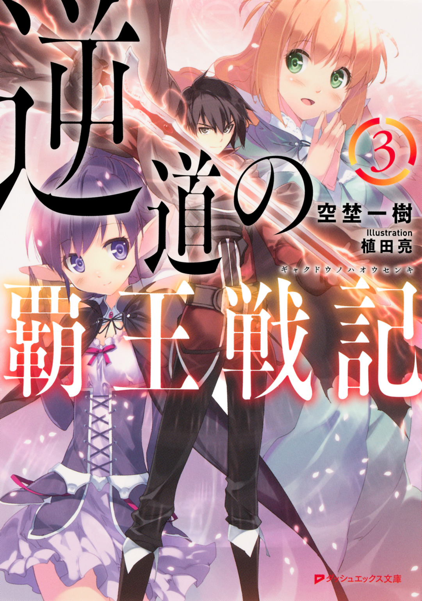
この本は縦書きでレイアウトされています。
また、ご覧になる機種により、表示の差が認められることがあります。
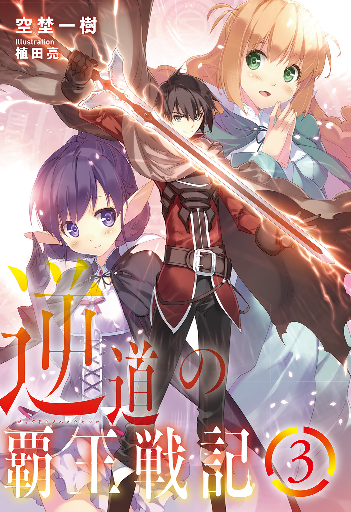
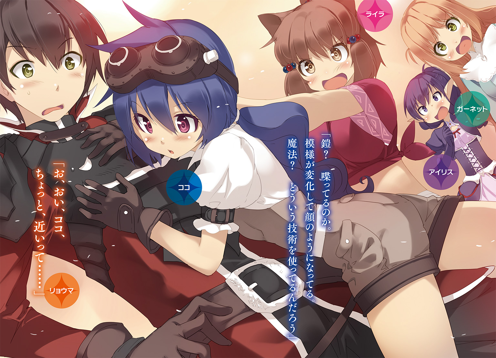
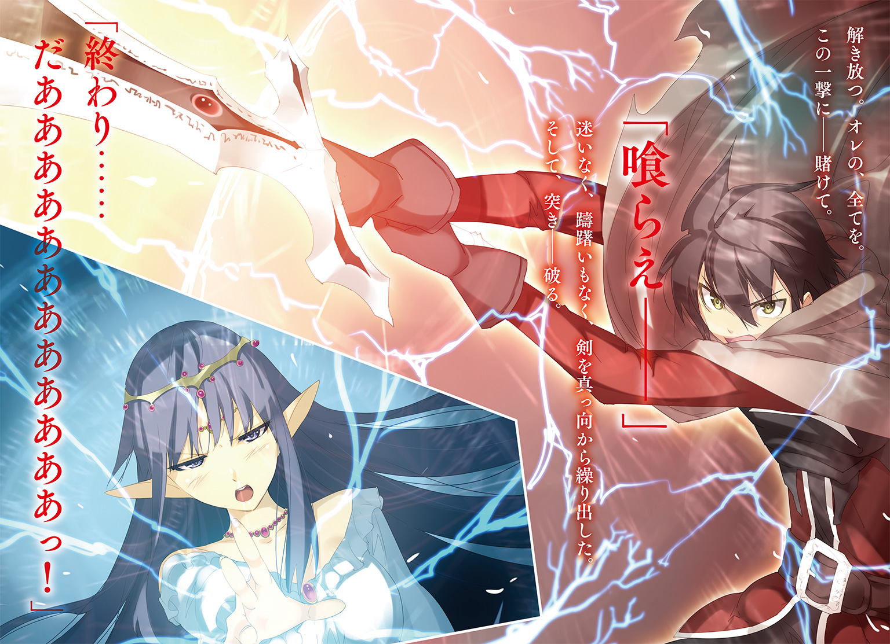
 ダッシュエックス文庫DIGITAL
ダッシュエックス文庫DIGITAL
逆道の覇王戦記３
空埜一樹
第一章 暗雲の街
オレ達が辿り着いた時、街は薄闇に包まれていた。
原因は、空を覆い隠す厚い雲だ。
まるで墨につけたかのような濃さを持つ色は、曇天というよりは黒天といった方が近いかもしれない。
「これは......一体、どうしたというのだ？」
空を仰ぎ見ていたアイリスが、呆然としたように呟いた。
無理もない。初めて見た人にとっては異常な光景だろう。どう考えても、普通の曇り空じゃない。だけど、
「どうもしていないよ。これが、この国じゃ普通のことなんだ」
オレが背後から声をかけると、彼女は驚いたように振り返る。
「『黒霧の国』。それがここ――創族達の国【イルタイン】の別称です」
ガーネットが説明を補足してくれる。
「あれを見てください、アイリス」
そう言ってガーネットが指差したのは、街の中央通りの左右に並ぶ家々だ。
造り自体はティタニアとそう変わらない西洋風の物だけど、一つ大きな違いがある。
どの屋根からも、少々不格好なほど大きな煙突が伸びているのだ。
そこからは常に黒い煙が吐き出されていて、上空へと立ち昇りながらやがては溶け消え、立ち込める雲の一部と化してしまう。
「イルタインでは、あのようにほとんどの家屋から毎日のように煙が大量に吐き出されるため、常に空が暗く翳っているのです」
「なぜそのようなことになっているのだ？」
「創族っていうのは、武器や防具なんかの生産については第一人者でさ。世界中に流通しているもののほとんどはここで作られてるんだ」
ガーネットと交代して、オレがアイリスへ話す。
「だから毎日のように商品を生産したり、あるいは新しい物を研究したりしてる。その過程でああいうふうに特殊な煙が吐き出されるそうだ」
生憎と、どういう過程でそうなるのかまでは、オレも把握してないんだけどな。
「なるほど......納得した。しかし常にこのような薄暗い中では少々、気分が落ち込むのではないか？」
「あー。それは大丈夫だよ。創族の人達って基本的に、外出ないから」
ライラが顔を顰めたままで口を開いた。彼女の性格的にこの街――イルタインの首都、【オレク】の空気は肌に合わないのかもしれない。
「朝から晩まで工房に籠もって延々と何か作ってるんだって。不健康だと思うんだけどねえ」
「まあ、それが彼らの生き方ですから。他国のわたくし達が異議を唱える権利はありませんよ」
苦笑するガーネットに、ライラは「まあ、そうだけどさ」とそれでも不満そうに応えた。
「確かに大通りだというのにほとんど人気がないな......」
周囲を見回しながらアイリスが頷く。
そうなんだよな。初めて来た時も思ったんだけど、本当に人が住んでるのかって思うくらい、道を歩いている誰かの姿を見かけない。精々、首都へ入る前の検問で兵士を見かけたくらいだ。
おまけに彼らですら王様へ会いに来た旨を告げると、そっけなく「城門の前まで行って許可を得てください」とだけ返してきて、元いた立ち位置に戻ると、懐から取り出した何かの道具を弄り始める始末だ。
調べたことといえば、こちらが携帯している武器の数と種類くらいで、オレ達に気づくどころか、何者か問うことすらなかった。徹底的に興味のあること以外への関心がないらしい。
「三年前に知り合った奴の話によれば、一日に数度は外に出るらしいんだけどな。さすがに買い物とかしなきゃいけないからさ」
『要するに必要最低限の目的以外じゃ出歩かないってことじゃねえか。んでずっと家に引きこもってトンカンやってんだろ？ 陰気そうな奴らだな』
「もうちょっと言い方ってモンがあるだろ......」
ため息をつきながら、オレは胸につけた鎧、マンゲツの表面を軽く叩いた。まあ、オレも明確な反論ができないところはあるんだが。
ただ、実際のところ、研究肌の人達なんてそんなものなのかもしれない。
「とりあえず、王城はこの通りを真っ直ぐ北へ向かった先にある。行こうか」
オレは声をかけて、ゆっくりと歩き始めた。
「リョウマのリベリオンを造ったのもこの国の者達だったな？」
アイリスが小さな足取りでついてきながら、オレの右側に並ぶ。
「ああ。正確に言うと中心になっていたのが、だけどな」
「ただ、計画の立ち上げから各員への指揮まで全てを取り仕切っていたのは創族の方々でしたから、彼らが造り上げたと言っても過言ではないかもしれません」
左側に並んだガーネットの話に、アイリスは感心したような表情をした。
「リベリオンの性能を見るに、やはり創族とはすごい技術を持っているのだな。上手く我が国と協力を取りつけられればいいのだが......」
「うーん。それはどうだろうねえ」
オレの前を歩くライラが振り返り、腕を組んで難しい顔をする。
「事によっては、ティタニアとかシュトルライデンよりややこしいかもしれないよ？」
「そ、それはどういうことだ？」
不安がるように、アイリスが眉を顰めた。
「なんていうかさあ。創族の人達ってややこしいんだよ。すぐよくわかんないこと言い出すし。なんだっけ。蜜液にならないとか、甘露的じゃないとかさあ」
「か、甘露？ 蜜液？ ......食べ物のことならなんとかなりそうな気もするが」
ライラの言葉に、なぜか打って変わって自信ありげな態度になる食いしん坊アイリス。
「利益と論理的、な。要するに、自分達にとっての理屈に合わないことや、得にならないことに関しては絶対にうんと言わないってことだよ」
「食べ物のことではなかったのか......」
オレが訂正すると、アイリスは途端に落ち込んでしまう。食べ物以外のことにも、もうちょっと自信もっていこうな。
「相手がどれほど困っていようと、重い事情を抱えていようと、彼らは感情論だけでは動きません。自分達にとって不利益を被る者であれば、すぐに関係を断ち切ります」
「むう......それは、ライラの言う通り、少々交渉が難航しそうだな」
ガーネットの話を聞いて、アイリスは唸ったまま考え込んでしまった。
「我がガルフレアは残念ながら、協力関係を結んだ国に対して何らかの益を与えることはできない。そもそも自国が成り立たなくなりつつあるからこそ、こうして各地を回って手を貸してもらえるよう頼んでいるわけだからな」
「だからややこしいって言ったんだよ。創族って別に他人がどうなろうと知ったことじゃないって人達だからねえ」
「おいおい。それは言いすぎだろ」
ライラの発言にオレは思わず創族の人達をフォローしようとしたのだが、彼女は首を傾げて言った。
「でも三年前、一緒に旅した時はそんなところなかった？」
「うっ......」
それは、まあ。いや、でも、そこまでじゃなかったはずだ。
「す、少なくとも、他人をどうでもいいなんて思ってなかったと思うぞ。まあ、ちょっとだけ、自分を優先するところはあったかもしれないけど......」
『根暗で冷酷で拝金主義ってか。なんか転げ落ちるように創族への評価がだだ下がってるわけなんだが』
「だから、誤解だって！ そんなに悪い人達じゃないから！」
必死で擁護するオレを、マンゲツは『ふーん』とまるで信用していないような横線の目で見てきた。
「ライラの言い分は少々、主観が入りすぎている気もしますが......いずれにしろ、創族の方々が、帝国の置かれた現状を見て協力を受け入れるというのは考えにくいことかと思います」
ガーネットが眉間に皺を寄せながら零す。
「ガルフレアと手を結ぶことで利を得るものがある、という証明が必要ということか。さて、どうしたものか」
アイリスが視線を上げながら思い悩む様子を示した。
空は変わらず、こちらの焦燥を煽るように不穏な黒雲が支配している。
「ひとまずは会って話をしてみよう。考えるのはそれからだ」
オレはアイリスの肩を叩いて、気軽な調子で言った。
彼女に必要以上気負わせないよう、わざと明るい口調にしたんだが――。
実のところオレも、話をどうやっていい方向に持っていけばいいのか、皆目見当がついてはいなかった。
――が。
事態は予想外な方向に展開する。
「別に構わんよ」
身分を明かして王との対面を望み、通された謁見の間。
こちらの要求に対して返されたのは――そんな言葉だった。
「へ......？」
思わず間抜けな声を漏らしたオレに、目の前で玉座に腰かけた男の人はもう一度繰り返す。
「だから。別に構わんと言った」
ルーベンという名を持つ彼は、ひどく小柄で顔も幼いために、まるで子どもみたいに見える。だけど、正真正銘、れっきとした大人だ。しかも五十歳ほどの。
更には――創族達の国を統治する王でもある。
これは、別にルーベンだけに限った話じゃない。彼の周りにいる兵士達も、もっと言えば検問や城門前で会った番人達もそうだった。
創族達は、体が大きく成長しない種族で、顔つきも子どもの頃からさほど変わらないそうだ。
ライラみたいな戦族とは正反対ということになる。
「え、あの......いいんですか？」
信じられなくてもう一度、確認してしまう。するとルーベン王はにわかに顔を顰めた。
「同じことを何度も言わせないでもらおう。時間の無駄だ」
「申し訳ありません、国王。ですが、あまりに容易に申されたもので、少々戸惑っておりまして」
頭を下げたガーネットに、ルーベン王は肩を竦める。
「悩んだ末に遠回しに言おうが即座に簡潔に述べようが、結論は変わるまい。我が国と協力関係を結びたいと申されたガルフレアの要求は、全て受け入れる。これにて帝国と我が国は対等な立場となり、無論、現在、貴国に課している賠償金も今後は払わなくてもいい」
「なんと......まことか、国王！」
アイリスが身を乗り出して目を輝かせた。手間取るかもしれないと思われた話し合いがあっさりと、それも予想以上の成果を得られたんだから、そうなるだろう。
「ふーん。珍しいこともあるもんだね。一体どういう風の吹き回し？」
ライラが頭の後ろで手を組んで、意外そうな口調で訊いた。
「ライラ、失礼ですよ......！」
ガーネットに注意されるも、ライラは特に気にする素振りもなく彼女の方を向く。
「だって創族が何もなしに手を貸すなんて珍しいからさ。裏でもあるのかと思って」
それはそうかもしれないけど、あまりにも率直すぎやしないか。
「別に裏などない」
だがルーベン王は不愉快に思った様子もなく、玉座に肘をついたままで言った。
「単にこれ以上帝国から金を徴収することは不可能だと思っただけだ。そもそもガルフレアに対して【四大聖国】が莫大な損害賠償を課したのは、帝国が持ち得ていた力を削ぐためでもある。貴君の話を聞く限り、それは既に達せられたようだ。だとすれば、今の関係を続けていく意味もあるまい」
......なるほど。理にかなってはいる。
「加えてそちらにはかつて我々に協力をしたクロセリョウマがいる。三年前、我々は彼によって大きな利益を得た。しかしそれを還元してはいない。これは創族にとってはいささか主義に反することだ。我々は理屈に合うことや利になること以外では動かないが、それは相手にも作用する。こちらの利になった相手へは同じく利で返す。そういうことだ」
「......つまり、リョウマ様が三年前にそちらを助けたお礼ということですか？」
ガーネットが伺うと、ルーベン王は少しの間黙り込み、やがて片眉を上げた。
「そういう解釈でも構わない」
アイリスがオレの方を向いて、笑顔を見せる。
「お前のおかげだ、リョウマ！」
「いや、オレは別に何もしてないよ。アイリスの説得が通じたんだろう」
三年前も、別に恩を押しつけるつもりで皇帝討伐に乗り出したわけじゃないしな。
「なにを言う。感謝するぞ、リョウマ」
嬉しそうにこちらの手を握り、ぶんぶんと勢いよく振るアイリス。まあ......結果的に上手くいったなら、よかったかな。
「よかったね、アイリス！ こんなに早く解決するとは思ってなかったよ！」
ライラに抱き締められ、アイリスは「ああ、本当だ。ライラにも礼を言うぞ！」と口元を綻ばせる。
ガーネットもまた、ほっとしたように、そんな二人を見つめていた。
「ただ、帝国への援助ということに関して言えばいささか条件がある」
しかしそこで、ルーベン王が再び口を開く。
「帝国が復興した際には、こちらの援助した額の倍を支払ってもらいたい。つまりは譲渡ではなく貸し付けということだ。構わないな？」
「なにそれ。ケチくさい！ 気前よくばーんとあげなよ！」
ライラが不服そうに頰を膨らませるも、ルーベン王は意に介さなかった。
「我等は絆や信頼といった目に見えぬモノで満足している戦族とは違う。行動を起こすからには最終的に己にとって益にならねばならぬのだ」
「だけどさ、そういうのって――」
「いや、いいのだ、ライラ」
尚も食ってかかろうとしたライラを制して、アイリスが前に出る。
「承知した。では帝国が復興し、民が元の小国であった時のように暮らしていけるようになった時点で、支払わせてもらう」
「......いいのか？ アイリス」
大変な金額になってしまうかもしれないけど、と尋ねると、彼女は笑みを浮かべたままで頷いた。
「元々無理を聞いてもらっている身だ。それくらい、構わない」
「......いいだろう。では帝国との協力を結ぶことをここに宣言する。まあ、金はすぐにとはこちらも言わない。少しずつ返してもらえればそれでいい」
「ご配慮に深く感謝を」
アイリスが丁寧な仕草で頭を垂れると、ルーベン王もまた小さく顎を引いた。
それによって――。
意外なほど迅速に、イルタインとガルフレアとの和平は、締結を迎えたのだった。
......最後はちょっと引っかかったけど。
アイリスが納得したのなら、まあ、いいか。
「さて、どうしたもんか......」
城を出たところで、オレは......いや、オレ達は途方に暮れていた。
別に、やることがなくなってしまったわけじゃない。
かつて皇帝討伐に乗り出し、その功績によって世界的に大きな影響力を持つようになった【四大聖国】は名の通り、四つの国だ。
人族の【ティタニア】、戦族の【シュトルライデン】、創族の【イルタイン】。
そして――。
「神族の国【ファレーナ】......ですか」
ガーネットが呟いた。
そう。残されているのは、その、たった一国だ。
だけどファレーナに関しては、他の三国に比べてやや、というか、かなりハードルが高かった。それも、単純に交渉することに手間がかかりそうだということじゃない。
「神族って、よっぽどのことがない限り、他の種族との関わりを断ってるんだよねえ」
ライラが珍しく眉間に皺を寄せながら零した。
......まさにその通り。問題は、それなんだ。
神族は魔法ではなく『輝術』と呼ばれる違った力を使う。
それは遙かな昔にこの世界の創造主アラムヴェルトから与えられたもので、彼らはそのことから自分達を神様の使いみたいに思っているところがあった。
だからこそ、普段、神族は『俗世の穢れに染まらないように』という理由で山の奥深くの里に籠もったまま滅多に外に出てこないし、こちら側からの接触も強く拒んでいる。
三年前のガルフレア攻略の際には、彼らもさすがに他人事ではないということで自らの意志によって協力を申し出てくれたんだけど――。
今回は、多分、無理だろう。神族がこちらに手を貸すどころか、会ってくれる理由すらない。
「そもそも神族の住んでいるところがどこにあるのかさえ、あたしは知らないんだよね」
「わたくしもそうです。というよりも......この世界において、彼らの故郷を知る者は神族以外いないのではないでしょうか」
ライラとガーネットの会話に、オレは、そういえば、と思い出した。
オレが以前こちらの世界に来た時も、神族達は代表者が何人かティタニアに駐在していただけで、自分達の国には一度も立ち入らせようとはしなかった。
『徹底的な秘密主義ってことか。気に入らねぇな。でも、だったらどうすんだ。手がかりもないのか？』
「今のところはまったく。というか、イルタインとの交渉がこんなに早く解決するとは思ってなかったんだよな。これまでと同じか、それ以上に時間がかかると思ってたから、そっちはあと回しにしてたんだよ」
マンゲツへと返しながらオレは頭を搔く。問題を先送りにしてたツケが回ってきてしまったということか。
「そういえば......確かアイリスのお母上様は神族とのことでしたね。何か聞いてはいないのですか？」
ガーネットに話を振られたものの、アイリスは困惑した表情を浮かべた。
「うむむ。役に立てず申し訳ないと思うが、実はまったく知らないのだ。母上が私の元からいなくなったのが幼い頃ということもあるが、共に暮らしていた時の記憶でも、一度たりとて昔のことを語ったことはなかったように思う。それどころか、帝国へ来る前の――つまり父上と出会う前のことについて触れるのは、あまり好ましく思っていないような節もあった」
ふうん。なにか深い事情でもあるのかな。
......よく考えてみれば、ほとんど外界と関わらないはずの神族の女性が人族の男性と結婚してるんだ。何もないはずはないか。
「だとすればどうしようもないね。どうする？ シュトルライデンに戻って、トト様とかに何か知らないか訊いてみる？」
「時間はかかるかもしれないけど、それしかないだろうな。というか、はじめからそうしてればよかったんだよな」
ライラの提案にオレは自分の失態を悟った。目の前のことをなんとかするのに夢中で、まるで思い当たらなかったのだ。
「仕方ありませんね。そうすると致しましょう。とはいえ、さすがに今日はもう遅いですから、出発は明日にしましょう。宿を取りに参りましょうか？」
背後を振り向きながらガーネットが言った。街に来た時と同じ黒色の空だけど、少しだけ空いた隙間から紅色の陽光が漏れ差している。そろそろ日暮れが近いのかもしれなかった。
「そーだね。ご飯食べたいよ」
ライラがお腹を摩りながら笑った途端、ぐりぎりりりりりあいぎりりりぎゅうううう、という凄まじい音が聞こえてくる。
「......う、うむ。そうだな。そうするとしよう」
気まずさを誤魔化すようにしてアイリスが踵を返した。いや、もうバレバレなんだけどな。毎度のことながら、すごいお腹の音だな。
「......あ。でもその前に、ちょっといいかな」
歩き始めたみんなに、オレは声をかけた。
「まだ夜まで少し時間はあるし、会いたい人がいるんだけど」
「うむ？ 誰にだ？」
振り返ったアイリスに答える。
「ほら、城へ入る前に言っただろ。リベリオンを造る時に創族の人達がかなり貢献してくれたって。その時、中心的な立場にいた人達がこの首都に住んでるんだ。せっかく来たんだから、挨拶くらいはしておこうと思って」
「ああ、そうですね。わたくしも会うのは久方ぶりですし、顔を合わせたいです」
ガーネットはすぐに同意してくれたけど、もう一人は明らかに嫌そうな顔をした。
「えー。別にいいんじゃない？ わざわざ会わなくても」
「いやいや。そんな冷たいこと言うなよ、ライラ。オレにとってはこんな機会、二度とないかもしれないんだしさ」
「それはそうだけどさあ。あたし、なーんか、あの一族......特に末っ子とは相性悪いんだよねえ」
ぶつぶつと呟きながら、ライラは口をへの字に曲げる。
誰とでもすぐに打ち解けられるライラにしては珍しいけど――まあ、別に彼女だけに限った話じゃなかった。
自分の直感や印象に判断を委ねることが多い戦族と、理屈ありきで動く創族は、どうにも反りが合わないようなのだ。
文系と理系みたいなもんかな、と思ったけど、ちょっと違うかもしれない。
ともあれ、三年前もライラを始めとした戦族と創族はよく喧嘩をしていたことがあった。
「まあまあ。ライラだって長いこと会ってないんじゃないか？ 時間が経てば変わることもあるし、案外大丈夫かもしれないぞ」
オレのとりなしに、ライラは「うーん」と納得していないふうだったが、やがて諦めたように頷いた。
「私も是非、会ってみたいな。リョウマのリベリオン製作に携わった者なのだ。きっと興味深い話が聞けることだろう」
アイリスは至って素直に了承してくれたので、オレはありがとう、と礼を述べる。
『なんか根暗で常に俯いててぼそぼそ聞き取れない喋り方して、服装も地味でたまに唐突に変なことで笑いだす奴らなんじゃねーだろうな。だったらごめんだぜ、オレは』
「どっから出てきた偏見なんだよ、それは......。いいから、お前は静かにしてな」
余計なことを喋るマンゲツをたしなめつつ、オレは記憶を頼りに視線を向けた。
「確か、家はあっちの方だったよな」
ガーネットが首肯する。うん、正しかったみたいだ。
「それじゃ、向かってみるか」
オレはみんなと共に向きを変え、懐かしい相手へと想いを馳せながら歩きだした。
「......ん？」
が――すぐに足を止め、振り返る。
「どうした？ リョウマ」
「いや......」
アイリスが声をかけてくるのに、オレは首を傾げつつ、辺りの様子を窺ったあとで、
「うん、なんでもないよ」
そう答えると、再び前を向いて進み始めた。
なにかさっき、誰かに見られてる気がしたんだけど――。
気のせいだな、多分。
※
「......完全に気配を消したつもりではあったが。さすがに英雄と呼ばれるだけのことはあるか」
女は、消え入る寸前の声で囁いた。
オレクに建つ建物の中でもひときわ高い部類にある家の屋根からは、眼下に広がる光景がよく見える。
英雄クロセリョウマとその同行者達、加えて皇帝グレディスの娘アイリスは、共にいずこかへと去っていった。
「如何なさいますか？ フェイ様」
背後から仲間が尋ねてくるのに、女――フェイは静かな口調で返す。
「まだ早い。機会を窺い、もっとも適した時を狙って仕掛ける」
相手はあのグレディスを倒した輩だ。下手な手を打ったところで返り討ちに遭うのが落ちだろう。だとすれば、判断は慎重にしなければならない。
「それまでは監視を続けることとする。お前達は散って街に潜伏しておけ」
「――御意」
わずかな空気の乱れと共に、仲間達が場から消えたことを知った。
フェイは首に手をやると身に纏っていた衣服の襟を引き上げ、口元を覆い隠す。
「......いずれ、お迎えに上がります」
くぐもった声で呟き、うずくまると、フェイは続けた。
「それまで今しばらくお待ちください。――アイリス様」
勢いよく屋根を蹴ると、体を縛りつける鎖から解き放たれたように軽やかに跳躍する。
やがて――フェイは、家々の屋根を跳び渡りながら移動を始めた。
※
中央広場からそう遠くない場所に、目的の家はあった。
建物自体は他と同じような形をしているけど、少し大きめで、煙突から吐き出されるものも一層濃くて量が多い。
「すみません、誰かいますか？」
オレは扉をノックしたが、しばらく待っても返事はなかった。
「留守なのでしょうか？」
「だったら帰ろうよー」
ガーネットの疑問にライラはオレの腕を引っ張った。
「まだわかんないって。もうちょっとだけ待ってくれよ」
頼んでからオレは再度、木製の扉を叩く。
が、やっぱり、誰の声も聞こえてこなかった。
「おかしいな......出かけてるのかな」
創族の性格からして、高確率で家にいるはずなんだけど。
「......あれ？」
試しにノブへ手をかけてみて、オレは目を瞬かせた。
すんなりと回ったのだ。鍵が開いている、ということになる。
「開けっ放しで外出したというのか？ イルタインは随分と安全な国なのだな」
驚いたようにオレの手元を見つめるアイリス。いやいや。さすがにそれはないって。
「あのー。誰かいますかー？」
ドアの隙間に顔だけ入れて、声をかけてみた。
だけど、室内は静まり返っていて、誰かがいるような様子はない。
......いや、待てよ。
「なにか聞こえないか？」
オレはみんなに言ってから耳を澄ませた。
「あら、本当ですね。なにやら金属を叩くような音が......」
ガーネットが同意すると、アイリス達もまたそれぞれ首肯する。
「......入ってみるか」
少々無作法だけど、怒られたら謝ろう。
オレは家の中に足を踏み入れた。
まず目に入ったのは、暖炉のある居間らしき場所だ。机と椅子に、戸棚と最低限の家具がある。だけど、言ってしまえばそれだけだ。暮らしに必要なものだけとりあえず揃えました、という感じだった。
おまけに何やら妙な臭いがする。原因はその奥のキッチンにあった。
皿が山積みになってるんだが、全部が溜めた水に浸けてあるだけでろくに洗っていないから、こびりついた食べカスやらなんやらが腐ってきているらしい。
しかも肉や魚の骨から野菜のクズみたいなものが端っこに山となっていて、それらも全部、いい具合に混じり合って酸っぱい臭いを醸し出していた。
「わー。なにこれ。くっさい！」
ライラが鼻を押さえてしかめっ面をする。人一倍鼻が利く彼女のことだ。多分、オレ達が感じている数倍以上のものを嗅ぎとっているに違いなかった。
「恐らく、どこかの店で買った物を食べて、そのままゴミを適当に放置しているのでしょうね......物作りに夢中になると他のことがおろそかになるのは、創族の特徴です」
口元を手で押さえながらガーネットが分析する。
「それにしても、ひくしゅっ、これはさすがに、へくちっ、ひどいのでは、はしゅふっ、ないのか？ ――へしゅひちっ」
臭気に刺激されたのかアイリスがくしゃみを連発した。......最後のはくしゃみでいいんだよな？
「あー。もう。我慢できない。片っ端から洗う！」
ライラが腕まくりをすると、キッチンへと突撃した。傍らへ無造作に投げ捨てられていたスポンジを手にとると、石鹼を泡立てながら皿を洗い始める。その動きは結構、手慣れていた。
『へえ。ガサツそうに見えて意外に家庭的じゃねえか。見直したぜ』
マンゲツが失礼な物言いで褒め称える。
「料理してるとね、後片づけする癖が自然に身についてくるんだよ。特に野宿が続くと食器は同じ物を使わないといけないからね」
瞬く間に綺麗になったお皿を横に積み重ねていきながら、ライラはこちらを振り向いた。
「ね、だからリョウマ、あたしを奥さんにすると、助かっちゃうよ。他の家事だって大体できるんだから」
「なっ――しょ、少々お待ちください。わたくしも手伝いますっ！」
ライラの発言に顔色を変え、ガーネットは飛ぶようにしてキッチンへと向かうと、皿の一枚を手にとる。
「こ、この程度、わたくしの手にかかれば造作もありません。ほら、こんな簡単に」
がしゃがしゃがしゃがしゃがしゃがしゃがしゃんっ！
「......割ることができます」
「あーあーあーあー。もう、素人が手を出すからそういうことになるんだよ」
ライラは呆れたようにして、身を屈めると皿の破片を集め始めた。
「お姫様は大人しく給仕を待ってた方がいいと思うよ」
「な、なにを言いますか。ライラだって姫でしょう！」
「あたしはしょっちゅう里の外に出てるから、一人で身の回りのことしてるんだよ。無理して怪我しちゃ危ないよ？」
大き目の欠片を一つ所へ寄せると、ライラは壁にかけてあった箒をとって細かいものを掃き始めた。
「むうううううううううううう」
滅茶苦茶頰を膨らませていくガーネット。
「お、落ち着けってガーネット。別にオレは、女性が家事できなくてもいいと思うぞ。男がやればいいんだしさ」
慌ててフォローしたが、ガーネットはそれでも不満そうにライラのことを見つめていた。
がっしゃんがらがらがらがしゃんっ！
「はわわわわわわ」
「で、アイリスは何やってるんだ!?」
いつのまにか見えないところでお皿を派手に何枚も破壊し、転がっていく無事な一枚を追いかけていたアイリスに、オレは突っ込んだ。
「い、いや、私も挑戦しようと思ったのだが、なぜか手がつるりと滑ってこのように......リョウマ、私が考えるにこの皿は、きっと生きているぞ！」
「生きてたらそもそも自分で死ににはいかないだろ......」
『自殺願望の皿だったのかもしれねえ。皿社会の闇を垣間見たな、お嬢』
わけのわからない発想をするマンゲツ。
「なんと。待て。待つのだ。お前にはまだ未来がある。そう死に急ぐものではないあーっ！」
最後の一枚、ご臨終。
「ある意味、地獄絵図だな......」
一体なぜこんなことに、と嘆きながらオレはアイリスの割った皿の破片を回収し始めた。
と、そこで――。
「なんだい、さっきからうるさいな」
扉の開く音がして、奥の方から誰かがやってきた。
「人が新しい作品を作っているっていうのに、全然集中できないじゃないか」
そう言って姿を見せたのは、女の子。それも――懐かしい顔だ。
腰辺りまである藍色の長い髪を首の辺りで適当に縛っていて、瞳は赤。少々色落ちしたシャツの上から、オーバーオールのようなものを身に纏っている。
目はやや鋭く、唇が尖り気味なので、どこかふてくされた表情をしているように見えた。
顔つきが幼くて背も低いので子どもみたいに見えるけど、実際には彼女はオレと同じ歳だ。
「ココ！ 久しぶりだな。オレだよ、リョウマだ。覚えてるか？」
声をかけると、彼女――ココ＝エヴァンスはこちらを向いて、片眉を上げた。
「あれ、誰かと思ったらリョウマか。キミ、元の世界に帰ったんじゃなかったっけ？」
「いや、ちょっと事情があって戻ってきたんだ。で、オレクに来たから寄ってみたんだけど......」
「ふうん、そう。で――なに、この状況は？」
首を傾げて、部屋に散乱している皿の残骸を指すココ。
「申し訳ありません、ココ、わたくし達がお皿洗いに失敗してしまったせいで......」
申し訳なさそうに縮こまるガーネットとアイリスを見て、ココはしばらく黙っていた。
が、やがて、
「あ、そう。まあ、いいや。片づけておいてね。ボクは作業の続きがあるから、これで」
そう言い残すと、踵を返して戻ろうとした。
「ちょっと、ちょっと。せっかく訪ねてきたのにそんな冷たい態度とることないじゃない」
が、ライラが駆け寄って肩を摑んだので、ココは顔だけを彼女へと向ける。
「あとちょっとで新作が完成しそうなんだよ。突然来て邪魔しないでくれるかな」
「なに、それ。三年前に一緒に旅した仲でしょ？ もうちょっと愛想よくしてくれてもいいと思うけど」
「愛想をよくするというのはこちらの判断によってなすもので、強制されるものじゃないだろう。礼儀を欠いた態度をとられたと思うのであれば、キミがその程度の価値しかないということじゃないかな」
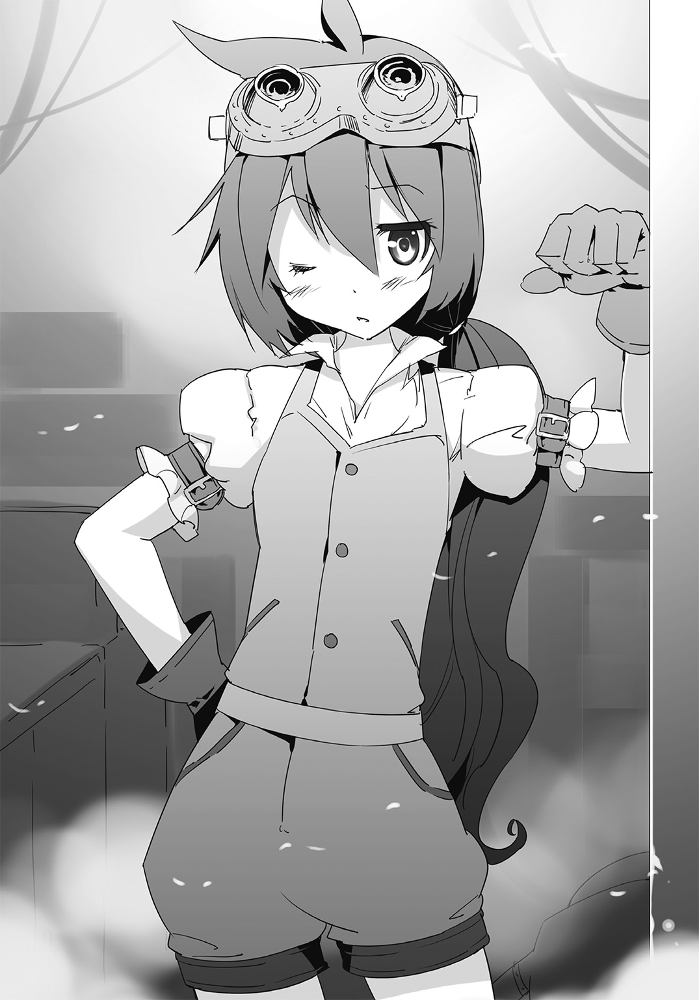
「なにー！ 相変わらず失礼な奴！」
「極めてまっとうな反論をしたまでだよ。キミこそ相変わらずすぐに感情的になるな」
「ほっといてよ！ それにあたし達はともかく、リョウマがいるんだよ、リョウマが！ あんまりにもそっけないと思わないの？」
「ああ......まあ、それもそうか」
ココはオレの方を見ると短く言ってきた。
「久しぶり、リョウマ」
「あ、ああ、久しぶり」
「元気だったかな？」
「まあ、それなりには」
「それはよかった。じゃ」
「まてまてまてまてまてーい！」
会話を早々に切り上げて去ろうとするココだったが、ライラに遮られてしまう。
「なんなんだよ、キミは。ちゃんと旧交を温めただろう」
「あれは旧交を温めたって言わない！ もっと、こう、積もる話もあるでしょう!?」
「別にない」
「あるよ！」
「ない」
「ある！」
「ない」
「あーるー！」
「ま、まあまあ」
ライラが今にも嚙みつかんばかりに怒り出したので、割って入った。
「確かにいきなり訪れたのはオレ達が悪かったし、抑えてくれよ。な？」
「ううううう。わんっ！」
オレが宥めると、ライラはひと声吠えたあとに、そっぽを向く。
「ごめんな、ココ。確かにいきなりすぎたよ。また機会を改めて訪ねていいかな？」
オレが尋ねると、ココは腕を組んで、深くため息をついた。
「......やれやれ。まあ、別に構わないよ。あとは仕上げだけだったからね」
「そうか。じゃあ、明日、出発前に来るから」
「そうじゃなくて。今。お茶くらいなら出すよ」
「......え？」
意外に思ってオレがぽかんと口を開けていると、ココは肩を竦める。
「申し訳ないことに、両親や兄弟達は全員、材料集めやら道具の出張修理やらで外に出ててしばらく家に帰ってこないから、ボク一人のおもてなしになるけどね。それでもいいのなら」
「あ、ああ、いや、大丈夫。問題なし。ありがとうな」
「気にしなくていい。ま、三年ぶりの知り合いを無下に追い返すのもどうかと思ったしね」
そこ、適当に座ってて、と言い残してココは奥へと消えていった。
「......なんというか、少々淡泊な人物のようだな」
席についたところで、アイリスが小声で話しかけてくる。
「あー。まあ。なんていうか、あんまり人付き合いとか興味ないらしくてさ。割と誰に対してもあんな感じだよ。悪気はないんだけどな」
「だから性質悪いんだよ、余計にっ」
まだ立腹している様子のライラが、机に肘をついてむくれた。
「三年前もできるだけ周りの人と関わらないようにしている節がありましたね。後半になるとわたくし達ともいくらか会話を交わすようにはなりましたが......」
ガーネットが苦笑気味に零す。
「ココは三年前のリベリオン製作の時はまだ職人としても見習いだったんだけどさ。才能があるからって、見識を広めるために、彼女の一族と一緒に旅に同行してたんだよ」
「ほう。それはすごい人物だな。となれば今はかつてより一層腕が上がっていることだろう」
「性格は全然変わってないけどね」
アイリスの言葉にライラが不機嫌そうに付け加えた。
「性格に変化がないのはキミも同じだろう、ライラ」
戻ってきたココが無表情のままで告げる。が、彼女の手は何も持っていなかった。
「あら。てっきり茶葉を取りに行ったのかと思いましたが。そうではなかったのですか？ ココ」
ガーネットの問いかけに、ココは山積みになっている食器の中から器用に四つのカップを取り出しながら答える。
「そのつもりだったんだけど、三日前に切れたままだったのを思い出したよ」
次いで皿なんかが入っているところとは別の桶にカップを突っ込んでいくと、彼女はそれらをどんどんと机の上に置いた。
「というわけで、水をご馳走しよう。......異論は？」
目の前でたゆたう水面を見つめながら、オレは思わず噴き出してしまう。
「......ありません」
ここまで堂々としていると、いっそ清々しかった。
第二章 生きた迷宮
「キミは随分と非合理な生き方をしているんだね」
それが、ココから初めてかけられた言葉だ。
三年前の皇帝討伐の旅は、【四大聖国】の代表者に加えて色んな役目を持つ人達がいて、今と違って大勢のメンバーで構成されていた。
だからとてもじゃないけど全員としっかり話をすることなんてできなくて、特に創族の人達っていうのはあんまり自分達以外の種族と関わり合いを持たないようにしていたから、輪をかけて接触がなかったのだ。
そんな中、オレはある魔獣との戦いの中で仲間の一人を庇い、傷を受けてしまったことがあった。
その治療をしてもらいがてら、昼の休憩をとっている時に、近寄ってきたココが不意に話しかけてきたのである。
「非合理って？」
不思議な顔をしたオレに、ココは軽く息をついて腰に手を当てた。
「キミが助けたのは護衛役の兵士だ。つまりキミをはじめとしたお偉い方々の命を死守するために存在している。それなのになぜキミが彼を庇って怪我をする必要があるんだい？」
「なぜって......」
そんなことを考えたこともなかったオレは、しばらく答えを探してから言った。
「......危なかったから？」
「理解不能だね」
オレの隣に腰かけて、ココは呆れたように首を横に振る。
「仮に彼が先ほどの戦闘で傷つく、あるいは最悪死んだとしても、それは己の役目に従ったにすぎない。別に庇う必要なんてなかったんだよ」
「でも、攻撃を受けそうになってる仲間がいたら助けるだろ。おかしいかな」
「人間的にはどうか知らない。だけどキミの立場的にはいささか軽率だったと言わざるを得ないな」
こちらを見るココの目には非難の感情が宿っていた。
「リョウマ、キミはボク達にとって極めて重要な存在だ。この世界を皇帝の支配から解き放つには、どうしたってキミの力が必要だからね」
「うん......まあ、そうみたいだな」
それに関しては反論するつもりはない。最初は戸惑っていたけど、旅が長く続くうちにようやくその立場に慣れつつあった。
「転じてさっきキミが助けた兵士はどうか。たとえ彼がいなくなったとして、戦力の低下には繫がるだろうけど、即座に窮地には陥らない。いざとなればどこかの国から人員を補充するだけだ」
「......なにが言いたいんだ？」
「兵士の代わりはいてもキミの代わりはいないってことだよ」
ココは強く、叱りつけるような口調で言う。
「クロセリョウマという人間は、何十、何百、何千という兵士に勝るほどに貴重な人材なんだ。そのキミが、もし単なる雑兵にすぎない彼を助けて重傷を負ったら、まして、命を落としたりなんかしたら、どうなる？ この旅は意味をなくしてしまうんだよ」
「だからさっきは見捨てるべきだったっていうのか？」
「率直に言えばそうだ」
「だけど――」
「だけど、じゃない。キミはもっと自分の立場を自覚するべきだよ」
オレの言葉を遮ってココは続けた。
「ボク達創族は、効率的な生き方を好む。論理の通じる選択を重んじる。それは手間なく、無駄なく、正しい手順で物事を終えるためだ」
「......オレの行動は正しくなかったっていうのか？」
「ボクからすればね」
ココは立ち上がって、オレを見下ろしてくる。
「キミの迂闊な行動で、皆で積み重ねてきた全ての努力が水泡に帰してしまうこともある。だから気をつけてほしい。ボク達の目的は皇帝を討伐することだ。その達成を邪魔するものはたとえキミであったとしても許されない」
オレは自然と腕を押さえていた。先程負った傷が痛む。
「さっきの兵士のことだけじゃない。キミはとかくそういった、非合理的で感情的な動きが多い。だからそれを注意しに来たんだ。合理的で、無駄のない、美しい生き方を頼むよ。――異世界の英雄、クロセリョウマ」
前を向き、用事は済んだとばかりに、ココが歩き始める。
オレはしばらく彼女の背を見つめていた。
だけど――頭上を仰ぎ、息をついて、静かに零す。
「ごめん、無理」
ココの足が止まった。振り返り、怪訝な顔を向けてくる。
「元の世界でもそうだったんだけどさ。オレってお人好しってよく言われてたんだよな」
オレは立ち上がり、視線の先を、昼食をとっている人達へとやった。
「他人のために動いて損ばかりしてるとか、そんなことしても見返りなんかないんだからやめろとか、悪い奴らに利用されるぞとか。友達にも色々とアドバイスもらったよ」
「どれも正論だね。それだけ言われても改めないのはどういうことなんだい？」
「改めようとはしたさ」
オレも子どもじゃないから、善行が全部報われるなんて信じていたわけじゃない。
『情けは人のためならず』なんて言うけど、実際、誰かに親切にしたところで自分のところへ回り回ってなんかこない。寧ろ、結果的に不幸になったことの方が多かった。
「......だけどさ。どうしてもやめられないんだよな」
苦笑して、オレは、頭を搔く。
「車の通りが多い道を渡ってるおばあさんがいたら手を引きたくなるし、道に迷ってる人がいたら案内したくなる。お母さんとはぐれてる子どもがいれば一緒に捜したくなるし、誰かに殴られてる人がいたら、喧嘩もできないのに助けに入りたくなる。考える前に、動いてるっていうかさ」
ダメだって思ってても、気づけば誰かに手を差し出しているんだ。
「で、何かしっぺ返しを受けたら当然、後悔するんだけど。また同じような状況になったら、同じようなことをしてる。......多分、性分なんだよ。これは」
自分にとって、逃れられないようのものなんだ。
「だから、オレはもう諦めたんだ。誰かにバカにされたり怒られたりしても、やるしかないんだろうなって。もちろん、周りの人を心配させないように、自分の身は大事にするけど。それが大丈夫な範囲で、困っている人がいたら助けるんだよ」
オレはココに対して、深々と頭を下げた。
「だから、ココの言うこともよくわかるんだけど、ごめん、無理だ。オレは自分がどうとか相手がどうとか関係ない。目の前で傷つきそうになってる人がいたら前に出るよ。――そういう生き方しか、できないんだ」
ココは無言で佇んでいる。オレはまた怒られるんじゃないかって、ひやひやしていた。
だけど、
「......理解不能だね」
肩を竦めて首を振り、ココは言った。
「まあ、ボクの忠告がキミにとって意味をなさないというのなら、これ以上は何も言わないよ。精々気をつけるといい。ただし――」
こちらに対して真っ直ぐに指を突きつけてきながら、
「キミの生き方を肯定したわけじゃない。他の人達はともかく、ボクはいいとは思えないし、認めないよ。それだけは自覚しておいてほしい」
「あ、ああ。わかったよ。その......気遣ってくれて、ありがとうな」
オレの無茶を心配して戒めてくれたんだろう。
そう思って返した言葉だったんだけど、
「......さっきまでのを気遣いととるのか。なるほど。確かに『お人好し』だ」
ココは複雑な顔をしながらぼやいた。
「ん、なんか変なこと言ったか？ オレ」
きょとんとしているオレに対して、ココは長いため息をついてしばった髪を揺らし、前を向く。そして、
「別に。お気楽でいいと思っただけだよ」
一言だけ残すと、オレの元を去っていった。
以来――ココはなにかといえば、オレの傍にいるようになる。
会話を交わしたことでいくらか打ち解けてくれたかと思ったのだけど、彼女曰く『いざという時にキミの無茶を止めるため、横で監視するだけだよ』とのことで、実際、こちらとの距離感は旅が終わるまで一定のままだった。
まあ、それでも、さすがに長く一緒にいると、オレやガーネット達ともそれなりに話はするようになっていて――ライラとは最後まで相性が悪いままだったけど――。
今回の再会も、オレとしてはやはり、嬉しいものだった。
「ふうん。そんな事情がね」
水の入ったカップを傾けながら、ココが声を漏らす。
旧交を温める中で、オレ達の旅の目的を全て話し終えたところだった。
「アイリス――だったっけ。帝国を復興させるためにかつての英雄であるリョウマを再びこの世界に召喚するというのは、賭けの部分が大きすぎてボクならやらないという点を除けば、そんなに悪くない考えだと思う。無謀なのか何も考えていなかったのかは別として、本当に実行したというのも評価できるね」
「う、うむ。そうか。ありがとう」
褒めているのかけなしているのかいまいちわからないココの物言いに、アイリスが当惑している様子で礼を述べる。
「でも、驚いたよ。ティタニアとシュトルライデンでは、協力を取りつけてもらうのに結構苦労したからさ。なのに、イルタインじゃあっさりと了承してもらったから」
オレが言うと、ココは片眉をわずかに上げた。
「創族は基本的に自分の利益になり、合理的に納得できることがあればどんなものであろうと受け入れるからね。他の種族みたいに、いつまでも下らない因縁や憎悪といった感情に固執していないだけだよ」
「ちょっと、それ、どういう意味？ 戦族が下らないことにこだわってるみたいに聞こえたんだけど」
ライラがむっとした表情になる。
「そう聞こえるように言ったんだから、そう聞こえるだろうね。キミも少しは察しがよくなったとみえる」
「上等だよ表に出ろコンニャロー！」
澄ました顔でココが堂々と言ってのけたので、ライラは椅子を蹴立てていきり立った。
「こら、久しぶりに会ったんだから喧嘩するなって！ ココももうちょっと言い方に気をつけてくれよ！」
ライラを羽交い絞めにしつつオレが注意すると、ココは腕を組んで目を瞑る。
「わかったよ。昔から根が正直なところがあるもので、すまないね。つい真実を口にしてしまう」
「ぜんっぜんっ、反省して、ないっ!!」
「ココっ！」
ライラが今にも暴れそうなのでさすがにオレがちょっと口調を強めにすると、ココはやっと降参したというように両手を上げた。
「はいはい。すまなかったよ。許してほしい。これでいいかい？」
「うううううー......今回だけだからね！」
荒々しく言ってから、ライラは再びどかっと椅子に腰かける。......まったく。一触即発とはこのことだ。
「ところで、ティタニア、シュトルライデン、イルタインと来たのなら、あとはファレーナだけだね。だけどあそこは自分達の住んでいるところを絶対に他種族へは教えない。他国からの連絡を受ける時も、それ専用に設けた施設でするほどの徹底ぶりだ。その辺りはどうするつもりなんだい？」
ココが話題を変えるように問いかけてきたので、オレはガーネット達と顔を見合わせた。
「それが......実は皆目見当もつかなくて、困り果てているところだったのです」
「ココ、お前は何か知っていないか？」
ガーネットが言って、オレが尋ねると、ココはすぐに首を振る。
「さあ。興味もないから調べたこともないよ。アイリスの耳は尖っているけど、キミは神族じゃないのかい？」
「母がそうなのだが、今、消息を絶っていてな。私もよくはわからないのだ」
「だとすればお手上げか。どうしようもないね。諦めた方がいい」
『他人事だと思って随分簡単に言ってくれんじゃねえか。このちびっ子』
突然、マンゲツが声を出したので場が静まり返った。
「......なんだい、それ」
興味深そうにココがオレの胸の辺りを覗き込んでくる。
「オレ達以外の前では大人しくしてろって言ったろ、マンゲツ」
『いつまでも黙ってるのは性に合わねえんだよ、兄弟。それにさっきからこのちびっ子の言い方が冷たくていちいち癪に障ってたんだ。ちょっとくらいいいだろ』
模様の口に当たる部分をへの字に曲げて、マンゲツが抗議してくる。
「鎧？ 喋ってるのか。模様が変化して顔のようになってる。魔法？ どういう技術を使ってるんだろう」
身を乗り出し、ぺたぺたとマンゲツを触り出すココ。
『こら、ちびっ子、やめろ！ 失礼な奴だな。初対面の鎧には礼儀を払えって親に教わらなかったのか？』
露骨に嫌そうな態度を取るマンゲツ。どうでもいいけど、どんな家庭でそんな特殊なこと教えるんだよ。
「喋るだけじゃない。知性があるのか。使い手の意志に反応する武器や防具は幾つかあるけど、こうまで発達しているのは珍しいな。これじゃまるで一個の生命体だ。面白い」
どんどんと距離を詰めてくるココは、しまいにオレの体に半ばしがみつくような形でマンゲツのことを調べ始めた。
「お、おい、ココ、ちょっと、近いって......」
いくら外見が小柄で幼く見えるからといって、ココは同じ歳だし、ここまで密着されると妙な気分になってくる。
「ココ、ちょっと、リョウマ様から離れてください！」
「そ、そうだぞ！ その、少し、遠慮がなさすぎるのではないか？」
ガーネットとアイリスから交互に言われるも、ココはまるで聞く耳を持たなかった。
「材質としては通常と変わらないみたいだけど、この表面の独特の滑らかさと光沢はどうやって出しているんだろう。魔力を帯びさせているにしても、一般市場に流通しているものじゃないぞ......」
夢中になったまま、鎧だけならまだしも、それを繫ぎとめている金具の部分がある辺り――つまりオレの腕やら横腹辺りを丹念に触り始めるので、次第にこちらの体温が上がってくる。
『や、やめろ、あふ、変な所を触るんじゃねえ、あふん、ちょ、やめ、おうふっ』
「変な声出すなマンゲツ！」
オレが言ってるみたいだろ！
「こら、ココ！ 馴れ馴れしいよ！ リョウマが困ってるでしょ！ 早く離れて、ほら！ はーやーくー！」
ライラがココの腕を摑んで引っ張るが、彼女の体はびくともしない。かなりの力が加えられているだろうに、一度興味のある対象を前にした創族の執着は恐るべきものがあった。
「ああ、もう、うるさいなっ。邪魔しないでよ」
鬱陶しそうにライラの手を振り払おうとしたココだったが、さすがにそれはできず、しばらくしてからようやく解放してくれた。
「まったく......少しくらい、いいじゃないか。リョウマ、その鎧はなんなんだい？」
「あ、ああ。マンゲツっていって......いや、正確には『月輪の鎧』っていうんだけどさ。グレディス皇帝の使っていたものをアイリスから借りてるんだ」
首を傾げて訊いてくるココに、オレは、なぜか未だに喘ぐような声を出しているマンゲツを見下ろしつつ答えた。
「そうか、皇帝が装備していたものか......これで合点がいった。魔神の力を使っているとなると、ボク達とは違う工程で作られたのかもしれないな」
『ま、満足したか？ 今度同じことをやったらぶっ飛ばすからな、ちびっ子』
疲弊したのか、マンゲツの脅し文句にもいつもの迫力がない。
「......そういえばリョウマ、リベリオンは持っているのかい？」
それを華麗にスルーして、ココが首を傾げた。
「ん？ ああ、あるよ。ティタニアの宝物庫に保管されてたのを貸してもらってる」
腰から提げていた鞘を外すと、オレはリベリオンをココへと渡す。
彼女は刃を抜くと、それを窓からわずかに差し込む陽光へと翳し、目を細めた。
「うん......。三年前と変わらず、曇りもなければまったく刃こぼれもしていない。さすがうちの一族が総出で造っただけのことはある」
「ああ。改めてすごい武器だと思ったよ。三年前もそうだったけど、今だって何度も助けられてる」
オレが素直に褒めると、ココは刃を鞘へと収め、リベリオンを返してくる。
「間違いなく今まで製作した中で最高の武器だって、両親も言っていたからね」
「三年前は見習いという立場でしたが、今はどうなのですか？ ココ」
ガーネットに質問され、ココはオーバーオールのポケットに手を突っ込んだ。
「一年ちょっと前に国王から認められて、ボクも仕事を受けるようになったよ。今では他の家族と変わらない量をこなしてる」
「へえ、すごいな！ オレと同じ歳なのに、もうプロとして働いてるってことか」
感心したオレに、ココは表情も変えない。
「別に大したことないさ。創族は十五になったら誰だって独り立ちするものだからね」
「仕事を受けているということは、道具を作っているのだな。何が専門なのだ？」
アイリスが言うのに、ココは「なんでもさ」と答えた。
「魔力を使えば効果を発揮する道具や特殊な力を持った武器や防具まで、ひと通りはこなせるよ」
「それは......素晴らしいですね。さすがは創族の中でも名門で知られるエヴァンス家の職人です」
微笑みと共に拍手をしたガーネットに対して、ココは少しだけ顔を背けた。わかりにくいけど、オレは知ってる。それは、彼女が照れを隠すためにする仕草だ。
「ま、それはともかく――リョウマ、どうせ神族の里へ行く方法がわからないのなら、いっそ他のことをしてみてはどうかな」
「他のこと、か？」
なんだろうか。思い当たらないオレにココはこちらの腰辺りを指差してきた。
「たとえば――リベリオンを完成させる、とかさ」
「......へ？」
唐突すぎて、上手く理解できずに、間の抜けた声を漏らしてしまう。
「完成って......リベリオンはもう三年前にできあがっただろ？」
だからこそ皇帝と正面から渡り合って、打ち倒すことができたのだ。
「もちろん、そうだ。でもね。キミは知らなかったかもしれないけど――リベリオンには当初の計画で断念せざるを得なかった部分が残されてるんだ」
「なんだよ、それ。一体リベリオンに何が足りないっていうんだ？」
「ある鉱物だよ。それを使って鍛え直せば、キミの剣はもっと、ずっと、強くなるはずだ」
「ある鉱物......ですか。なんでしょう」
ガーネットが尋ねると、ココは頷きと共に返した。
「虹光石――と、呼ばれている貴重な鉱石だ。ちょっと特殊な条件下で採取しなければならなくてね。三年前の時点ではどう足搔いても不可能で、諦めるしかなかった」
「聞いたことがないな。どこで採れるものなのだ？」
眉を顰めるアイリス。ココが口を開こうとしたが――それより早く別の人物が声を上げた。
「【百年獣】、だよね。ココ」
ライラだ。それまでむっつりと黙り込んでいた彼女が唐突に発言したので、ココは目を瞬かせた。
が、間もなく彼女はゆっくりと首肯する。
「ああ。そうだよ。百年獣――虹光石は、その魔獣が持っている」
「持っているって、ええと、つまり、お宝みたいに隠し持ってるってことか？」
「違うよ、リョウマ。言葉の通りなんだよ」
ライラがオレに説明してくれた。
「百年獣っていうのはね。ものすごく大きな魔獣なんだよ。それこそ、山かと思うくらいにね。でね、名前が示しているみたいに――百年間眠り続けるの。だけど、百年目を迎えたあと、たった一日だけ目を覚まして、起き上がる」
「そして、目覚めた途端、周囲にあるものを何でも吸い込んで食べるんだ。食べて、食べて、辺りが荒野になるくらい食べ尽くして――また、移動して百年眠る。そんな繰り返しをしている魔獣なんだよ」
「はあ......それはまた、スケールのでかいやつがいたものだな」
ライラとココの話から、クジラみたいな外見を想像してしまうオレである。
「その百年獣が虹光石を持っていると言うのか？」
「そ。正確には――自分の体内に、だけどねー」
ライラがアイリスに答えた。
「虹光石はね。百年獣が体の中にのみ込んだ色んなものの中で、溶かしきれなかった、余った部分が少しずつ寄り集まって、百年をかけて凝縮され、固まったものなんだ。どういう過程を経ればそうなるのかはわからないんだけど、それが途方もなく貴重な鉱石になるというわけだ」
続いて、ココが語りを受け継いだ。
「な、なるほど。なんかすごそうなのはわかったけど......そうか。それで三年前の時は無理だったのか？」
オレが前にこっちの世界に来た時は、時間が満ちていなかったってことだよな。
「その通り。虹光石ができるのは百年獣が目覚める直前――ぴったり百年目じゃないとダメなんだ。で、実に都合のいいことに、それが二日後」
「なんと。まるで計ったような時機ではないか。リョウマ、これは行ってみるべきではないか？」
アイリスの言葉に、オレは頷いた。
残る四大聖国があと一つとはいえ、これから先なにが待ち受けているかわからない。
リベリオンにまだ強くなる可能性が残されているっていうなら、試してみる価値はありそうだ。
「ですが、いくら大きいといっても魔獣の体の中にあるものなど、どうやってとればいいのでしょう？ 食べられてしまうわけにはいきませんし」
ガーネットの疑念は尤もだった。しかし、ココはあっさりと答えてくれる。
「ああ、それは問題ないよ。ちゃんと方法はある。ただ......」
「ただ？」
言い淀んだココにオレが鸚鵡返しで尋ねると、
「いや、目的の物を手に入れるのには、少々危険な行程を辿らなければならないかもしれない、ということを警告しておくべきかと思ってね」
彼女は真っ直ぐにこっちを見てきた。
「もしかすれば予想もしないことが起こるかもしれない。それでもやるかい？」
オレは思わずアイリス達の方を向いた。
すると、彼女達の方も同じようにこちらと視線を合わせてくる。
お互いに何も言わず、だけど――しばらくしてから、頷き合った。
「......その手のことは三年前もそうだし、今までだってたくさん経験してきた」
「今更恐れるものはありませんよ。リョウマ様のお力が増すというのなら、いくらでもご助力致します」
「リョウマが向かうというのなら異論はない。私はどこまでもついていこう」
「百年獣って話で聞いただけで見たことなかったしね。面白そうだからあたしも行くよ」
オレをはじめとした全員の意見に対して、ココは顎に手をやる。
「了解。じゃあ、向かうとしよう。ボクも同行するよ」
「え、いいのか？ 仕事とかあるんじゃないのか。無理しなくても場所さえ教えてもらえればオレ達だけで行くぞ」
オレが遠慮すると、ココが椅子から立ち上がって前髪をかき上げた。
「虹光石の採取はちょっと難しいんだ。キミ達に任せて台無しにされても困るしね。ま――それに、リベリオンを製作した一族の一人として、最後まで責任は取らないと、ね」
そう言いながら、ココは口の端をわずかに上げる。
滅多に見ることのできない――それは、彼女にとって最大級の笑顔だった。
幸いなことに百年獣の居場所はココの方で摑んでいて、探すのに手間をかける必要はないようだった。
ただ山ほどもある魔獣は岩石が何よりの好物であるのに加え、標高の高い場所を好んで移動するらしい。つまりは、険しい山の頂上付近にいるということだ。
そんなわけでオレ達は、オレクから少し離れたところに聳える『フェイアン山脈』と呼ばれる場所を登っていた。
しかしこれが、なんというか......かなりきつい。
道がひどい傾斜になっている上、大きな岩がそこかしこにごろごろしているので、場合によってはしがみつくようにして越えていかなければならないのだ。
三年前の旅では色んな場所へ行ったから、少しは鍛えられたつもりだったが、早々に音を上げてしまいそうになる。まさか二度もアラムヴェルトに呼ばれるなんて思ってなかったから、訓練なんてろくにしておらず、完全に体がなまっているようだった。
距離的にはこちらの方が短くても、下手をすれば以前にシュトルライデンで受けた試練の【四功の洞窟】へ行く途中の道のりよりも辛い気がする。
ガーネットも、オレの隣で額から流れる汗を拭いながら、辛そうな様子で足を動かしていた。
「おーい、みんな、どうしたの。置いてっちゃうよ」
一人だけ元気いっぱいといった感じのライラが、まるで子ども用の滑り台を駆け上がるみたいな軽やかさで見上げるほど大きな岩のてっぺんまで辿り着き、こちらを振り返る。
「さ、さすが戦族......底なしの体力ですね」
引きつったような笑みを浮かべながら、ガーネットが零した。
「少しは見習わないといけないんだろうけど......ちょっと難しそうだな」
だんだんと言うことを聞かなくなってくる膝を叩いたあとで、オレは足を止める。
「アイリス、大丈夫か？」
振り返って声をかけると、後ろの方からついてきていたアイリスが顔を上げた。
「も、もちろん、だ。この程度、どうということはない。気遣いは......無用に、頼む」
言葉は立派だが、息も絶え絶えだし、目もやや虚ろになっている。
だけど、それよりもっと苦しそうな人物がいた。
アイリスの更に後方、先頭より随分と遅れた位置に、ココがいる。
彼女は道中で拾った木の枝を杖がわりにして、どうにかオレ達に続いていたけど、明らかに限界が近いようだった。
いくら呼吸しても酸素が足りないというように顔は青ざめているし、手足は震え、どうにか一歩一歩を踏み出しているといった印象だ。
無理もなかった。首都を出発してから何時間も歩きっぱなしの上、この山道だ。
「ココ、ちょっと休憩するか？」
オレは坂を下りていくとココに声をかけた。
しかし、彼女はこちらを見るとわずかに唇をへの字に曲げ、俯いてから、首を横に振る。
「問題ないよ。早くしなければ百年獣が目を覚ましてしまう可能性がある。このまま行こう」
「だけど、どう見たってこれ以上は無理そうだぞ。時間がないのは確かだけど、そのせいでココが倒れたら意味がないじゃないか」
「それは......一理あるね。でも......ボクのせいで行程を中断すると、その皺寄せが後々に影響することも......あるだろうし......」
喉が嗄れてしまっているのか、声がほとんど聞き取れなくなっていた。こりゃ、ダメだな......。
「だらしないなあ。家の中に籠もってばっかりいるからそういうことになるんだよ」
オレのところまで戻ってきたライラが、腰に手を当てて呆れたように言う。
「うる......さいな......。戦族みたいな......体力バカと......一緒にしてもらっては......困る」
へとへとでも反論はしっかりとするココ。
「うわ、可愛くない。ちょっとは殊勝に『ボクもうダメなの。助けて？』ってお願いしてくれば、背負ってあげるのにさ」
「誰が......そんなこと......ここで倒れた方が......マシだ......よ......」
言っている途中で、ココの体がふらついた。オレは急いで支える。
「ほら、やっぱり無理してた。なあ、少しは休まないと」
「でも......作業効率を考えると、このまま進んだ方が......」
オレの腕の中に身を預けて尚、譲らないココ。ううん。しょうがないな。
「ココ。悪い。文句はあとで聞く」
「......え？」
ココが不思議そうな表情を作った。が――オレは気にせず彼女の脇の下に手を差し入れると、そのまま抱き上げる。
「ちょっ......リョウマ、何をやってるんだい？」
珍しく慌てた様子で手をばたつかせ、逃れようとするココを、しかしオレは強く引き止めた。
「ココが休まないっていうなら、こうやって行くだけだ。これなら目的地までの移動時間は変わらない。そうだろ？」
「確かに、そうだけど......キミだって疲れていたんじゃないのかい？」
「お前に比べたらどうってことないって」
それに、体の小さいココなら大して負担にならないしな。
「......むう。本来であれば、このような状態は不本意なのだけど......」
戸惑っているように、こちらから目を逸らしながらも、ココはやがてオレの首に手を回して密着してきた。
「......致し方ないことか。宜しく頼むよ」
「頼まれました」
軽口を叩き、オレは再び進み始める。
「............」
「......ん、どうした？ ライラ」
視線を感じて振り向くと、こちらをじっと眺めていたライラが、そこで我に返ったように目を見開いた。
「へっ!? ああ、い、いやいや、なんでもないよ。まあ、リョウマが平気だっていうなら、そうやって行く方がいいかもね。かもね......なんだけど......ちょっとうらやましい......」
「うらやましい？」
「な、なんでもないよ。てか、そうだ。ココ、なんならあたしが背負っていってあげるよ。リョウマよりいくらかはこういう状況に慣れてるしさ」
「死んでも嫌だね」
オレの懐でライラに向かって舌を出すココ。
「な、なんだとー！ 君の言うゴーリテキとかいうのに従ったら、そうした方がいいでしょうが！」
「キミが合理的という考えの意味を、どれほど把握できているのかは不明なところだけど......ま、それは置いておいて。ライラに自分の体を委ねるとどんな無茶をされるかわからないからね。将来的に起こり得る危険性を考慮すれば、まだリョウマの方がマシということさ」
「むううううう！ すごい偏見だよ！」
「いいや、過去の情報を分析した結果から導き出される、極めて客観性のある選択だと思うよ」
「なに言ってるのかよくわかんないよ！ とにかく！ ココはずるい！」
「発言の意図がまるで読み取れないよ。とにかく今は先に行った方がいいんじゃないのかい。ここでキミと論争をしている時こそが惜しい」
無表情のままで前を指差すココに、ライラはむくれたままで「わかったよ！」となぜか怒るように叫ぶと、再び進み始めた。
「......どうしたんだろうな。ライラは」
「さあ。ボクには到底理解できない非常に感情的な行動だね」
ココは肩を竦めたあとでオレにもたれかかってくる。
......ううん。まあ、とにかく、山登りを再開するか。
「ああっとー」
と、思った矢先、違う方向から素っ頓狂な声が聞こえてきて、オレは視線を向けた。
「石に足をとられて、つまずいてしまいましたー。これはー、大変ですねー」
ガーネットだ。彼女は道端にうずくまると、足首を押さえて妙に間延びした口調で言う。
「まあ、痛くてー、歩けませんー。誰かー。助けてほしいですー」
まるで演劇を始めて間もない役者みたいに台詞が棒読みだ。しかも、合間合間に、ちらっ、ちらっ、とこちらを見てくる。
「これではー、目的に着くことがー、できないかもしれませんー」
「............」
「............」
「............」
「............」
『............』
場にいた全員が沈黙してガーネットを見つめた。
「............」
しばらくして、彼女の顔が、少しずつ赤くなっていく。
「......ええと、これは、ですね」
咳払いをして、こちらの反応を窺うように、上目遣いになるガーネット。
「つまり、なんていうか、その......」
そして――。
「足が痛くてー動けませんー。これはー、どうしようもないですよー」
『まだ続けんのかよ！ すげえなお前の根性！』
素知らぬ顔で再度声を上げたガーネットに、マンゲツが我慢しきれなくなったように突っ込んだ。
「な、なんの話ですか！ わたくしは石につまずいて転んでしまってですね！ で、で、できたらどなたかに、具体的に言えば頼りがいのある男性などに、その、抱っことはいかずとも、肩を支えていただけたらなんて思って......思って......」
目を泳がせていくガーネットに、ライラが近寄っていくと、肩に手を置いた。
「努力は認めるけど、さすがに無理があるよ、ガーネット」
「......。ですよね。薄々勘づいてました。申し訳ありません」
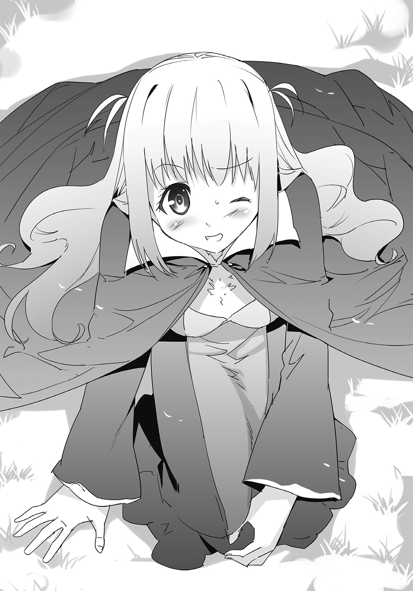
ガーネットは朱に染まった頰を搔きつつ、立ち上がると、何事もなかったように歩き出す。
「なんだったんだい、今の寸劇は」
「さあ......ガーネットってたまによくわからないことするからな......」
きょとんとしているココにオレは首を傾げた。
『ううむ。あざとい。あざといぜ。だが、見事だ。あそこまで堂々とすれば哀れみよりも寧ろ感動すら覚えちまう。これだ。お嬢に足りないのはこれだ』
なにやらぶつぶつと呟いていたマンゲツは、
『よし、お嬢！ そこで転ぶんだ！ できるだけ派手に！ しかし必要以上の怪我を負わないように！ そしてすかさず涙目で兄弟を見据え、か細い声で一言！ 『まずい......もう歩けないようだ。助けてはもらえないだろうか』――これだ！』
「ええ!? なぜ!?」
『考えるな！ 感じるんだ、お嬢！ これで兄弟はイチコロだ、ヒューッ！』
「わけのわからないことで疲れてるアイリスを混乱させるんじゃないよ、お前は」
マンゲツの指示に目を白黒させているアイリスを見て、オレは胸の鎧を小突いた。
「ま、まずい、もう歩けないようだ。助けては、もらえないだろうかー」
「アイリスもやらないでいい！」
本当に素直だな！
「盛り上がってるところ悪いけど、どんどん時間が過ぎていってるよ。早くしないと百年獣が目覚めるんだけど」
目を細めて非難するココに、一同は『尤もだ』と納得したかのように沈黙し、山登りを再開した。
「まったく、呑気というかなんというか。それに、注意しなければならないのは何も時間だけじゃないよ。この辺りは魔獣の巣になってるからね」
「え、そうなのか。そんな気配はないけど」
ココの話に辺りの様子を窺うが、山道が荒れているだけで、今のところ鳥の姿すら見かけていない。
「【鋼肌族】っていう魔獣でね。ちょっと特殊な性質を持っているから、ぱっと見ではわかりにくいんだよ」
「特殊な性質って？」
「擬態って知ってるかな。虫とかでもよくあるんだけどね。周囲のものに溶け込んで姿を隠してしまうんだ」
ああ。そういえば、枝みたいになるやつとか、葉っぱに隠れる蛾とかいたっけ。
「鋼肌族は主食が百年獣と同じで岩だから、この辺りを住み処にしてて、餌として人間は食べないんだけどね」
「じゃあ、別に警戒する必要はないんじゃないか？」
「いや。彼らはちょっと厄介な習性を持ってる」
「あー。そういえば聞いたことあるなあ。なんだっけ」
ライラが歩きながら思い出すように目線を上げた。
「鋼肌族は雌の数が少ないせいか、嗜好として異種族との性的交流を好む傾向にある」
「......え」
思わず立ち止まった。それは、つまり、あれか。あれなわけか。
「あの、ココ？ つまるところ、あなたが仰りたいのは......」
「人間の女性を襲って『食う』ということだよ。もちろん――本来とは、違う意味でね」
再び訪れる沈黙。
「い――いやああああああ！」
今回それを破ったのはガーネットの悲鳴だった。
「なななな、なんですか、それ！ 普通の魔獣より性質が悪いじゃないですか!?」
「だから厄介だって言っただろう。嫌な傷を負いたくなければ気をつけることだね」
「本来とは違う意味で食べるとはどういうことだ？」
一人だけ理解していない様子のアイリス。
「どうやらキミは随分と穢れのない場所で育ったようだね。いいかい。この場合、食べるとは――」
「いい。ココ。それ以上は言わないでいい」
この子の純粋さをもう少し大事にしてやってくれ。
「ど、どうすれば魔獣であると見分けることができるんですか。方法を教えてください！」
こちらに駆け寄り、必死な顔でココに頼み込むガーネット。
「えーと。どうだったかな。山になんか登る機会はないと思ったから忘れちゃったなあ」
「そそ、そんな！ 肝心なところですよ!?」
「だって興味がないからさ。ライラだったら知ってるんじゃないかい？」
ココが水を向けると、ガーネットは踵を返し、今度はライラに飛びついた。
「ライラ！ あなただけが頼りです！ 教えてください！」
「あー。うん。ええと、ちょっと待ってね。あたしもこの辺りまで来るとは思ってなかったから、うろ覚えでさ」
腕を組み、記憶の引き出しを引っ搔き回すみたいに唸っていたライラは、
「――ああ、そうだ。岩だよ。鋼肌族は岩に化けてるの。形は他と変わらないから何も知らないと見極めが大変なんだけど、一つだけ特色があってね」
「なな、なんですか早く！ 早く言ってください！ 純潔を守らなければならないんですから！」
「う、うん、確かね、色が真っ黒いんだよ。炭みたいに。だからすぐわかると思うよ」
「黒い岩ですね！ わかりました！ よし、そうとわかればそういったものが視界に入ったら即座に回避しましょう！ いいですね、皆様！」
全員へ言い含めるかのようにガーネットが述べ、オレ達はその尋常ならざる迫力にしっかりと頷かざるを得なかった。
と、そこで、
「なあ、ガーネット」
アイリスがのんびりとした声を上げた。
「黒い岩というのは、例えば、こういうもののことか？」
彼女は言って――傍にあった、二メートル以上はあろうかという、漆黒の岩石に手を触れる。
「ええ、そうです。そのようなものです。くれぐれも近づかないようにしてくださいね、アイリス。近づきさえしなければ危険はないんですから！」
「うむ、わかった！ では、今後このような岩には一切接近しないようにしよう！」
「これで安心ですね。アイリスのおかげで予めどのようなものに気をつければいいか、わかったのですから！ そう、そんな黒い岩には――」
ガーネットの声が、徐々に、尻すぼみになっていった。
......うん。オレも今、何か、とてつもなく、嫌な予感が頭を過ぎったぞ。
「あ、アイリス？ その岩......他と違いませんか？」
「うん？ ああ、そうだな。だから私もガーネットに訊いたのだが......どうしたのだ、みんな。なぜそのような顔をする」
オレを含めた全員がたじろいで一歩退き、血の気の引いた表情を見せたので、目を瞬かせるアイリス。
そんな彼女の背後で――。
岩が、膨れ上がった。
「まるで件の鋼肌族にでも出くわしたようではないか。いくらなんでもそんなすぐには現れないだろう。それとも私を驚かせようとしているのではあるまいな。侮ってもらっては困るぞ。私もそれなりに経験を積んだのだ。そう簡単にはいかないぞ！」
「アイリス。ゆっくり振り返って」
一人だけ淡々とした態度を保っているココが、アイリスの後ろを指差した。
「そうやって騙そうというのだろう。まったく！ ココまで参加するとは人が悪いぞ」
腕を組み、眉尻を吊り上げたアイリスが、
「どうせ何もないのだろう。どれ、確かめてみようじゃないか――」
と言いながら、後ろを向いた、瞬間。
「.........」
彼女は絶句した。
自分を遙かな高みより見下ろす――巨大な、影を目の当たりにして。
外見自体は、かろうじて人とわかる形を維持していた。だけどまるで小岩を適当に寄せ集めて瞬間接着剤でくっつけたように歪な姿は、ひたすらに異常さを浮き彫りにしていて、自然と対峙した者に恐怖を喚起させる。
目だと思われる部分には切れ目が入っていて、奥の方に赤い、血のような瞳だけが爛々と輝いていた。ぽっかりと空いた穴のような口からは時折、荒い息が漏れ、それがアイリスの前髪を吹き上げる。
「あ............ああ......ああ......」
あまりに突然のことすぎて、アイリスは通常の思考を失い、固まってしまっていた。
鋼肌族はそんな彼女を見つめ、口元をわずかに歪めた。表情はほとんど変わらないというのに、オレは、それだけで相手が何を考えているのかを悟る。
――いい獲物を見つけた。
「ブルオオオオオオオオオオオオオオオオオオオオオオオ！」
風が谷間を通り抜けるような音を鳴らしながら、鋼肌族が丸太のような腕を伸ばし、アイリスを摑む。
『お嬢ッ！』
マンゲツが焦燥の声を上げると同時、オレはココを下ろすと飛び出し、リベリオンを引き抜いていた。
「やめろ！ 放せ！ くっ――【炎よ。我が意に沿いて、汝が身より灼熱を吐け】！」
アイリスの口から【魔導言語】が紡がれ、空気中に集約する炎が鋼肌族を焼く。
が――相手は体をひと振りするだけでそれを完全に消し飛ばしてしまい、彼女を己の懐にかき抱いた。
アイリスが抵抗し、拘束から逃れようとするも、無駄に終わる。
やがて鋼肌族の指先が、アイリスの服の襟へとかかり、少しずつ破こうとした。
「――喰らええええっ！」
刹那、オレは頭上高く掲げたリベリオンの刃を、思いきり相手へ叩きつける。
がいんっ、という鈍い音がして、オレの手に痺れが走った。
「くっ......硬い！」
さすが岩に擬態していただけあって、尋常じゃない肌の強度だ。剣がまるで通らない。
鋼肌族は何の痛痒も感じていないようだったが、邪魔が入ったことに苛立ったのか、オレの方へと視線を向けてきた。
次いで、虫でも追い払うようにして、空いた手を振り払ってくる。
『このボケ......ッ！』
素早くマンゲツが防御壁を張った。鋼肌族の拳は火花のようなものが散ると共に弾かれ、攻撃が無効化される。
「リベリオンッ！」
名を叫ぶと同時に、得物の剣身が輝きを帯びた。オレの魔力を吸収し、物理的な力へと変換させた証だ。
オレは腰を捻ると同時に振り被り、武器を思いきり鋼肌族の横腹に向けて叩きつけた。
鈍い音が響き、体の一部が砕け散る。巨体が咆哮を上げてよろめき、アイリスを手放した。
「リョウマ様、アイリスを！ わたくしが牽制します！」
ガーネットがオレの前に出ると同時、既に詠唱を終えていた魔法を解き放つ。
膨大な水流が鋼肌族を勢いのままに押し、転ばせた。
オレは地上へ落下する寸前のアイリスを抱き止めると、後ろへ跳躍して距離を取る。
「この――すけべ魔獣っ！」
入れ替わるようにして傍を通り抜けたライラが背中に負っていたハンマーを抜くと、全身から絞り出される膂力で、鋼肌族に文字通りの鉄槌を下した。
くぐもった声が上がり、鋼肌族は半歩、足を下がらせる。
が――。
「へっ......!?」
ライラが驚いたような顔のまま、その身を躍らせた。
いや――すぐに体勢を戻した鋼肌族の分厚い掌が彼女を摑み、持ち上げたのだ。
「うわっ、ちょ、噓でしょ!?」
ライラの攻撃が効かないなんて、どれだけ防御力があるんだよ......！
「ブルオオオオオオオオオオオオオオオオオオ！」
喜びの雄叫びを上げ、鋼肌族は指先をライラの衣服にかける。
――瞬間、鋭い音と共に、彼女の身に纏っていたものを上から引き裂いた。
焼けた肌と、豊満な胸が惜しげもなくさらされて、オレは思わず硬直する。
「うわー！ こら、やめろ！ 近寄るなー！」
ハンマーを振り回すライラだったが、不自由な体勢ではさすがに動きに制限が出た。
というか、ライラ、あの、そうやって暴れると、一緒にお前の持ってるものまで大胆に揺れるんだが......いや、そんなところ見てる場合じゃないだろ、オレ！
「【空よ、鋭き刃となって斬り裂け、嵐の如く】！」
ガーネットがライラを助けるために強烈な疾風を呼び起こし、衝撃波で鋼肌族を吹き飛ばそうとした。
「ブルオオオオオオオオオオオオオオオオ！」
しかし、鋼肌族が身を反らしてから吐き出した大量の息が、それを相殺してしまう。
「まずい......！」
ガーネットが自分の失態を悟った時にはもう遅かった。
鋼肌族は空いた手でガーネットを拘束すると、器用にライラを摑んだ方の指先で、同じく彼女の衣服を大胆に破いたのだ。
ライラに負けないくらい成長した双丘と、その下までもが白昼にさらされてしまう。
「いやあっ！ 汚らわしい！ やめなさい！ わ、わたくしの身はリョウマ様のものですよ!?」
睨みつけるガーネットに対して、鋼肌族は目を細めて、口元を三日月のように変えた。いやらしく笑っているように見える。
『兄弟！ やばいぜ、このままじゃお嬢まであんな野郎の餌食になっちまう！』
「わ、わかってるよ。わかってるけどさ」
ああ、もう、目のやり場に困る！
「た、助けてください、リョウマ様！ このままではあなたの返事を聞く前に、わたくしの身が......！」
「え、なにそれ!? 返事ってなに!? リョウマとなにかあったの!?」
ライラが思わぬところで食いついた。
「そ、それは、その、言えません！ だけど、わたくしにとっても、リョウマ様にとっても、何よりも大切なことです！」
「聞いてない！ ちょっと、リョウマ、どういうことなの？ 教えて！」
「ダメです！ 教えてはいけませんよ、リョウマ様！ 絶対に、絶対にダメです！」
「どうして!? あたしとリョウマとの間にあったことは、ガーネットに教えたのにー！」
「そ、それとこれとは話が別です！」
「ずるいよー！ ガーネットずるいよー！ 教えてー！」
「だーめーでーすー！」
「二人とも、状況を見て言い争ってもらえるかな!?」
今結構危ないことになってるんだけども！
「リョウマ、私が魔法を使ってあいつの体勢を崩す。その間にリベリオンの力を使って止めをさしてほしい」
アイリスが言って魔導言語を唱え始めた。もちろん、異論なんてあるわけない。オレは頷いて、再び魔力をリベリオンへと注ぎ込もうとした。
が、
「リョウマ、アイリス、そこをどいて」
背後から声をかけられて、振り返ると――。
凄まじい速度で、ココが接近してくるところだった。
「お、おい!?」
声をかけるが、それが届くよりも先にココは一陣の風のように傍を駆け抜ける。鋼肌族が彼女の姿を見つけ、ガーネットを手放すと、捕まえようとした。
が――ココはそれを軽やかに回避すると、鋼肌族の死角へと回り込み、腰の辺りから何かを抜き払った。
「【起動せよ】」
ココが魔導言語らしき言葉を呟いた直後――。
聞いたこともない音が、轟いた。
同時、鋼肌族の体が爆発し、煙を上げる。
突然の事態に状況を把握しきれないのか、鋼肌族は足をもつれさせて転んだ。
ライラが隙をついて鋼肌族の手から無理矢理に抜け出し、こちらへ駆け寄る。
その間にもココは残像を刻むほどの勢いで鋼肌族の周囲を移動し、先程と同じ現象を起こし続けた。
鋼肌族の頑強な肌がいとも容易く次々と弾け飛び、瓦礫を飛ばす。
見る見るうちにぽっかりとした穴が空くと、ココは接近し、高々と跳躍した。
彼女は懐から何かを取り出すと、相手に向かって投擲する。
まるで吸い込まれるようにして、鋼肌族の体に穿たれた闇へとそれが落ちると、
「みんな、ここから離れて！ できるだけ遠くへ！」
ココはいつになく緊迫した声で指示を出した。意味はわからないが従った方がよさそうだとオレ達は頷き合い、急いで距離を取る。
ココもまた、鋼肌族の頭辺りに着地すると、急ぎこちらに向かってきた。
そして――。
辺りを光が覆い尽くした。
鼓膜をつんざくような音が鳴り渡り、オレは思わず耳を押さえる。
巨大な爆発。
さながら、ダイナマイトにでも火が点いたかのような現象が起こった。
それはすぐに途切れ、場には元のような静寂が戻る。
あとには何も残されていなかった。
先程まで存在していた鋼肌族の姿は、どこにも見当たらない。
完全に、消えてしまっていた。
「な、なにが起こったんだ......？」
呆然と立ち尽くすオレに、ココが言った。
「試作用に作った武器を幾つか持ってきてよかったよ。思わぬ形で役に立った」
彼女が見せてくれたのは、持ち手のついた金属的な光沢のある筒状の何かと、ジュースの缶みたいな物体だ。
「これは【魔導砲】っていってね。戦争なんかで使われる大砲をもっと小型化できないかと思って製作したものなんだ。原理はリベリオンと似ていて、魔力を物理的な力に変換して遠く離れた対象を攻撃する。で、こっちは【魔導筒】っていって、留め金を外すと滞留していた魔力が注ぎ込まれ、時間差で魔導砲のような爆発を引き起こす。尤も、こちらの方が威力は段違いだけどね。で、こっちが――」
と、自分の靴を見せるココ。踵の部分に鉄板のようなものが仕込まれていた。
「魔力を推進力に変換させて放出し、爆発的な起動力を生み出す代物。名前はまだつけてない」
「......とんでもないもの作ったんだな、お前」
まさしく、拳銃に爆弾じゃないか。おまけにジェット機能付きの靴まで。
「創族は戦族よりはマシだけど、人族よりは魔力が低くてね。どうにか補塡できないかと考えた結果さ」
なんでもないことのように言って、ココは肩を竦めた。
「なんでさっきその靴を使わなかったの？ そしたら山登りも楽だったのに」
ライラがどこか不満そうに尋ねる。いいところを取られて気に入らないのかもしれなかった。
「生憎とこれが使えるのは、今のところ一分少々が限界なんだ。一度使えば魔力を補充するためにしばらくは休ませておかなきゃならない」
そう答えたあとでココはオレの方を見上げ、ほんの少し、口元を緩めた。
「じゃ、そういうわけで、気を取り直して行こうか。まだ体力は回復していないから――頼んだよ？ リョウマ」
幸いなことに持ってきた荷物に着替えがあったので、ガーネットとライラが裸のまま歩き回るということはなかった。
思わぬトラブルはあったものの、それからは特にどうということもなく、オレ達は無事に目的地のすぐ傍まで辿り着いた。
そこでちょうど、日も暮れ始めたために、今日のところは野営をすることにする。
「この辺りには食べられる獣もいないと思うし、今晩は持ってる食材だけで料理するしかないね」
近くにある小さな洞穴の傍まで移動し、火を熾したところで、ライラが言った。
「ああ。干し肉はまだあったよな。で、ここへ来る前に買った野菜もまだ幾つか残ってる、と......」
オレは自分のリュックをまさぐりながら、思案する。スープくらいなら作れそうだけど、出汁はどうするかな。モニートっていう豆を磨り潰して溶かすと、コンソメっぽい味になるから、今日はそれでいくか。
「リョウマ様、わたくしは野菜を刻みますね」
「では私はパンとチーズを切ろう」
ガーネットとアイリスがそれぞれ言って、腰からナイフを引き抜くと、食材に手を入れ始めた。
その横ではライラが鞄から干し肉を人数分取り出し、火で炙っている。
オレは鍋に皮袋から水を入れると、火にかけ、横手で大豆に似た形の実を岩の上に置き、掌で潰した。
旅に出てからというもの自然に野営についての役割分担が決まって、皆、スムーズに動いている。
「ご苦労なことだね。それじゃあ、ボクは食事ができるまでゆっくりしていようかな」
ところがココはそう言ってごろりとテントの中で横になり、目を閉じてしまった。
「あ、こら、ココ。君もなんかしなきゃダメだよ。働かざる者腹を満たせず、だよ」
ライラが格言めいたことを口にしたが、ココは片目を開けてこう返す。
「だってボクができることは何もないだろう。だったら、体力を温存させるためにこうして体を休めるのが一番さ」
「ないことないよ。ガーネットの野菜切りを手伝うとか、リョウマのスープ作りの補佐をするとか、色々あるでしょ？」
「別にボクがいなくたって回るんじゃないのかい。だったらやらなくてもいいだろう」
「みんな、働いてるのに君だけサボっていいわけないでしょ」
「生憎と料理は苦手でね。生産効率の悪いことをしたところで得るものは少ない」
「またわけのわかんないことを言って煙に巻こうとする！」
「この上なく理解しやすい内容だったと思うけど。キミの頭がついてこれないだけだろう」
「......肉と一緒に炙ってあげようか？」
「だから喧嘩するなって、お前ら」
鍋に粉状になったモニートを入れながら、オレは言った。
「だってココが自分だけ働かないから！」
「働く必要がないから働いていないことの何が問題だと？」
同時に互いを指差す二人。ココの言い分は聞きようによってはダメな感じだけど、的を射ている気がしないでもないな。
「大体、食事なんてお腹に入ればいいんだよ。料理している暇があるなら、一つでも多くの道具を生産した方がマシさ」
嘯きながらココは腰に下げていた、鋼肌族との戦いで見せてくれた【魔導砲】を取り出すと、虚空に翳し、調子を確かめるよう目を細めた。
「でもココは今、一人で暮らしているのでしょう？ 料理をしないのであれば、一体何を召し上がっているのですか？」
ガーネットが料理をする手を止めて尋ねる。
「んん。基本的には近くの店で買ってきたできあいのものだよ。仕事が忙しくなってくるとそれすらも面倒くさくてしないけどね」
「では、そういう時はどのようなものを食べているのだ？」
想像もできないというふうな顔をするアイリス。
「えーと。少し前はなんだったかな。ああ、そうだ。人参を食べたよ」
「だけか？ 茹でて？」
「いや、生で」
「生で!?」
人参を!?
思わずアイリスと一緒に驚いてしまうオレだった。
「少し硬かったけどね。意外に食えたよ。まあ、以前、作業に夢中になりすぎて三日くらい物を食べるの忘れてて気を失ったから、それに比べれば随分とマシだと思うけど」
「全然マシじゃないと思うぞ......」
最低レベルが酷すぎると思うんだが。
「とにかく！ あたし達の旅に同行してるなら、ココも何かする！ ほらほら」
ライラは言って、テントに近づくとココの腕を摑んで引っ張った。
「うわっ。やめてもらえないか。キミのそういう強引なところがボクは......ちょっと！」
抵抗も虚しく有無を言わせず引っ張り出されたココは、少し不服げではあったものの、しばらくするとアイリスと一緒にパンを切り始めた。
やがて全ての用意が終わり、ランプの灯りの傍で、オレ達は夕食をとることにする。
「鋼肌族が襲ってこないでしょうか......」
炙った干し肉とチーズ、それにハサックと呼ばれる食用の葉――見た目はレタスのような感じ――を挟んだパンを手に抱えつつ、ガーネットが辺りの様子を窺う。
「安心していいと思うよ。既に彼らの巣は抜けたから」
スープに息を吹いて冷ましながら、ココが答えた。
「ま、今のところ気配はないし、大丈夫じゃない？ というわけで、リョウマ、はい」
「うん？ どうした、ライラ」
香辛料の効いた干し肉を味わいながらオレが顔を上げると、満面の笑みを浮かべたライラがスプーンで掬ったスープをオレに差し出してくる。
「おくち、あーんして？」
「ええ!? いや、いいよ！ ってか食事のたびに毎回それやるの勘弁してくれよ！」
「だって全然させてくれないしさー。気にしないでいいってば。ほら、遠慮なく！」
「遠慮とかじゃなくて、恥ずかしいんだって！」
「もう、照れ屋さんだな、リョウマは。どうせ近い将来、毎日のようにすることになるんだから、早く慣れちゃってよ」
「ちょっと！ 聞き捨てなりませんね、ライラ！」
すかさず、といった感じでガーネットは自分の器からライラと同じようにスープを掬う。
「リョウマ様はわたくしとするようになるのですよ？ 勘違いなさっては困ります」
「えー。でもリョウマはあたしの旦那様だし」
「その話はなしになったと言ったでしょう！」
「先延ばしにしただけで、いつかはそうなるんだよ？」
「決まってません！」
「決めたの、あたしが！」
「そんなことは許しませんよ！」
「ガーネットに許されなくてもあたしが許してるの！」
「わたくしが許さなくては何も許されません！」
「勝手だよ！」
「どちらがですか！」
立ち上がると、ガーネットとライラは正面から視線をぶつけ合った。
『こらこらこらこら、お前ら。いい加減にしろ』
と、そこで珍しく、マンゲツが止めに入る。
『兄弟の妻になるのはお嬢って決まってるだろうが！』
全然止めに入ってなかった。寧ろ参戦していた。
「ふぐっ!? な、なにを言っているのだ、マンゲツ！ つつつつつつつつつ、つなど！」
幸せそうにパンと肉を楽しんでいたアイリスが、突然、顔を真っ赤にして叫んだ。慌てすぎたのか、きちんと『妻』と発声できていない。
『なんたってリョウマはガルフレアの皇帝なんだからな？ そりゃ必然的にお嬢の旦那ってことになるだろうよ』
「ちょっと、リョウマ様が皇帝をやられているのは、あくまでも帝国を救うための間だけでしょう」
「そうだよ。だから別に全然決まってないよ。勝手なことばっかり言うと塩水かけちゃうよ？ マンゲツ」
『んだコラやってみろやこの犬っころ娘。こちとらサビようがやすりで削られようが全力でお嬢のために動いたらぁ！』
「よーし、言ったな？ あとで茶色くなってリョウマやアイリスのこと守れなくなっても知らないんだから！」
「大体、マンゲツは最初、リョウマ様が皇帝になることを認めていなかったのではないのですか？ なのに掌を返したように兄弟、兄弟と......」
『うるせえな。おれは兄弟の男気に感服したんだよ。生まれは違えど死ぬ時は共にあり。これぞ男と男の友情ってやつよ！』
「都合がいいと言っているのですー！」
「そうだよ、大体マンゲツはさ。この間もリョウマの傍で寝ようとしたら大声で起こして邪魔してくるしー！」
「え、なんですか、それ。ライラ、どういうことですか聞いてませんが!?」
「あ、しまった。話しちゃった」
「ライラー！」
ああ、もう、なにがなんやら。
三人――正確には二人と一個だけど――が延々と言い争いをしているので、騒がしいどころか場が混沌としてきてる。大体、なんの話なんだ、一体。
「ガーネットもライラもマンゲツも、落ち着かないか。楽しい食事が台無しになってしまうぞ」
アイリスが諭すように言ったけど、まるで聞いてる気配がなかった。マンゲツが点のように表している目を彼女へと向ける。
『お嬢！ お嬢もお嬢だぜ。そうやっていつも消極的だから、この二人にいいようにされてるんだ。もしどっちかがその気になって強引に兄弟の童貞を奪ったらどうするつもりだ？』
「どうていとはなんだ？」
『兄弟の大事なものだ』
「なんと。ガーネットとライラがリョウマの大切なものを奪うのか？ そんなことをするはずがないだろう」
『しちまうんだよ。本気になったら男も女もケダモノなんだぜ？』
「そ、そうなのか？ ダメだぞ、二人とも。リョウマのドウテイはとても大事なものだから、奪ったりなどせず、欲しいならきちんと話し合うべきだ」
真面目にとんちんかんなことを言い出すアイリス。いや、なんか、壮絶にずれてるよな。仕方ないんだろうけど。
『そういう平和的な態度でいるからダメなんだよ、お嬢は。お嬢だってリョウマの童貞が欲しいだろ？ 奪ってみせろよ！』
「しかし奪うのはよくない。大体、私はそれがなんなのかも知らないのだ」
『それもそうか。だったらそうだ、兄弟、お嬢に見せてやれよ。お前の――童貞を！』
「見せられるか！」
なにキメ顔で言ってんだよ、お前は。
「見せられないのか、ドウテイは。一体何なのだ、ドウテイとは。教えてくれ、リョウマ。リョウマのドウテイとは一体......？」
「いや、あの、アイリス、あんまり女の子が童貞童貞って連発するのはよくないんじゃないかと思うんだけど......」
「なぜだ!?」
「それもまた答えにくい問題でな!?」
どうすればわかってくれるんだよ、この汚れのない子は！
「アイリス、そのことはひとまず置いておきましょう。今大事なのは、他にあります。誰がこれからリョウマ様の『あーん役』に収まるかです！」
「そうだよ！ そこが一番重要だから！」
力説するガーネットに続き、地面を叩いてそれに乗っかるライラ。
「いや、そんなに重要か......？」
「リョウマ様は大人しくしていてください！」「ちょっとだけ静かにしてて！」
「あ、はい」
二人からすごい迫力で怒られてしまっては、もう、どうしようもない。
「わかった。じゃあ、今日は前みたいに膝枕とかなしにしよう。純粋にこれだけで勝負だからね」
「よいでしょう。わたくしも以前のように淑女などと甘いことを言いはしません。血湧き肉躍るとはこのことです。フフ、燃えてきましたよ」
......なんかバトル物みたいな展開になってきたけど、何するつもりなんだ？
「――やれやれ。揃いも揃って元気なことだね」
その時、ココが不意に呟いて、スープを飲み干した。
「恋愛なんて非生産的なことでそこまで争えるのは、ある意味で尊敬するよ。大体、わざわざぶつかり合わなくても、もっとわかりやすい方法があるじゃないか」
彼女は口元を拭うとオレの方を見つめて、顎で指してきた。
「リョウマ。――キミは三人の中で誰が好きなんだい？」
「............え？」
思わぬ問いかけに、オレの手からスプーンが落ちる。
スプーンが岩に当たって乾いた音を鳴らすが、そんなことを気にしている暇などなかった。
「キミが自分の意志をはっきりと示せば彼女達が諍いを起こす理由はなくなる。極めて合理的な考えだと思うけど」
「い、いや、それはそうだけど......」
そんなこといきなり言われても、どうすればいいのか――ハッ!?
オレはその時、痛いほどの視線を向けられていることに気づいた。
そこにはガーネット、ライラ、アイリスの姿がある。
三人が三人とも真剣な顔で、食い入るようにしてこちらを見つめていた。
『お、兄弟。こいつはいよいよって時が来たみたいだな。遠慮せず言っちまえよ。お嬢だろ？ お嬢。間違いねえ。だってお嬢は――もががぐ』
余計なことを喋り続けるマンゲツの口（に見える部分）を、オレはとりあえず手で押さえ込んだ。
「ど、どうなのですか、リョウマ様？」
「あたしはいつでも聞く準備、できてるけど」
「わ、私は、その、は、はうう」
ガーネット、ライラに続き、顔を真っ赤にしながら、なぜかパンに食いついているアイリス。
「オ、オレは......オレの気持ちは......」
心臓が早鐘のように高く鳴り続けていた。
ま、まさか、まさかこんなところでこんな展開になるとは。
いやでも、ガーネットへの返事があるし、だからといって整理がついているかと言われればそうでもないし、じゃあライラかアイリスかって言われると、確かに二人とも可愛くてオレなんかにはもったいないくらいだけど、そう急に結論を出せって話なのかとも思うし――ああ、くそ、頭がグチャグチャになってきたぞ!?
「オ、オレは、だな......」
ええい、いつまでもぐじぐじ悩んでいる場合じゃないだろ、オレ。
根性出せよ。脳味噌ねじまげてでも答えを弾き出せ。
よし、言うぞ、言うぞ、言うからな。き、決めろ――！
「オレは......！」
「なんてね。まあ、キミもこんなところで言わされるのはなんだろう。別に口に出さなくてもいいよ」
勢いがつきすぎてスッ転ぶかと思った。
呆気にとられるオレの前で、ココはパンと干し肉を食べ終えると、砂を払いながら立ち上がった。
「明日の朝も早いし、そろそろみんな、寝た方がいいんじゃないかい？」
「え......？ え、ええ。そうですね」
拍子抜けしたような反応でガーネットが返事をすれば、ライラもまた腑に落ちないながらも、「う、うん。そうだね」と無理矢理納得したような対応をした。
「......うむ。明日が本番だからな。十分に体力を回復させるとしよう」
アイリスは、どことなく胸を撫で下ろしたような表情で残った夕飯を急いで口に詰め込んでいる。
なんとなく、緊張感が途切れたかのような感覚で、場は解散となってしまった。
......なんだったんだ、今のやりとりは。
『ちっ。上手くはぐらかされちまったか』
マンゲツが気に入らないというように呟いたが、彼とてこれ以上場を荒らすつもりはないようで、黙り込んでしまった。
「驚かせたかい？ すまなかったね」
オレの前まで来たココが、口元をわずかに上げる。
「......からかったのか？」
だとしたら趣味が悪いぞ。
「すまないね。ま、昼間にキミが無理矢理ボクを抱いたお返しだと思ってもらって構わない」
「あれはお前が辛そうだったから......」
「わかっているよ。その配慮自体には感謝している。......男性とあれくらい密着したのは初めてだったから、動揺したのが悔しくてね」
「......ん、なにか言ったか？」
最後の方、小さくてよく聞き取れなかったんだが。
「なんでも。ただね、リョウマ。ボクは別に間違ったことを言ったつもりはないよ。キミ――三人から異性としての好意を持たれていることは自覚しているんだろう？」
「うっ......ま、まあな」
さすがにここまでくると、わかってくる。
「アイリスの方は、この旅が始まってからの付き合いだから、わからないけど......」
「......キミも相変わらず鈍感だね。度を越していると評価しても過言じゃない」
『そこに関しては同意するぜ、ちびっ子』
うるさい、放っとけ、マンゲツ。
「ま、別にキミの問題だからどうしようが構いはしないが――いつまでもはっきりしないままっていうのは、あんまりよくないんじゃないのかい？」
「あ、ああ、そうだな。にしても、お前からそういう注意を受けるとは......」
どうにも驚いた。
「ボクは合理主義者であって別に冷血ってわけじゃない。リョウマは三年前の知り合いなんだから、それくらいするさ」
皮肉っぽい調子で述べてから、ココは後ろで洞穴へと戻っていく三人を振り返る。
「ま、何にせよいつかは選択する時が来るんじゃないかい。それなりに、心を決めておいた方がいいと思うけどね」
何気なく放たれた声が、オレの胸に深く突き刺さってきた。
「......心に刻んでおくよ。ありがとな」
「お気になさらず」
オレが返した言葉に、ココはいつものように肩を竦めた。
「うわ......これは、すごいな」
ようやく山頂付近へと辿り着いたオレ達を出迎えたのは、想像を遙かに超えた姿だった。
全長、数百メートルはゆうにあるだろうか。まるで、岩山の上にまた岩山が乗っているかのようだ。
全身は硬く尖った鱗に包まれていて、昨日遭遇した鋼肌族よりもっと岩石っぽい体表は、あらかじめココより説明を受けていなければ、魔獣と見抜けなかっただろう。
これが百年獣――改めて、圧倒される存在だ。しかし、
「本当に生きてるのか、これ......？」
まるで微動だにしないその姿を前にして、オレはつい、疑念を持ってしまった。
こう大きくては頭がどこにあるのかも把握できないし、どうやら手や足は体と同化してしまっているようだ。
「手を触れてごらん」
ココに言われて、百年獣の肌にそっと掌をつけてみる。
すると、見た目通りのざらざらとした硬い感触が伝わり、これがどうしたのかと思ったものの。
「......あ」
ほんのわずかにではあるが、指先が感じ取った。
「これは......動いているな」
アイリスもまたオレと同じようにして、感想を漏らす。
そうだ。ともすれば見逃してしまいそうなほどのものだけど――小刻みに、体が脈打っている。相手が命を持つものであることの証だった。
「ふうん。本当に眠ってるんだね。起きないの？」
ライラが物珍しそうに眺めながら言う。
「明日までは絶対に。蹴ろうが叩こうが目を覚まさないよ」
「まあ。まるでライラのようですね」
くすくすと笑みを零すガーネット。
「え、なんで？ あたし、いつも自分で起きてるよ？」
「そうですが、逆を言えばそれ以前はどれほど声をかけても眠り続けていますよ？」
「だな。あと、寝相が悪くてたまに頭蹴られる」
「私など上に乗られて胸に押し潰されそうになったぞ」
オレが言えば、アイリスもまた小さく頰を膨らませた。
「な、なに。そんなんだったら、みんな、言ってくれればいいのに」
ライラがややたじろいだような姿勢を取る。いやまあ、言っても治らないだろうなと思ってさ。
「で、その、ライラみたいな百年獣だけど――」
「こら！ さりげなくあたしと同列に扱うな！」
「件の虹光石はこの中にあってね。もうそろそろできあがる頃だと思う」
思いっきりライラの叫びを無視するココ。
「ですがどのようにして手に入れるのでしょう。何か方法があるのですか？」
ガーネットが訊くのにココは頷き、体に沿って前の方へと歩き始めた。
「虹光石っていうのは武器や防具を作るにはこの上なく最適なものでね。古くより創族は百年経つごとに国のどこかにいる百年獣を見つけては採取してきた」
しばらく進むと、彼女はある地点で止まる。
「つまり採掘方法は昔から伝授されてきたってこと。......この辺りかな」
しゃがみこんでから、岩肌を手の甲で叩き、ココは耳を澄ませた。
「ところで、ココ、貴重な鉱石を勝手にオレ達が使っても大丈夫なのか？」
何かあとで揉め事とか起こらないといいけど。
「ああ、それは平気。何しろ虹光石は採取するのに手間がかかるからね。何か特別なものを作る時にしか用いられないんだ。今回は誰も狙ってないから問題ないと思うよ」
「ですがこれから必要になるかもしれませんし......」
懐に手を入れていたココは、心配するガーネットをちらりと見て、
「残念だけど虹光石が採れるのは今日だけ。明日になれば胃液によって溶けてなくなってしまうんだ。なので、心配は無用。理解できたかな？」
そういうことか。にしても、かなりのラッキーだったな............何かの都合やタイミングで首都への来訪が遅れていたら、リベリオンを強化できなかったかもしれない。
「よし。じゃあ、離れて。ちょっと派手にいくよ」
手を伸ばし、何かを百年獣の岩肌の奥へと置くと、ココはオレ達に指示を飛ばしてきた。
何をするのかはわからないが、避難していた方がよさそうだ。
オレ達が下がり、遠巻きに眺めていると、ココもまたこちらに走ってくる。
そして、
「――【点火】！」
百年獣の方を振り返りざま、彼女が大きな声を上げた瞬間。
閃光と共に轟音が響き渡った。
「うわっ!?」
いきなりのことで驚いて身が竦む。
ばらばらと瓦礫が天から降り注ぎ、地面を強く叩いた。
百年獣の体から、濛々とした煙が噴き上がっている。
「よし......これでいいかな」
ココが満足そうに頷いて、近づいていった。オレはアイリス達と目を合わせつつ、彼女についていく。
すると、
「まあ......これは」
ガーネットが口に手を当てると、ライラも「ふえー」と奇妙な声を漏らした。
百年獣の体に、巨大な闇が覗いている。
まるで洞窟の入り口であるかのようなそれは、ココが【魔導筒】によって強制的に造り上げた、巨大な魔獣の身中へと入り込むための穴だった。
「いいのか？ このような真似をして。いくら目が覚めないといっても、起きた時に痛がるのではないか？」
気遣うように、アイリスがココに問う。魔獣といえど何もしていないわけなんだから、少し申し訳なく思っているのかもしれなかった。
「百年獣の体には一カ所だけ脆くて感覚が鈍くなっているところがあってね。そこを破壊すれば、痛みを感じないんだよ。それに放っておけば体のどの部分でも二日か三日で再生するから、ずっとこのままってわけでもない」
ふうん。なんていうか、随分と大味な体の構造をしているんだな。
「さて、これを通れば魔獣の腹の中だ。準備はいいかい？」
ぽっかりと空いた穴を前にして、ココがオレ達の方を振り返った。
「――それじゃ、虹光石を目指して探索を始めようじゃないか」
オレが頷くと、アイリス、ガーネット、ライラの順で続く。
魔獣の体内を探索するなんて考えもしていなかったけど......ここまできたら、行くしかないか。
腹を決めると、オレは、百年獣の体内へと侵入した。
照明がないから中は真っ暗だと思っていたけど、実際には仄かに明るかった。
空間は円筒状になっていて、周囲の壁は奇妙な桃色をしている。手で押してみるとゆっくりと沈みこんでいった。ぬめるような触感が気持ち悪い。自分のいるところが洞窟じゃなくて生き物の中だということをいやでも自覚させられた。
よくよく見てみると、この明るさは、壁――というより粘膜か――から発せられているものらしい。淡いオレンジの光が全体から灯っていた。
「明苔だね。食べ物と一緒にのみ込んだものが根づいたんだろう」
ココが自分の見解を示す。明苔とは長い時間をかけて熱を溜め込むことにより、暗闇で発光するようになる植物のことだ。見た目はオレの世界にあるヒカリゴケにちょっと似ている。
「それでわたくし達はどこへ向かえばいいのです？」
ガーネットが首を傾げると、ココが肩に提げた鞄から大きな羊皮紙を取り出した。広げると、歪曲した大きな物体の中に通路のようなものが描かれている。
「これ、百年獣の体内図ね。個体によってそう差はないはずだから、ボク達が侵入したこいつもこんな感じになってると思ってくれていい」
へえ。なんだか、子どもの頃に読んだ怪獣の解剖図鑑を思い出すな。
「で、ボク達がいるのはここ」
ココが指差したのは頭だと思われる場所から、少し右に寄ったところだ。
「人間でいう喉だね。のみ込んだものはここを通り、胃へと辿り着く」
「虹光石があるのはどこなのだ？」
「胃だよ。ただしちょっとこの百年獣というのは面倒なところがあって―――」
と、アイリスに答えながらココは続けた。
「小胃と呼ばれる規模の小さな胃袋が幾つもあって、それらを通らないと大胃......説明しなくてもわかるよね。奥の方にある大きな胃袋に辿り着けないんだ」
「なんでそんな造りになってるの？」
ライラが頭上を仰ぎながら言う。どことなく表情が楽しげに見えるのは、未知の場所を冒険することに好奇心が抑えられないからかもしれなかった。
「百年獣はとにかく何でものみ込んでしまうから、それらを確実に溶かすため、胃が一つじゃ足りないんだよ。そうやって少しずつ食べたものを消化していくというわけだ」
「ほう。では一度に大量に色々なものを食べられるというわけだな」
アイリスが何やらうらやましそうな響きを乗せた口調で言った。さすが旅の仲間きっての食いしん坊キャラ。ぶれない。
「ん、わかった。じゃあ、オレ達は大胃を目指して進めばいいわけだな」
「そう。ただね、リョウマ。厄介なことにこの小胃というやつだけは個体によってそれぞれ位置が変わっていてね。おまけにそれぞれ別々の場所に存在しているから、どこを通れば大胃につけるかわからないんだよ。中には行き止まりになっているところもある」
「......うん？ つまり、確実に大胃へと繫がる小胃の道を選んでいかなきゃいけないってことなのか」
「ご明察」
褒められたのはいいけど、ちょっと面倒だな、それは。迷路みたいになってるわけか。
「ま、ともあれ進もう。一つ目の小胃は向こうだ」
ココは後ろの方を指差すと、地図をしまって歩き始めた。
『にしても気味の悪いところだな。薄暗いしじめじめしてるしぐにゃぐにゃしてて、あんまり長居はしたくねえぞ。なんの因果でこんなところにいなきゃいけないんだか』
マンゲツが、口にあたる模様の部分をへの字に曲げて愚痴を垂れ零す。
「文句言うなよ。お前はオレの体にくっついてるからいいけど、こっちは直接歩いてるんだからな。それでも我慢してるんだぞ」
『そうは言うがよ、兄弟。ここまでしてリベリオンの強化をする必要なんて、ないんじゃねえのか？ 兄弟にはなんたっておれがいるんだからよ』
「ですがマンゲツは敵を攻撃できないでしょう？」
「防御は最大の攻撃なりって言葉知らねえのか？ ガーネット」
マンゲツが反論するが、それを言うなら逆だと思う。
「でも、どうする？ マンゲツ。リベリオンが今より強くなって、防御壁まで使えるようになったら。リョウマにいらないって言われちゃうかもよ」
ライラがからかうようにマンゲツをつついた。
『なっ――ん、んなことあるわけねえだろ。どこの世界に攻撃も防御もできる剣なんてあるんだよ。そんな夢のような話、あるわけねえだろ』
「わからないよー。リベリオンはなんたって四大聖国が総力を結集して作り上げたものだからね。それくらいわけないかも」
にやにやしながらライラがマンゲツの不安を煽れば、
「......ふむ。剣と盾を兼ね備えた武器か。面白いね。一考に値する」
ココまで乗ってきたために、鎧の紋様が怒ったように歪んだ。
『てめえらっ！ たとえそうだとしても兄弟がおれを捨てるなんてことあるわけねえだろ！ こちとら兄弟とは血の陶杯を交わし合った仲だぜ!?』
「なんだよそれ。そんな恐ろしいモン交わした覚えはないよ」
ねつ造をするな、ねつ造を。
『きょ......兄弟、なあ、そうだよな？ リベリオンがどうなろうとおれを捨てたりはしねえよな？』
上目遣いで見てくるマンゲツ。先程の台詞とは裏腹に割と必死だった。
「うーん。そうだなあ」
オレは腕を組んで思案してから答える。
「まあ、時と場合による」
『兄弟いいいいいいいいいいいいいっ！ 帰る！ おれ、もう帰る！ リベリオンの強化なんていらねええええええ！』
突然叫び声を上げると、マンゲツは必死にオレの体を締めつけ始めた。
「いだだだだだだ！ こら、やめろ！ おい！」
『いやだああああああ！ お嬢と一緒にいられないならおれは帝国に帰るうううう！』
「お、おい、マンゲツ！ やめろ！ リョウマのあばらが折れてしまったらどうする！」
アイリスがおろおろとしながら止めようとするも、マンゲツは一向に言うことを聞こうとしなかった。
『お嬢、だってよ、兄弟が、兄弟がああああ！』
「リョウマの冗談に決まっているだろう！ 彼が本当にお前を見放すと思うか!?」
『............』
「そこで沈黙するなよ兄弟！」
血の陶杯の絆はどうした。
「ああ、もう、噓だって、噓！ お前はアイリスから預かった大事な相棒なんだから、そんなことするわけないだろ!?」
あまりの痛さに耐えかねてオレが言うと、マンゲツはようやく荒っぽい拘束を解いてくれた。が、恨みがましい眼差しを向けてくる。
『ならいいけどよ......頼むぜ？ 兄弟。お前とお嬢を守るのがおれの使命だと思ってるんだからよ』
「あ、ああ。わかってる。ごめんな、ちょっと悪ふざけがすぎた」
うう、横腹が痛い。滅多なこと口にするもんじゃないな。反省。
「だけどさ、実際、リベリオンが強くなるとどうなるわけ？ ココ」
ライラが問いかけると、先を進んでいたココは前を向いたままで返してきた。
「うーん。そうだね。リベリオンの本質というのはつまり、魔力を物理的な波動に変換して放出するところにあるんだよ。他にも能力はあるけどあくまでもそこから派生したもの。だからそこを伸ばしたものになるかな。ま、具体的にどうなるかは、お楽しみってことで」
「剣自体が巨大化したりするのか？」
なんとなくのイメージでしかないけどさ。
「そんな扱い方が難しくなるようなことにはならない。......けど近いかな。今伝えることがあるとすれば、大きな力は使い手へそれなりに負担を強いるということ。ま、その辺りは覚悟しておいてほしい」
なんだか不穏な物言いだ。まさかマンゲツみたいに意思を持ち始めるんじゃなかろうな。今だって割と扱いに困るところがあるのに、更に増えるとなると頭痛の種になるぞ。
『兄弟、今、なにか失礼なこと考えなかったか？』
「いいや、全然」
妙に勘だけは鋭い奴。
「と......ここが第一の小胃だね」
喉の道を抜けたところでぽっかりと開けた空間に出ると、ココが立ち止まって呟いた。
小、とはいうけど、オレ達人間からすればそれでもかなり大きい。
アパートの一室か二室は丸ごと入ってしまうのではないかと思うほどで、先程まで通ってきたところと違って楕円形になっている。
辺りには枯れた木や石ころ、土などがわずかに残っていた。食べカスらしい。百年経ってもまだあるというのは、ちょっとすごい。
「ほう。ここがそうなのか。ひどく殺風景なのだな」
アイリスが物珍しそうに辺りをきょろきょろと見回す。
「まあ、そりゃ、胃だからな......」
飾りつけられていても困る。
「あ。気をつけた方がいいと思う」
「なにがだ？」
ココが声をかけて、アイリスが振り返った。
「この辺、奥へ押しやられなかった分の魔獣とか人間の死体とかその他よくわからないものとか転がってるから」
「......え」
アイリスが硬直し、数秒ほど経ってから、恐る恐る足を上げる。そして、
「ひ、ひやあああああああああああ！ リョウマあああああああ！」
突然こちらに向かってダッシュすると、しがみついてきた。
「かかか、硬い物が！ さっき硬い物踏んで足をどけたら！ かかかかかかかかか、かた、硬くて白くてなんだか見たこともないものがっ！」
「わ、わかった、わかったから落ち着け。な、よーし、よしよし」
子どもを宥めるように頭を撫でると、アイリスは「あうあうあうあう」と解析不能なことを繰り返したが、しばらくすると、ようやく落ち着いてくれた。
「まあまあ。よかったじゃないか。何にしろ百年経ってるから、腐敗は通り越してるよ」
「慰めにもなってないって」
ココに突っ込みつつ、オレは、アイリスに何を見たのかを尋ねようか迷った。いや、やめておこう。ろくな結果になりそうにない。
「ねえ、なんか出口が二つあるよ？」
その時、ライラが前方を指差した。見てみると、確かに先の方で壁に空いた穴が上下に二つ並んでいる。
「もしかしてココ、小胃の場所が複数あるというのは、このことですか？」
ガーネットが尋ねると、ココは頷いた。
「ああ、うん。これだ。さて、どっちに行くべきかな」
「上じゃない？」
ライラがあっさりと結論を出す。
「一応訊いておくけど、どうしてそう思ったのかな？」
「やだなー。決まってるじゃない、そんなこと。――勘」
「論外」
一言で切って捨てると、ココは顎に手を当てて考えに耽った。
「なにさー。そうやって賢ぶって人のことバカにして。どうせどっちかわからないんだから、適当に進めばいいじゃない」
ライラが不満げに口を尖らせる。
「考慮に考慮を重ねた結果選ぶのならまだしも、キミのように直感などという根拠のない短絡的な思考で進むべき道を決めるのは、愚の骨頂としか言いようがないよ」
「考えて進もうが正解とは限らないんだから、同じようなもんでしょ！ ココみたいに悩む方が時間の無駄だよ。無駄は嫌いなんじゃなかったっけ？」
「慎重だと言ってほしい」
「同じことだよ！」
「違う」
「同じ！」
「違う！」
また喧嘩してる。あの二人、仲が良いんだか悪いんだか。
――と。
「......ん？ ガーネット、なにか言ったか？」
オレは振り返って尋ねたが、言い争っている二人を苦笑気味に見ていたガーネットは不思議そうな顔を向けてきた。
「いいえ？ 何も言ってはいませんが」
「そうか？ おかしいな。さっきなにか聞こえた気がしたんだけど――」
言いかけて、オレは口をつぐんだ。......やっぱりだ。さっき、耳が何かを捉えた。
きちり、という、硬い物がぶつかるような音を。
『兄弟。気のせいじゃないぜ。何かいやがる』
「ああ。オレもそう思う。アイリス、気をつけろ」
「うむ。しかし、私の方からは何も見えないが......」
怪訝な顔で周囲を窺うアイリス。
「だから、言ってるでしょ！ 食事の時に美味しいものから先に食べるのは、いつ何が起こるかわからないことへ備えてるの。だからあたしの意見が正しいの！」
「馬鹿馬鹿しい。食事の順番なんてどうでもいいじゃないか。目についたものから口に入れる。それでいいんだよ」
「ココの食べ方は面白くないんだよ！」
「食事方法に面白いもなにもないよ」
「あるの！」
「ない！」
「おい、二人とも。ちょっと。そんなことしてる場合じゃないぞ」
っていうかどういう流れでそうなったんだ。
「あるったらあるったらあるのー！」
「ない。絶対にない。ありえない」
ダメだ。全然通じてない。こうなると止めようがないんだよなぁ。
「あのなー。状況を見てくれよ。二人がそんなことしている間に、もし妙なことでも起こったらどうするんだよ！」
オレが咎めるために少しだけ声を荒らげた瞬間だった。
鈍い音を立てて、ココとライラの傍で何かが転がる。
それ自体は単なる石ころだった。しかし、オレは視線を傾けて――確かに目撃する。
真っ白い何かが、二人に飛びかかっていくのを。
「ココ！ ライラ！」
オレはリベリオンを引き抜くと同時に疾走した。驚いている二人と謎の何かとの間に滑り込むと、剣を薙ぎ払った。
乾いた音が雑音のない世界に響き渡る。
吹き飛んだ白い何かは、しかし、着地と共にすぐに起き上がった。
はじめに目を奪われたのは、その、不気味な面相だ。
複眼が三つ。口に相当する部分は左右に大きく開き、ぎちぎちとした細かな牙のようなものが生え揃っていた。
胴体は長く、正方形を繫ぎ合わせたような奇妙な形をしていて、二本の細長い腕と、左右にびっしりと小さな足が並んでいる。
まるでバッタとムカデを合わせたような、不気味でおぞましい化け物だった。
「なんだこいつ......！ 魔獣か!?」
「わからない。見たことないよ！」
素早くハンマーを構えたライラが跳躍すると、鉄槌を叩きつける。
だがそれを事前に察知したのか、化け物はさっと避けてこちらと距離を取った。
「ギイイイイイイイイイイイイイイイイ！」
ガラスを爪で引っ搔いたような音が鳴る。どうやら鳴き声のようだった。
直後、化け物は身を反らし、体勢を戻すと同時に口から何かを吐き出す。
嫌な予感を覚え、オレは転がって避けた。
先程まで自分がいた場所に、液体のようなものが降り注ぐ。
そして、溶けた。
まるで硫酸でもぶっかけたように胃の一部に穴が空き、鼻をつく匂いが辺りに漂う。
「これ、喰らったら火傷どころじゃ済まないぞ......」
想像するだに、ぞっとする。
化け物は全身をぎちぎちと鳴らしながら、左右に揺れ動き、いつでも襲いかかれるといわんばかりに嘶いた。
「リョウマ、伏せて！」
背後から聞こえたココの声に、オレは即座に従った。
すると頭上を何かが通り抜けていき、間もなく前方で苦悶の声が上げる。
体を起こすと、殺虫剤をかけられた虫みたいにのた打ち回る化け物の姿があった。頭蓋から煙を上げているところを見ると、ココの魔導砲で撃たれたらしい。
「よし、今だ！」
オレは突進した。化け物が体勢を立て直す前に片をつけようと、剣を振り上げる。
が、一歩遅かった。刃は節くれだった細い手に摑まれて止められてしまう。
とはいえ――そんなもの、どうでもいいことだ。オレが止めを刺せるなんて、端から思っちゃいない。
「――ライラ！」
「了解っ！」
後ろに控えていたライラが疾走し、横手から振り上げたハンマーを――叩きつける。
勢いよく体が飛んでいき、壁へと激突。不愉快な音を立てて潰れると、ずるずると落ちていった。
数分ほど警戒していたが、復活する様子はない。完全に息の根を止めたようだった。
「......やれやれ。なんだったんだ、あいつは」
オレはみんなと共に化け物のいるところへと向かい、見下ろす。
ライラの鉄槌をまともに受けたためか体はばらばらに砕けていて、紫色の体液が飛び散っていた。正直、直視したいものでもないけど、四の五の言ってはいられない。
「これは......魔獣は魔獣だけど、普通のものじゃないね」
跪き、化け物のことを調べていたココが言った。
「恐らくは百年獣にのみ込まれた魔物の一部が、何らかの要因によって長い年月をかけて、独自の生態系を築いたものだと思う。ここを住み処と定めて、侵入してきた外敵を駆逐してるんだ」
「寄生虫みたいなものだって思ってもいいのか？」
「そんなにズレてはいないね」
オレに返しながら、ココは立ち上がる。
「つまり先ほどはわたくし達を敵と定めて襲ってきたということですか」
ガーネットが顔を曇らせた。
「多分ね。問題は、これ一匹なのかってことだけど......」
「このような生き物が、まだいるのか？ どの程度だ？」
アイリスが質問したものの、ココは肩を竦めるだけだ。
「さすがにそこまでは。まあ、しばらくは出てこないんじゃないかと――」
言いながら、ココは腰に手を伸ばした。魔導砲を抜くとアイリスの背後に向けて構える。
「ごめん、訂正する！」
発砲。先程聞いた不愉快な鳴き声が聞こえてきた。
急ぎ振り返ると、アイリスの後ろに先程倒したはずの魔獣が上から降りたっているところだった。
「もう一匹いたのか！」
急いでオレは立ち向かおうとするも、ココの与えたダメージは少なかったようで、相手の動きの方が速い。蛇のような動きを見せながら、アイリスへと襲いかかった。
「くっ！ 【雷撃よ槍と化して我を害する――】」
アイリスが魔法の詠唱をするも、間に合わない。駄目だ。このまま攻撃している暇はない。
オレは咄嗟に飛び出していた。アイリスを庇って、その場に倒れる。
「ギイイイイイイイイイイイイッ！」
刹那――肩の辺りに熱い感触が迸った。同時に脳裏を焦がすような痛みが走る。
「ぐ......っ！」
歯を食いしばり、どうにか絶叫は耐えた。
「リョ、リョウマ！ リョウマ、大丈夫か!? リョウマ！」
アイリスが泣きそうな顔で覗きこんでくる。オレは彼女を安心させるため強引に笑ってみせた。
「リョウマに！」「なにをするんですか、この化け物......ッ！」
ライラがハンマーで魔獣を打ちのめし、ガーネットが火の魔法を放つ。
動きを封じられたあと、炎上した化け物は、炭と化して散った。
「待っていろ。今すぐに治療をする！」
アイリスが手を翳し何事かを呟くと、光がオレの体を包み込んでいく。間もなく少しずつではあるが、痛みが消えていった。
「すまない。私が油断をしていたから......！」
「......気にするな。アイリスは悪くない。無事でよかった」
手を伸ばし、頭を軽く撫でると、アイリスは涙ぐみながら何度も頷く。
『不覚だったぜ。まだいやがったとはな......おかげでおれがいながら兄弟を......！』
マンゲツが悔しそうに零した。オレは「お前のせいでもないって」と慰めながら、鎧をぽんと軽く叩く。
「無事かい？ リョウマ」
しゃがみこんで確認するココに「なんとかな」と答えると、彼女は嘆くような息を一つついた。
「まったく。三年が経っているというのに、何も変わっていないんだね、キミは。あそこでキミが飛び出してどうする？」
「でも、そうしないと、アイリスを助けられなかっただろ？」
「ガーネットでも間に合ったかもしれないし、ライラだって走り出していたから彼女に任せてもよかった。周囲をよく確認せずに動くのはキミの悪い癖だよ」
「あの場合は仕方ありませんよ。緊急だったのですから」
「そうだよ。リョウマを責めたって仕方ないじゃない」
ガーネットとライラが交互にオレを庇ってくれるが、ココは前髪をかき上げて「......あのねえ」と呆れ気味に言った。
「そうかもしれないけど、もしリョウマがもっと深い、動けなくなってしまうほどの傷を負っていたらどうするの。もし、命まで落としていたら？ リベリオンを使えるのは彼しかいない。ボク達の行動そのものが意味をなくしてしまうんだよ」
「そ、それは、そうかもしれませんが......」
押し黙るガーネットから視線を逸らして、ココはオレを見る。
「三年前にも言ったことだけど、リョウマ、キミはもっと自分の重要性を理解するべきだ。我が身を大事にして、考えなしの行動は控えること。キミにしかできないこととキミ以外でも任せられることを見極めるんだ。いいかい？」
「......うーん。言いたいことはわかるんだけどなあ」
そう器用に生きられたら苦労はしないっていうか。
『おい、ちびっ子、てめえ、兄弟の男気をたしなめるってのか？ お嬢を身を挺して守ったんだぜ？ 立派じゃねえか！ なかなかできるこっちゃねえよ！』
「その立派さが彼の行動の足かせになってるんだよ」
マンゲツの言葉に淡々と返して、ココは続けた。
「とりあえず、リョウマはもっと慎重さを心がけ、仲間の危機であっても無条件で助けたりしないこと。冷酷に思えるかもしれないけど――キミの代わりはこの世界のどこにもいないんだからね」
「......そうだな。ココの言う通りだ」
アイリスは気落ちした様子でオレの方を見つめてくる。
「リョウマは何よりも大切な存在だ。多少のことで迷惑をかけるわけにはいかないからな」
「いや、アイリス。それは違うって」
手を振り、オレは、ようやく傷が癒えた体を起こすとココに向き直った。
「なあ、ココ。お前の言うことも一理あるかもしれない。でもさ」
と、オレが自分の気持ちを吐露しようとしたところで。
不意打ちのように。
まさか、空耳であってくれ、という願いを無視して。
――ぎち、と。
また、あの音が聞こえてきた。
「......噓、ですよね」
ガーネットが青ざめた顔で振り返る。
オレも同じようにして顔を向けたところで――。
――ぎち。
確かに、目撃した。またあの化け物だ。
いや......『また』じゃない。
ぎち。ぎち。ぎち。ぎち。
ぎちぎち。ぎちぎち。ぎちぎち。ぎちぎち。
ぎちぎちぎちぎち。ぎちぎちぎちぎち。ぎちぎちぎちぎち。
ぎちぎちぎちぎちぎちぎちぎちぎちぎちぎちぎちぎちぎちぎちぎち。
何匹も何匹も何匹も何匹も。
一体どこに隠れていたのかと思うくらい、白い化け物の大群が、場を埋め尽くしていた。
「......おいおいおいおいおいおい」
冗談じゃない。何十、いや、何百はいないか!?
「ど、どうする？ 戦う？」
ライラがさすがに少し焦り気味に言った。
『そんなもん......決まってんじゃねえのか？』
マンゲツがみんなに問いを投げかける。
ああ、そうだ。決まってる。こういう時は。
「こういう時は――」
オレは、リベリオンを持ったままで、足を踏み出して。
「――逃げるぞおおおおおおおおっ！」
踵を返して、全力で駆け出した。
「いやああああああああ！ 追いかけてきますうううう！」
後ろからついてきたガーネットが絶叫する。
ぎちぎちぎちぎちぎちぎちぎちぎちぎちぎちぎち。
無数の化け物の鳴き声が不気味に木魂した。
「リョウマ、どちらだ。どちらに逃げる!?」
アイリスが尋ねてくるのに、オレは全速力で疾走しながら、
「――下！」
素早く断言した。
「リョウマ、根拠は!?」
「勘だッ！」
ココに対しても間髪入れずに答える。それしかないだろ、もう！
「どうするの、ココ。考慮に考慮を重ねて結論を出す!?」
ライラがハンマーを担いだまま、迫りくる化け物達を見ながら叫ぶ。
ココは荒く息を切らしたままで、歯を食いしばりながら目を閉じていたが、
「――やむを得ない！ 下だ！」
断腸の思いであるかのように、決断するのだった。
一体どれほど走っただろうか。
もう限界だというところまで来て、後ろから音が聞こえなくなったこともあり――。
オレ達は、ようやく足を止めた。
途端に全身の力が抜けて跪く。他のみんなも同じようで、それぞれが座り込んで息を切らしている。
「も、もう、追ってきてないのか......？」
アイリスが乱れた呼吸の中、途切れ途切れに確認してきた。
「多分。もう、あの気持ちの悪い鳴き声は、聞こえませんから」
汗を拭いながら、ガーネットが桃色の壁に背を預ける。
二、三度、行き止まりの道に入ってしまった時は、もう終わったと覚悟した。
幸い、敵が殺到してくる前に抜け出すことができたから、無事にここまで来れたんだけど。
『しかし、随分と移動したが、ここは一体どこなんだ？』
マンゲツが誰ともなく疑問を投げかけるが、答えられる人はいないようだった。
ココですら、疲れた顔のままで地図を眺めながら、眉間に皺を寄せている。
「一応、奥に向かってきたから、道としては間違ってないと思うけど......」
「じゃあ、そろそろってことか。あいつらが追ってこないうちに、出発した方がよさそうだな」
本音を言えば、もう少し休みたいところなんだけど。
「その心配はなさそうだよ」
だがその時、不意にライラがオレ達の走ってきた方向から姿を見せた。
「どういうことです？ 何かあったのですか？」
ガーネットが尋ねると、ライラは指で自分の後ろを指す。
「入口、なくなってた」
「は......？ なくなってたって、なんだそれ。どういうことだ？」
意味がわからずに訊くと、ライラが「あたしもよくわからないんだけど」と前置きをした上で、
「さっき通ってきた穴がね、塞がってた。だから敵もこっちには来れないと思う。まあ、あたし達も戻れなくなったんだけど」
「勝手に穴がなくなってしまうなど、そんなことがありえるのか？」
いささか信じられないといった様子のアイリス。オレも同感だ。
「いや......考えられない話じゃない」
するとそこで、ココが自分の見解を語り始めた。
「ひょっとすれば小胃同士を繫ぐ穴は、時間によって開いたり閉じたりしているのかもしれないよ。みんな、忘れているかもしれないけど、ここは魔獣の腹の中だ。つまり、生きた迷宮といっても差し支えない。そういうことが起こっても不思議はないんだよ」
め、滅茶苦茶だな。なにがあるか予想ができないってことじゃないか。
「でも、それ、わたくし達が入ってきたところから出られなくなったかもしれないということですよね。どうするんですか？」
ガーネットが不安な様子を見せた。
「まあ、目的の物さえ手に入れればあとは用無しだからね。無理矢理、その辺の壁に穴を空けて出ればいいさ。百年獣が起きるかもしれないから、急いで行動しなきゃならないけどね」
ココが自分の懐から魔導筒を取り出して、宙に投げる。
「何にせよ、敵がいなくなったのなら一安心だ。早いところ、大胃まで行って虹光石を手に入れよう」
オレが声をかけて立ち上がると、場にいた全員が頷いた。
重い腰を上げて、しばらく進むと、また穴がある。今度は一つだけだったので、迷う必要はなかった。
ただ、通り抜けて細い道を進み、更に抜けたところで――オレ達は再び選択を迫られることになる。
「左に一つ、右に一つか......」
同じように黒々とした樹の洞のような穴が空いていた。どちらを進めばいいのだろうか。
「ねえ、ここまできたらどっちにしても同じじゃない？ さっきまでだってなんとかなったんだしさ」
ライラが頭の後ろで手を組んで、気軽な調子で言った。
「......まあ、それもそうか」
ココが仕方なさそうに呟いたので、ライラはにやにやと笑う。
「やっとあたしの考えに賛成してくれるようになったってことだね。素直なのはいいことだよ」
「馬鹿なことを言わないでほしい。キミがさっき自分で言っただろう。今まで何とかなってきたから問題はないと。つまりこれは統計に基づいた根拠のある判断なんだ」
「はいはい。わかったわかった。ココが正しいよ」
また話が長くならないうちに、オレはココの背中を軽く叩いて進み始めた。
「リョウマ、その態度はよくないな。いかにも適当にあしらったというふうに思える。ボクの考えに問題点があるというのなら、きちんと指摘してほしい」
「別にないって。ココの意見が全面的に正しい。そうだろ？」
「ええ、その通りです。ココは偉いですね」
ガーネットが笑みを浮かべたままで、ココの頭を撫でる。
「なにか軽んじられている気がする......」
不満げな様子で零すココだったが、すぐに「まあ、今は追及するのに時間が惜しい。ここは置いておこう」と自分を納得させ、オレ達のあとをついてきた。
「じゃあ、とりあえず右に行こうか。しばらく進んで行き止まりだったら戻る。もう一回道がわかれていてもとりあえずここに戻ってくる。それでどうだ？」
「うむ、問題はない」
アイリスがはじめに了承し、他のみんなも異論はないようだ。
よし、とオレは気合いを入れて穴の中へと入ろうとした。
だけどその瞬間――背後から気配を感じて振り返る。
ぞっとした。
百年獣の寄生虫が一匹、ガーネットの後ろへと忍び寄ってきていた。さっきとは別のやつだろう。
「ガーネット！ 避けろ！」
「え？ ――きゃあっ！」
後ろを見たガーネットが体を竦ませ、わずかの間、大きな隙ができた。
そこを狙って、化け物が手を伸ばし、ガーネットの体を摑む。
「しつこいぞ、お前！」
オレはリベリオンの柄を摑みながら迫った。
しかし化け物はおぞましい動きをしながら後退し、ガーネットを捕らえたまま左の穴へと逃げ込んでいく。
「【汝よ翠を運ぶ刃の犠牲となれ】！」
衝撃波の魔法を放つがかわされ、化け物の姿が穴の中へと消えていった。
「待て！」
逃がすわけにはいかない。オレは追って同じ場所へ駆け込んでいく。
「リョウマ、単独行動はよすんだ！」
後ろからココが呼び止めるけど、こればかりは従うわけにはいかなかった。
ガーネットがこちらへと手を伸ばしながら、助けを求めている。
「ガーネットッ！」
穴を抜けると、オレはリベリオンを摑んだまま、大きく腕を引いた。
――真っ直ぐに投擲。
風を切って進む剣が、化け物の背を貫いた。
苦悶の声を上げて暴れ回る相手に対して、オレは接近し、得物を引き抜くと、旋転しながら刃を一閃する。
胴体が真っ二つになり、白い体の上半身と下半身が、地面へと無造作に転がった。
「ガーネット、怪我はないか!?」
急いで確認すると、彼女は安堵したような表情で首肯する。
「ええ。なんともありません。ありがとうございます、リョウマ様」
「いいんだ。しかし、こいつら、本当にあちこちにいるな......」
早く目的のものを手に入れて、ここを脱出した方がよさそうだ。またさっきみたいなことが起こったら、とてもじゃないが身が持たない。
「ご迷惑をおかけしました。早くみんなの元へ戻りましょう」
ガーネットの言葉に「そうだな」と返しながら、オレは視線を奥の方へと向けた。
先の方に新しい穴はなく、丸くすぼまるようにして道が途絶えている。
「どうやらこっちは行き止まりみたいだな。右が正解だったのか」
「そのようですね。......って、あら？」
答えながら、オレが入ってきた穴の方を振り返ったガーネットは、驚いたような声を上げた。
「リョ、リョウマ様。道がありません！」
「え、な、なんで!?」
慌てて振り返ると、ガーネットの言う通り、先程まであったはずの穴が跡形もなく消えている。代わりにあるのは、周りと同じ色の壁だけだ。
「しまった......さっきライラが見つけたのと同じだ。塞がる時間に当たったみたいだ」
「どうしましょう。みんなのところへ帰ることができないのですか？」
ガーネットが顔を曇らせる。オレは頭を搔いて、壁を拳で叩いた。
「おーい。そっち、聞こえるか!?」
耳を澄ませてみるが、返答はない。まいったな。どうしたものか。
試しに魔法を唱えてみたが、威力の高いものを放ってもびくともしなかった。
もちろん、剣で切りつけても無駄だ。弾力性をもっているらしく、ゴムでも相手にしているような反動がくるだけだった。
「......うーん。駄目か」
「他の出口もないようですし、完全に閉じ込められてしまったようですね......」
ため息をついて、ガーネットが腰を下ろす。
『......そう気を落とすなって、兄弟。向こうだってこっちの異変には気づいてるだろうし、対策を考えてくれてるだろうよ。あのちびっ子は生意気だが、道具の扱いに関してはそれなりにやるようだ。なんとかしてくれるんじゃねえか？』
「ああ、そうだな。ココを信じよう」
マンゲツに返しつつ、オレもガーネットの隣に座った。情けない話だが、そうする以外にやれることはもうない。
狭い空間だけど、それだけに全てが見通せるので、不慮の事態に遭遇することはなさそうなのが救いか。
今は待つしかない。オレはガーネットと一緒に天井を見上げながら、黙り込んだ。
そのまま、しばらく、静寂の時が流れる。
「......よく考えれば」
だがやがて、ガーネットがぽつりと漏らした。
「リョウマ様と二人きりになるのは、この旅に出てからでは初めてですね」
「ん？ ああ、そういえば、そうだな」
『おれもいるけどな』
「三年前も大勢が一緒でしたし、あまり機会はありませんでしたけど」
「ああ。仕方のないことではあるけど、意外になかったよな。二人だけってのは」
『いやだから今だっておれもいるんだが』
「こうしてゆっくりとお話しすることも、あまりなかったように思います。リョウマ様の周りには常に誰かが傍にいて、盛り上がっていましたし」
『今だっておれが傍にいるんだぜ？ ガーネット？』
「だな......そう思うと、滅多にない状況なのかもな。旅の途中でオレとガーネットしかいないっていうのは」
『あれ、兄弟も!? おれ、もしかして見えてない？ 見えてないのか!?』
「うるさいですね、マンゲツは......。少しくらい気を遣ってください」
半眼でオレの鎧を見下ろすガーネット。
『よかったぜ......ドキドキさせやがって。そういう態度は地味に精神的にくるんだからやめろよ』
「意外に繊細なんだな、お前」
『意外にってどういうことだよ。おれは前から寂しいと死んじゃう系の鎧なんだぜ？』
なんだよ寂しいと死んじゃう系の鎧って。取り扱いが面倒すぎて使いこなせる気がしないよ。
マンゲツのせいかどうかはわからないが、それきり会話はまた途切れて、オレはなんとなく虚空を見据えた。
だが、隣で空気の抜けるような音がして顔を向ける。
ガーネットが膝を抱え、沈んだ表情でため息をついていた。
「どうした、ガーネット。疲れたか？」
走ったり戦ったりで息つく間もなかったし、と思ったのだが、彼女は驚いたように瞬きを繰り返すと、首を横に振った。
「い、いえ、そういうわけでは。ただ......」
言いかけたあと、一旦口を閉ざし、ガーネットは俯く。
そのまましばらくして――彼女は、ようやく、もう一度喋り始めた。
「自分が。......自分が、とても、悪い女だと思いまして」
「......うん？ どうしたんだ、いきなり」
「アイリスのためにも、それを支えるリョウマ様のためにも、早くこの状況を脱しなければならないと思っているのに――」
わずかに顔を上げて、オレの方を見ると、ガーネットは苦笑する。
「この時間が、もう少し続けばいいのにと、そう思っているんです」
「......ガーネット」
「アイリスも、ライラも、それにココも。わたくしはもちろん、嫌いではありません。一緒にいて退屈はしませんし、皆、よき友だと思っています」
ですが、と口にしたあと、ガーネットはまた黙り込んだ。しかし、少しの間を空けたあとで、
「......ですが、やはり、わたくしはリョウマ様と共にいる時間が好きです。誰にも邪魔をされず、リョウマ様と語り合える瞬間が、一番安らぎを覚えます。故にあなたを独占したい、自分の傍にい続けてほしいと願ってしまうのです。わがままで、いやらしくて、自分でも嫌になる時がありますが――」
紺碧の瞳の奥にオレの姿を映しながら、ガーネットは言った。
「わたくしはそれほど、あなたを大切に想っています」
あまりにも真っ直ぐな彼女の想いが、オレの胸の奥にまで突き刺さる。
――リョウマ。キミは三人の中で誰が好きなんだい？
ココの言葉が脳裏に蘇った。
ライラは時々無茶をするものの、天真爛漫で周りを元気づけ、他の人を気遣い、フォローすることができるすごい人物だ。
アイリスは、空腹に弱くて、どじっ子なところがあって、帝国のことになると後先考えなくなるところがあるけど......責任感が強くて、自分の信念を何があっても貫こうとする、尊敬できる子だ。
そして、ガーネットは。
三年前に出会い、ずっとオレに寄り添ってくれた女の子は、どうなんだろう。
オレにとって、どういう存在なんだろう。
三年前も、今も。
遠く離れた地で、オレとの再会を夢見ていてくれた人。
「ガーネット......」
「はい。どうされましたか、リョウマ様？」
こちらに向かって微笑むガーネットに対して。
オレは、口を開いた。
「前にガーネットに出来なかった、返事なんだけど......」
今、言わなくちゃいけないんじゃないのか。
離れ離れになってしまうから。二度と会えなくなってしまうから。ずっと自分の胸の内に仕舞っていた気持ちと。
今、オレがどう思っているのかを。
いい加減に、彼女へちゃんと伝えなければならないんじゃないだろうか。
オレがこの世界へもう一度呼ばれたのは、そうしろと誰かが言っているからでもあるんじゃないだろうか。
だから――。
「オレ、お前のこと......」
元の世界に戻って、後悔したとしても。
やっぱり、しっかりと、想いを形にして。
――言いたい。
「ガーネットのことを――」
『あ、兄弟！ だからそうはいかねえって！ うおお......！』
いいからお前は黙ってろよ！
マンゲツが例によってこちらの邪魔をしようと叫ぼうとしたので、オレがそれを止めようとして――。
その直後。
「いいんですよ、リョウマ様」
唐突に、ガーネットが自分の指先を、オレの唇に当ててくる。
「いいんです。まだ仰らなくて」
「え、でも......」
「今、リョウマ様はガルフレアの皇帝なのでしょう。で、あればご自身の役目を果たすまではそれに専念してください。今、わたくしへの返事を口にすれば、結果がどんなものであれ、あなたとの関係に変化が生じます。大事を前にそんなことになれば、上手くいくことも上手くいかなくなり、アイリスの悲願も無為に終わってしまうかもしれませんよ」
ガーネットはオレの顔を覗き込みながら、微笑んだ。
「だから、まだ、待ちます。あなたが四つの国全てと協力関係を結び終えるまでは。だから――いいのです、リョウマ様。答えは、ゆっくりとお考えになってください」
「......ガーネットは、本当にそれでいいのか？」
「ええ。もちろんです」
胸に手を当て、笑みを深めながら、
「大切なリョウマ様のお気持ちですから。再会した際、お伝えしたでしょう。わたくしは、いつまででもお待ちしております」
......ありがとう、と言えばいいのか。
ごめん、と言えばいいのか。
オレにはどちらかわからなかった。
ただ、理解できたのは、ガーネットの強さだ。
いくら英雄と言われても。どれだけの力を持っていても。
オレなんか、彼女の足元にも及ばないだろう。
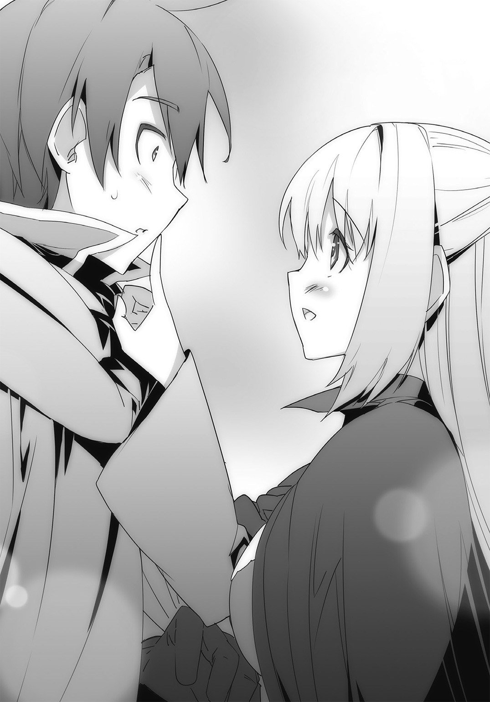
......心から、そう思った。
瞬間――背後から爆音が響き、聞き覚えのある声が響く。
「リョウマ！ ガーネット！ 無事か!?」
「助けに来たよー！ いや、どうなるかと思った！」
振り返ると、アイリスとガーネットがこちらに駆け寄ってくるところだった。
塞がっていた壁には、先程と同じかそれ以上の穴が空いている。
煙が上がっているところを見ると、強制的に穿たれたものだろう。
「ふう。やっと繫がったよ。危うく持ってきた魔導筒が尽きるところだった」
一番後ろから、ココが埃を払いながら姿を見せた。
「一個や二個じゃまるで効果がなかったからね。まとめて十個以上をぶつけてようやくだよ」
「ありがとう。助かったよ。さすがココだな」
オレが手を差し出すと、彼女は一瞥してから、鼻の頭を搔いた。
「ま......これくらい大したことはないけどね」
視線を逸らしながら、照れ隠しのように言って、手を握り返してくる。
「ガーネットに怪我はないようだったが、お前はなんともないか？ リョウマ。傷ついているというのなら隠さずに言うのだぞ」
アイリスがオレにくっついてくると、状態を調べるために体のあちこちを触ってきた。
「へ、平気だって。問題なし。大丈夫だから！」
出会った時も思ったけど、自覚なしに大胆なことするな、この子は。
『聞いてくれよお嬢。体はともかく今し方結構な窮地にあったんだぜ。なんたって兄弟がガーネットに』
「さあ、時間が惜しい。出発しようか、みんな！」
マンゲツの顔に当たる部分を思いきり叩くと、オレは大声を出して歩き出した。
「む？ リョウマがガーネットに何だというのだ？」
『いやだから、さっき二人きりの時に、兄弟が』
「マンゲツ？ 何もありませんでしたよね？」
尚もアイリスに話そうとするマンゲツに、ガーネットが笑いかけた。ただし目は少しも笑っていなかったが。
「何もないのに、何かあるように吹聴するのは、あまりよろしくない行為だと思いますよ？ わたくし、道に外れたことをするモノは、人であろうと鎧であろうと、許さないことにしているのですが」
『............あ、はい』
ガーネットから滲み出る異様なほどの迫力に、さしものマンゲツも、口を噤まざるを得なくなったようだった。......やっぱり彼女は、強い。
「ふむ、よくわからないが、噓をつくのはよくないぞ？ マンゲツ」
『お、おう。気をつけるよ』
マンゲツが引きつったような顔になると、アイリスは「うむ、マンゲツは良い子だな」と満足そうに鎧を撫でてきた。
「しかし二人が無事でよかったよ。やっとこの探検も終わりってところだったのに、何かあったら最悪だもんね」
「え、ってことは？」
ライラの言っていることが意味しているのは、一つしかない。
オレ達は穴から出ると、本来、行くはずだった右の方へと進んだ。
警戒はしていたものの、道中に襲撃が起こることはもうなかった。
そして、やがて見えてきたのは――途方もなく大きな空洞だった。
「ひょっとして、ここが......」
「うん、そう。さっき地図で確認したけど間違いない。この場所がボク達の目的地」
オレの呟きにココが答えてくれる。
「――大胃だ」
さながら、桃色の鍾乳洞といったところだろうか。
空間の全面は百年獣の粘膜で覆われていて、明苔の光で不気味に照り返している。
足元に広がるのは、胃の下半分を占めるエメラルドグリーンの液体だ。ココの話によれば、これは胃液なのだという。小胃にも一応あることはあるらしいのだが、ここと違って目が覚めている時にしか分泌されないらしい。
そして――溶かしきれなかった巨大な岩石がごろごろと転がる中、一つだけ、まるで場違いなものが残されていた。
「......あれが、虹光石か」
美しい、そんな、何の飾り気もない言葉しか出てこない。
オレの中のつたないボキャブラリーでは、表現する適切な単語が見当たらなかったのだ。
赤と蒼と翠と黄、それに金と銀と紫と――。
ありとあらゆる色を閉じ込めているのに、まるで混ざり合うことはなく、まるで共存し合っているように、時折放つ光を変えた。
今まで生きてきた中で見たどんな宝石よりも、あるいは美術品よりも、他に比べようのないくらいの価値があるように思える。
正直、これを持って帰って剣に溶かしこんでしまうというのが、もったいないとすら感じた。
「見事なものだな。これが本当に、魔獣が食したものの集合体なのか」
アイリスが魅せられたような表情で感想を述べる。
「我が国の宝物庫にすら、あのような素晴らしいものはありませんね......」
感嘆の息をつくガーネットの傍を、ココが通り抜け、虹光石へ向かっていった。
「見惚れるのもいいけど、早く回収して帰らないと。思ったより時間を食ったからね」
ココは足元に転がっていた眩い石を手に取り、振り返ると、こちらへと放り投げる。
そして、慌てて受け止めたオレに向かって言った。
「もしかしたら、ここにいるのもそろそろ限界かもしれないし」
「ん、そうだね。じゃあ、そろそろ帰ろっか。どの辺りに穴を空ける？ あそこでいい？」
ライラが適当なところを指差すが、ココは首を横に振った。
「大胃の壁は分厚いからちょっと無理だね。小胃を使おう」
わかった、と返してから、オレ達は来た道を引き返し始める。
「......っと？」
だが、一歩目を踏み出した時だった。オレはバランスを崩し、よろめいてしまい、傍の壁に手をついて事なきを得る。
「どうされたのですか、リョウマ様？ まさか、先程の化け物との戦いで怪我を？」
ガーネットが心配そうに走ってくる。しかし――その彼女も、何でもないところでふらついた。
「あ、あら？ わたくしも知らないうちにどこかを打って......？」
「いや、違うよ。ガーネット。ねえ、ココ。――なんか、揺れてない？」
ライラが注意深く周囲を見回す。言われて初めて、オレも気づいた。確かにそうだ。小刻みに周りが震えている。
『んだよ、こんな時に地震か？』
「いや、違うぞ、マンゲツ。地震の揺れにしては妙だ。これは、一体なんだ？」
アイリスが疑念を呈している間にも、少しずつ、少しずつではあるが、振動は大きくなっていく。
「これは............まさか！」
ココが何かに気づいたような表情で頭上を仰ぎ、舌打ちする。
「みんな、早く移動するんだ！」
「どうしたんだ、ココ。なにかわかったのか？」
「これは地震じゃない。――百年獣が、目覚めたんだ！」
ま、まじかよ!? まだもうちょっと余裕があるんじゃないのか!?
「さっきリョウマ達を助けるために使った魔導筒が、胃壁を傷つけたせいかもしれない」
「そ、そんな......！」
悲痛な声を上げるガーネットに、ココが叫んだ。
「とにかく、このままじゃまずい。吸い込んだ物があっという間にここまでやってくるよ！」
それは、確かに尋常じゃなく危険そうだ。
オレ達は目を合わせると頷き合い、急いで駆けだした。
そうこうするうち、揺れは踏ん張っていなければ立っていられないほどの規模にまで発展している。
気をつけなければ転んでしまいそうな中、オレ達はなんとかして、大胃を抜けて小胃へと続く道を急いだ。
だがすぐに、前方から吹きつけてくる突風に、足を止められた。
「ココ、これってもしかして、百年獣が辺りの物を吸い込んでるんじゃないの!?」
「――みんな、横に避けるんだ！」
ライラの発言にココが即座に指示を飛ばす。
直後――穴の向こうから、無数の何かが飛んできた。
「うわっ!?」
慌てて近くにいたアイリスとガーネットを庇いながら、オレは後方へと跳躍する。
まさに間一髪。
前方を――礫というにはあまりに大きい岩や草木が猛速度で通りすぎていった。
「行くよ！ 次が来る！」
ココが言って、オレ達は移動を再開する。
風に抗うようにして進むため、なかなか前に行くことができなかったが――。
それでも小胃へと無事に辿り着くことができた。
「よし、少しだけ待って。この辺りに魔導筒を仕掛ければ――」
ココがしゃがみこみ、鞄から取り出した爆弾を下に置こうとする。
まさにその時だった。
今まで以上の突風が吹き、オレ達は堪えきれずに吹き飛ばされる。
魔導筒が宙へと浮かび上がり、ココが目を見開いた。
「面倒をかけさせる......っ！」
彼女は暴風の中を走ると、跳躍し、それを摑もうとする。
「――やめろ、ココ！」
寸前で、オレは声を張り上げた。
しかし、ほんのわずか遅い。
ココを目がけて――百年獣の吸い込んだものが、轟音と共に殺到した。
ひと呼吸をする間もなく、鈍い音が連続し、ココのらしからぬ悲鳴が聞こえてくる。
「ココッ......！」
ライラが焦燥のこもった声音で呼びかけ、駆け寄った。
オレ達も急いで向かう。
不幸中の幸いというべきか――大胃へと続く道は今、閉ざされていた。
恐らくこうやって吸い込んだ物を小胃の所々で留めておいて、各所で少しずつ溶かしていく構造になっているのだろう。
だから、ココはまだこの場所に残っていたんだけど......。
体のほとんどが、瓦礫の山に埋もれてしまっていた。
「おい、ココ、大丈夫か。ココ！」
声をかけると、やや間をあけて、彼女は閉じていた目を開けた。
「......なんとか、ね」
言葉とは裏腹に、口調には力がない。
「待ってろ。今助けるからな！」
オレは、瓦礫に手をかけて、どかそうとした。
だが、びくともしない。岩石が幾つも重なっているようで、とんでもない重さになっているようだ。
「みんな、手を貸してくれ！」
ガーネット達に助けを求めて、協力したけど、やっぱり無理だった。
「どうする、リョウマ。何か方法を考えなければ！」
アイリスの訴えに、オレは奥歯を嚙み締める。でも、どうすればいい。
このままじゃまた、前から同じような瓦礫がやってくる。それも一度や二度じゃないんだ。
じっとしてたら、オレ達までココみたいになってしまう。そうなってしまえば、本当に絶望的な状況に陥ることになる。
なにか打開策はないのか。あるはずだ。あと少しだ。あと少しで何もかも上手くいくはずだったんだ。
諦めるな。考え続けろ！
「くっ......何かないのか。何か......！」
瓦礫に思いきり拳を叩きつけ、オレが零した時。
「――もういいよ、リョウマ」
信じられないことを、ココが言った。
「もういいんだ。このままボクを置いていってほしい」
「バカ言うな！ 絶対に助ける！」
強く言い返したが、彼女は尚も力なく首を横に振る。
「どう考えても今の状態じゃ脱出不可能だ。キミ達がここでこうしているうちに百年獣は次々に周囲のものを取り込んでいくだろう。じっとしているのは危険すぎる」
「だからってお前を見捨てて行けっていうのか!? ふざけるな！」
「冷静になるんだ、リョウマ！」
ココを怒るつもりが逆に叱咤され、オレは愕然となった。
「イルタインには優秀な技術者がいる。なんならボクの両親に頼んでもいい。わかるだろう。キミが虹光石さえ持ち帰れば、リベリオンは強化できるんだ」
「そのような問題ではありません。あなた、自分で動くことすらできないではありませんか。放っておいたらどうなるか......！」
ガーネットも熱っぽく訴えかけるが、ココはそんな彼女に向かってあくまでも淡々とした調子で言う。
「そのような問題なんだよ、ガーネット。目的をはき違えちゃいけない。ボク達がここに来たのはリョウマの戦力を増すためだ。ボクのために全滅してしまうことだけは避けなきゃいけない。わかったら早く行くんだ」
ココは、かろうじてといった感じで手をオレの方へと差し出してくる。中には魔導筒が握られていた。
「魔導筒の最後の一つだ。これで脱出してほしい。起動方法はボクが言った魔導言語を唱えるだけでいいから」
「ココ、でも......！」
「時間がない。早くするんだ！」
有無を言わせぬ口調でオレに叫ぶココ。
実際――揺れは最初とは比べものにならないくらいひどくなっていた。
おまけに絶えず突風が吹いていて、そのたびに岩や木や土くれが舞い込んでくる。
幸いなことに先程のように纏めてってわけじゃないが、いつその瞬間が訪れてもおかしくはなかった。
「気に病むことはない。ボク一人をここに放置してキミ達が進む方が、どう考えても理屈に合ってる。創族のみんなだって、非難するはずはない」
ココがわずかに口の端を持ち上げて、オレを説得してくる。いや、これは、彼女なりにこちらを気遣ってくれてるんだろう。だけど、普段ならあまり見ないことをしている時点で、相当に追い詰められているということを感じ、オレは寧ろ心が痛んだ。
オレは視線を逸らし、奥歯を強く、砕けるほどに嚙み締めた。
様々な考えが頭を過ぎり、逡巡し、苦悩する。
でも。
「......みんな」
やがてオレは立ち上がると、絞り出すようにして言った。
「みんな――ここを出よう。確かに今のままじゃ危険だ」
「リョウマ......」
アイリスが何かを伝えようとする声を遮って、オレは続けた。
「ただし、オレは残る」
「......なにを言ってるんだい」
ココが目を見開いた。今聞いたことが間違いであるかのように、オレを睨みつけてくる。
「キミは人の話を聞いてるのか。キミがいなければ意味がないんだよ。三年前も今も。キミを求めてる人がいるんだろう。だったら感情に従うより、先を見据えて動かなきゃダメじゃないか。そんなことだからボクは、キミを――」
「そんなこと、どうだっていいんだよ！」
もう我慢できなかった。オレは瓦礫に手をかけると、力を込めて持ち上げようとする。
「オレに価値があるとか必要だとか！ ココの話は正しいのかもしれない。だけどオレは嫌だ！ お前を見捨てて自分だけ助かって、それでよかったなんて思えない！ だからオレはお前を助ける！」
びくともしない岩石を、それでもオレは全身全霊をかけて押し上げる。
「......キミは、本当に馬鹿なのかい？ 自分がどれだけ愚かなことをしているのか、非合理的なことをしているのか、理解しているのかい!?」
「ああ、馬鹿だよ！ オレはな、大馬鹿なんだ！ だから先のことなんてわからない。目の前に見えてる誰かを助けることしかできない！」
三年前だってそうだ。オレに力があるから使命を受け入れたんじゃない。
ガーネットが、四大聖国の人達が困っているから。
自分のできる範囲で手助けしたいって思っただけなんだ。
オレは賢くなんてないから――それくらいしか、できないんだ。
「合理的かどうかなんて知ったことか！ オレはお前を救ってみせる！ 文句なんか――文句なんか、言わせないからな！」
一つ目の岩を強引に持ち上げて、横に落とす。だけどまだ岩は幾つも積み重なっていた。即座に二つ目へと移る。
「みんな、そういうわけだから、先に逃げてくれ。大丈夫。絶対にココを連れて帰る！」
振り返って断言した。これは、オレの覚悟の証明でもある。残るからって、易々と死ぬつもりはなかった。
「くっ......ぐっ......あああああっ！」
ひときわ大きな岩を、それでもどかそうと、オレは歯を食いしばる。
「......あああああっ！」
そこへ、別の力が加わった。視線を傾けると、アイリスが同じようにして肩で岩を押し上げようとしている。
いや、彼女だけじゃなかった。ガーネットやライラまでが、懸命にオレに協力してくれていた。
「リョウマ様を一人残して、逃げるわけにはまいりません......！」
「そうだよ。戦族の矜持にかけて、やってみせるから！」
ガーネットとライラがそれぞれ言って、岩に摑みかかる。
「リョウマとココを救えずして......帝国臣民全てを救うことなどできるものか......！」
アイリスが声を嗄らして叫んだ。
「私も諦めないぞ、リョウマ！ 共に――生きて帰ろう！」
呆然としたあと――オレは胸が詰まって、言葉が出てこなくなる。
俯き、目を閉じて、静かに零した。
「......ありがとう」
突風。
そんなオレ達の行為を嘲笑うように、衝撃が襲ってくる。次いで、巨大な瓦礫の塊が怒濤の勢いで迫ってきた。
「みんな、一旦伏せろ！」
オレは呼びかけるが――それより早く、こちらにぶつかるより前に、瓦礫は砕けて四方に散った。
『おいおい兄弟。おれを忘れてないかってんだ！』
マンゲツが防御壁を張りながら、誇らしげに言い放つ。
「さすがだ相棒！ よし......行くぞ――ッ！」
力を合わせ、オレ達は一つ、また一つと瓦礫を崩していった。
その間にも百年獣は次々と様々なものをのみ込んでいき、周囲に積み上がっていく。
少しずつ胃液で溶かされていくようだけど、到底追いついていなかった。多分、ここを一杯に埋め尽くすまでは現状が続くんだろう。
「やめるんだ、みんな。早くしなければ、ここから出ることすらかなわなくなるんだよ!?」
ココが必死に警告するも、オレ達は聞いていなかった。いや、聞かなかったという方が正しい。
ただ眼前にある障害を取り除くことのみに心血を注いでいて、それ以外のことに気を遣ってる暇はなかったのだ。
そして――。
「これで......最後だッ！」
オレ達はようやく、なんとかぎりぎりで、最後の瓦礫を排除し終えた。
「よし。ココ、逃げるぞ！」
オレは倒れ込んでいるココに肩を貸して、みんなと共に歩き始める。
ほとんど隙間もなくなってしまった小胃の中をどうにか通り抜けながら、奇跡的にわずかに見えていた胃壁に魔導筒を置くと、距離を取る。
「よし――いいぞ。ココ、頼む」
「くっ......まったく、キミ達は......」
「はいはい。そういうのはあと！ 時間ないよ！」
ライラから急かされ、ココはため息を一つつき、呟いた。
「――【点火】」
爆音が轟いた。尋常じゃない量の煙が噴き出し、周囲にあった瓦礫をも押しのける。
やがて姿を見せた、大きな穴を通り抜けるため、オレ達は駆けだした。
その時――何度目かの風を背中越しに感じた。オレはぞっとして、みんなに指示を出す。
「――飛ぶぞ！」
同時に足元を蹴って、外へと脱出した。外の眩い光に頭がくらむような感覚を覚えながら、ココを抱きしめつつ、地面を転がっていく。
ようやく止まってから体を起こすと、アイリス達も同じように近くに転がっていた。
次の瞬間、凄まじい音と共にオレ達が出てきた穴が瓦礫で塞がれる。
間一髪っていうのは、こういうのをいうんだろうな。危なかった......。
目の前で岩山が、よく観察しなければわからないほどゆっくりと移動していく。
百年獣が、空が皹割れんばかりの咆哮を上げた。
オレ達はこれ以上の被害を避けるために、ココを支えながらその場から離れる。
そこで、ようやく――腰を落ち着けることができた。
「......はあ。やっと脱出した」
さすがに、本気でどうなることかと思ったぞ。
「いやあ、なかなか経験できないことしたねえ。いい思い出になるよ」
ライラがにこやかに言い放った。ただ、申し訳ないことに、オレはそこまで前向きに思えない。
「しかしどうにか目的の物は手に入れることができたな。みんなも無事のようだし、何よりだ」
「ええ。終わりよければ全て良し、ですね」
アイリスとガーネットが和やかに会話を交わし合った。
「――全然よくないよ」
唯一不機嫌なのが、ココだ。
彼女はオレの手を振り払い、胡坐をかくと、鼻を鳴らした。
「リョウマ。キミはどうやら相当に覚えが悪いらしいね。ボクがあれほど忠告したのを聞いてなかったのかい？」
「いやあ、そんなことは。ちゃんと記憶してるよ」
「だったら、どうしてあんな無茶苦茶なことができるんだい。言ってることもわけがわからないし、どうかしてるとしか思えないよ！」
身を乗り出して、ココが鋭い目つきでオレを睨みつけてくる。
「たまたま上手くいったからいいものの、もし四人ともあそこで瓦礫に潰されちゃってたらどうするつもりだったんだい!?」
「いや、それは......その。なんとかしたさ」
「なんとかって、どうなんとかするの？」
「そりゃ、あれだよ。あのー......こう、上手い具合に、ががーっとさ。はは」
「具体性がない！」
一刀両断されてしまった。いやオレもさっきの答え方はどうかと思ったけどさ。
「ああ、もう、キミは本当にどうしようもない......！」
頭を搔き回して、ココがやりきれない思いを吐き出すように声を上げた。
「......悪い。でもさ、お前を助けなきゃって思うと、あとのことは何にも考えられなくて」
ただ無我夢中でやってしまったんだよな。
「だからって、あんなことを――」
「ところで、ココ、歩けるか？」
「......え？」
「いや、ここから下山しなきゃいけないだろ。歩けるかなって。なんならオレが背負っていくけど」
「.........キミねえ。今の自分の立場、わかってるのかい？ 一応ボク、キミを説教しているんだけど」
「いや、わかってるけど」
オレは曖昧に笑みを浮かべながら、理解し難いといった顔のココに答えた。
「なんていうか、ちょっと、心配になったもんだからさ」
すると、ココの顔が、魂の抜けたかのような表情になる。
しばらくしてから彼女は、がっくりと項垂れて、「......ダメだねこれは。やる気なくした」とぼやいた。
「無駄だよ、ココ。リョウマってこういう人だからさ」
なぜだか慰めるように、ライラがココの肩に手をかける。
「そうだな。何をどう是正しようとしても、リョウマがリョウマであることは、覆せない」
「ええ。ですからココ、この方を理屈で丸め込もうとしてもダメですよ」
アイリスとガーネットが交互に言うと、ココは天を仰いだ。
「......どうやら、そうみたいだね」
なんだか褒められているのかそうでないのかわからないけど、とりあえずココの怒りは収まったみたいだから、いいか。
「いや、でもよかったよ、ココ」
「......なにが？」
「決まってるだろ。――お前と一緒に、帰れそうだからさ」
口元を緩めながらそう言うと、ココは面食らったような顔つきになった。
「......まったく、キミは」
顔を背け、ぼそりと呟く彼女の頰には、わずかな朱が差している。
『お、兄弟、さすがだな。このむっつりちびっ子の心まで奪いやがったか。いや、罪な男だな』
「なに!?」「なんですって!?」「ちょっと、ココ!?」
アイリス、ガーネット、ライラが色めき立った。しかしココは、咳払いと共に手を振る。
「そんなわけないだろう。寝言はベッドで言うものだよ、鎧クン」
『本当かよ？ だったらなんでまだ顔が赤いんだ？』
「う......うるさいな。なんでもないよ、これは！」
こちらに背中を向けると、ココはなにかを誤魔化すようにして大声を出した。
「さあ、とにかく帰ろう。目的の物は手に入れた。いよいよ――リベリオンを、完全な姿で生まれ変わらせるよ」
リベリオンを強化するためには、一旦虹光石と混ぜ合わせる必要があるため、それなりの時間がかかってしまうとのことだった。
「多分、突貫でやっても一日はかかると思うから。それまで、適当に時間を潰していてほしい」
オレクへ帰還するなりココはそう言ってリベリオンを預かると、かわりに別の剣を差し出してきた。
「これ、ボクが最近作ったもの。とはいえ、特別な能力はないんだけど。まあ、新生リベリオンができあがるまでの代わりに使ってほしい」
「ああ。ありがとう。でも、いいのか？ 体の調子、悪いんじゃないのか」
ココの自宅へ戻ってきてから一応、休んだものの、まだ数時間くらいしか経っていない。
「問題ないよ。手が動けば仕事はできる。ほら、集中したいから、早く出て行って」
ココは肩を竦めると、オレの背中を押して家から追い出そうとしてきた。
「わ、わかった。じゃあな。冒険まで付き合ってもらって、何から何まで世話かけるけど」
「好きでやってることだから気にしなくていい」
ぶっきらぼうに告げてから、ココは家の奥へと引っ込んでいく。
「へへ、あれ、照れてるね」
ライラが面白がるように言った。
「うむ。段々とココがどんな人物かわかってきたぞ。最初は少し驚いたが、私は彼女が好きだ」
アイリスが腕を組み、頷きながら述べる。
「ええ。なんだかんだ言って、素直じゃないだけで、良い子なんですよね」
ガーネットも微笑ましそうに同意した。
「――そこ。余計なこといつまでもくっちゃべっていない」
ひょっこりと顔だけを出して、ココが睨みつけてくる。
オレ達は余計な怒りを買わないうちに、慌てて家を出た。
「しかし時間を潰せって言われてもな。どうする？」
ココから借りた剣を腰に差しながら、オレはみんなに尋ねる。
「せっかくですし、買い物でもしましょうか。この街では創族が作り上げた最新鋭の道具を売っているはずですから」
「うむ、それは面白そうだな。なにか旅の役に立つものがあるのかもしれない」
ガーネットの提案にアイリスが乗った。
「あたしは食べ物屋でも行こうかなあ。創族のお店なんて、あんまり美味しそうじゃないけど」
ライラが首を傾げつつ、思案した。するとアイリスが「そっちもいいな！」と素早く反応する。同時に、盛大に腹の音が鳴って顔を赤らめた。
オレは、頰に両手を当てて「は、はしたない......」と恥ずかしがっているアイリスの頭を、笑いながら軽くぽんぽんと叩きつつ、
「オレは、街のあちこちでも見て回ろうかな。よく考えれば着いてからゆっくりしていなかったし」
「まあ。ではわたくしもそちらにお供します！」
「ガーネット、自分の考え変えるの早過ぎじゃない!?」
あまりの変わり身にライラが目を丸くしたが、ガーネットは素知らぬ顔でオレの腕を摑む。
「いいでしょう？ リョウマ様。途中、いいお店があったら一緒に巡りませんか」
「ん、いや、そりゃいいけど」
「じゃあ、あたしも行く！」
素早く手を挙げ、空いた方のオレの腕に自分のそれを絡ませてくるライラに、アイリスが「わ、私もそうするぞ！」と続いた。
「その、食べ物屋とかあったら、寄ってみたりなんかしてもいいかもしれない。いや、強制はしないが！ しないがリョウマも冒険のあとでお腹が空いているだろうし、ここは一つ行ってみるのもありではないかと......思わないでもないことを、勧めてみる感じがしている、私だぞ！ なぜって今日はよく晴れているからな！」
「アイリス、焦って言ってることが支離滅裂になってるぞ」
そんなにお腹減ってるのか？
「......じゃあ、まず、どこか食事できるところに行くか」
そうしないと、アイリスも安心できないだろうしな。
オレはどこか適当なところがないかと街を歩くことにした。
と――そこで、前から歩いてくる人物に、なんとはなしに目をやる。
ローブのフードを目深に被った、性別不明のその人物が、妙な動きをしていたからだ。
足元がおぼつかない様子で、あっちへ行ったりそっちへ行ったりと落ち着きがなかった。昼間から酔っているのかと思ったけど、もしかしたら体調不良かなにかかもしれない。
心配になったオレが注意深く見ていると――その人は、何かに蹴躓いたように倒れてきた。
「おっと。......大丈夫ですか？」
ガーネットとライラが放してくれたので、咄嗟に支えると、その人はか細い声で答えた。
「ありがとうございます。......その、少しあなたにお願いがあるのですが」
女性特有の高い声音に対して、オレが「なんでしょう？」と問い返した途端。
「――動くな。動けば切る」
首筋に、冷たい感触が伝わった。
見なくてもわかる。刃物を突きつけられていた。懐に入られていたため、避ける暇がなかったのだ。
「な、なんですか、あなたは!?」
ガーネットが慌てて指を突きつけると、女性は先程までの動きが噓のように身軽な動作でオレの背後へと回り、改めて喉元にナイフを当ててくる。
「他の者も同様だ。少しでも妙なことをすればこの男を殺す」
「ちょっと。なんのつもり!?」
ライラがいきり立ってハンマーに手をかけた。すると女性はオレに当てたナイフをわずかに押し込んできた。鋭い痛みが走る。
「言うことを聞け。ワタシは本気だ」
押し殺したような微かな声に、ライラが手を止めた。
「......何の目的があってリョウマを狙う」
アイリスが問い質すと、女性は冷淡な口調で返す。
「この男だけではありません。全員に用があります」
......どうしてアイリスにだけ敬語なんだ？
オレが疑念を抱いた時――周囲に、影が降り立った。
いずれも女性と同じくローブを頭から被っていて、不気味な威圧感を放っている。
「ご安心ください。大人しくしていれば危害は加えません。......我々に同行してもらおう、クロセリョウマ」
「あんた、一体誰なんだ......？」
「答える必要はない」
女の返答と共に、周囲に展開した集団は、揃ってローブの下から長剣を取り出した。
黒雲の下で、銀の輝きが不気味に照り返す。
「自分の正体も伝えず、一方的に武器で脅すような相手に、ついていくと思うか？」
「現状を把握すれば、それもまた然りだろう？」
余裕ぶった態度で、刃をちらつかせる相手に、オレは苛立ちを覚えた。
随分と、嘗めてくれるな......。
「だったら、変えてやろうか？」
「......なにをだ？」
「現状を、だ！」
オレはあえて、前に踏み出した。ナイフの刃が滑り、肌を切り裂いていく。
だが、まさかそんな行動に出ると思っていなかったのだろう。力は入っておらず、傷は浅いものに留まった。
オレはココから借り受けた剣を抜くと、振り返りざまに相手へ斬りつける。
「貴様......ッ！」
ナイフでそれを受け止めると、女性が踊るように攻撃を仕掛けてきた。
瞬く間に連続した衝突音が響き渡る。オレは果敢に突っ込んでいくが、いずれも受け止められ、弾かれた。かなりの実力者だ。
リーダーらしき女性が反撃を受けたのを見て、周囲の者達が動き始めた。
しかしいずれも、アイリス達によって阻まれ、前進できていない。
『どこのどいつか知らないが、兄弟に手を出すとは運の悪い野郎だな！』
加えてマンゲツが防御壁を張ってくれたので、彼らは完全に手出し不可能になった。
「リベリオンを手放した隙を狙ったが、剣の腕もなかなかのものだ。さすが皇帝を倒した英雄ということか」
何度目かのオレの攻撃を流しながら、相手が踏み込んできた。オレは刃の先で向けられた得物を絡め取り、弾き飛ばす。
「そういうことだ。悪いが――少し痛い目を見てもらうぞ！」
懐へと飛び込むと、オレは剣を逆手に持ち変え、柄頭で相手の顎を打とうとした。
だがその寸前、鼻が奇妙な匂いを嗅ぎ取る。
甘い果実のような香りに眉を顰めた直後――オレは脳味噌を揺さぶられたような気分になり、足元がぐらついた。
思わず膝をつく。こめかみを押さえ、目を閉じるが止まらない。
「我が一族に代々伝わる妙薬だ。わずかでも吸い込めば意識を喪失し数時間は目覚めない」
しまった。油断していた。
オレはどうにかして立ち上がろうとしたが、体はまったく言うことを聞いてくれない。
「さっきから一体何の騒ぎを起こして......リョウマ!?」
視界の隅で、家から出てきたココと目が合った。
「に......げろ......ココ......」
ようやくのことで、オレはそれだけを絞り出す。
体勢を保つことができなくなって、その場に倒れ込んだ。
目の前がチカチカとして、保とうとする意識が徐々に削り取られていく。
やがて――。
オレは、闇に落ちた。
第三章 少女の邂逅
彼女はいつものように、ただ、バルコニーでじっと佇んでいた。
目の前では蒼穹の下、山々が連なり、遙か先まで続く様子が展開されている。
鬱蒼と茂る緑の中、所々で花々が彩る様は、まるで一流の職人が紡ぐ上質なタペストリーにも似た美しさを誇っていた。
遠目には小さく見える滝の流れに、飛行する竜が絡み、離れていく。
まるで一枚の絵画の如き様を見せる、風光明媚な景色は、見る者に感動を呼び起こすものだった。
しかし、彼女にとっては何年も前から見慣れた光景にすぎない。故に何の情動も湧かずに、ひたすら黙然と眺めるのみだった。
......あれから何年が経ったことだろうか。
自分を取り囲む、人々が夢見る理想郷の如き、俗世離れした小さな世界。
かつて一時、ここを出て暮らしていたことが、まるで夢物語のようにすら思えていた。
だが、そうではない。あれは確かな現実だったのだ。
その証拠が、間もなく、訪れるはずだった。
「――お連れしました」
控え目なノックの音と共に、小さく告げられる。
彼女は前を見据えたままで、入りなさい、と静かに言った。
やがてドアの開く音と共に、四つの気配を感じた。
「失礼致します。ご指示の通り、アイリス様をお連れしました」
そのうちの一つが厳かに声を発する。
「ご苦労様でした。下がっていいですよ」
わずかな間のあと、失礼致します、という言葉と共に三つの気配が消え去った。
ドアが閉まり、場には彼女とあと一人だけが残される。
「一体なんのつもりだ。お前は誰だ。ここは一体どこなのだ」
凜としているが、明らかに敵意の滲んだ声で、背後の相手が問いかけてきた。
「リョウマ達はどこにいる。事と次第によってはただでは済まさんぞ」
虚勢ではない。後ろの相手は本気で脅しにきていた。
ここがどこかもわからない。相手にしている自分が誰かも知り得ていないというのに。
大した度胸だ、と思うと共に、似ている、と彼女は思った。
初めて自分がこの国に住む者以外で名を覚えた人間に。
あの人の――若い頃に。
「さすが、親子というべきですね」
彼女が呟くと、相手は沈黙した。意味がわからず、訝しんでいるのだろう。
「あの方もそうでした。相手がたとえどのような人間であろうと己を曲げず、正面から立ち向かい、決して退くことはありませんでした。昔、ガルフレアがまだ小さな国だった時、臣民はそうした王を心から崇敬し、つき従っていたものです」
「......なぜ、お前が我が国のことを知っている？」
警戒というよりも、疑念の方が増してきたような口調で、背後の人物が尋ねてくる。
「当然でしょう。わたしは帝国のことであれば何でも知っていますよ。恐らくは、アイリス――あなたよりも、ずっとね」
身に纏ったドレスの裾を翻しながら、彼女は振り返った。
眼前に立つ、紫がかった黒髪を持つ少女を視認し、口元に微笑みを浮かべる。
自分の知っている彼女とは、まるで違っていた。
当然だ。あれからもう、十年以上は経ってしまったのだから。
しかし――それでも、嬉しい。
相貌の微かな部分に、当時のおもかげが残っていた。
少し吊り気味の目に、瑞々しくふっくらとした頰に、そして――。
自分と同じ、尖った両耳に。
「大きくなりましたね、アイリス」
久方ぶりに名を呼んだ。
この時をどれほど待ち侘びただろう。
この瞬間をどれほどに望んだことだろう。
ようやく会えた。
アイリス＝ナクナ＝フェルモント。
彼女が誰よりも愛した――存在に。
「わたしを、覚えてはいませんか？」
アイリスが眉を顰めた。眉間に皺を寄せ、小さく唸り、迷うように目を泳がせる。
「無理もありませんね。あなたはまだ言葉さえ喋れぬ幼子だったのですから」
駆け寄り、抱き締めたい衝動を抑えながら、彼女は言った。
「アイリス、わたしは――」
真実を、口にする。
瞬間、アイリスの目が、大きく見開かれた。
※
穏やかな風が顔を撫でていき、オレは、うっすらと目を開けた。
ぼやけた視界の中、覚えのない天井が映る。
複雑な線が引かれ、中央部に太陽に似た紋様が刻まれていた。
「......ここ、どこだ」
少なくとも、野営に使っている洞窟や、旅の途中で寄った宿屋じゃない。
まるで寝すぎてしまった時のように、まだ頭がぼんやりとしていて、はっきりしなかった。欠伸を嚙み殺し、オレは体を起こす。
ベッドに寝かされていた。それもかなり豪華なものに。
既視感があるな、と思ったら、アイリスに召喚された時に似ていたのだ。
部屋も、内装や調度品こそ違いがあるものの、大体造りは同じだった。
まさか、ガルフレアに戻ったわけじゃないよな。オレは目を擦りながら、ベッドから降りた。
「あ......リョウマ様。よかった。お目覚めになられたのですね」
室内にある椅子に腰かけていたガーネットが立ち上がり、オレの方へと近づいてくる。隣にはライラもいて、ほっとしたように息をついた。
「あたし達はとっくに起きたのにいつまでも眠ったままだからさ。ちょっと心配してたんだよ」
「悪い、二人とも。......アイリスは？」
捜したが、部屋にはガーネットとライラ以外は見当たらなかった。
「申し訳ありません、わからないんです。この部屋にはわたくし達以外いないようで......」
「え、じゃあ、アイリスだけ別のところに移されたとか......？」
「それもわからないんだよね。あたしもガーネットも気づいたらここにいてさ。窓から見えるのは山ばっかりだし、出ようとしたら扉に鍵はかかってるし」
ライラに言われてオレは部屋の入口まで向かったが、なるほど、確かにノブが回らない。
「強引に扉を吹き飛ばそうとしたんだけど、びくともしないんだよね」
「恐らくは何らかの魔法が作用しているのだと思います。ただ、どんなものなのか分析ができなくて......」
ガーネットがわからないくらいなんだから、かなり複雑で高度なものなんだろうな。
「外から出ることは？」
「やってみようとしたけど、ダメだった。何回やっても部屋に戻ってくる。多分、そっちにも魔法がかかってるんだと思う」
渋い顔をして、ライラは腕を組んだ。
打つ手なしってことか――アイリスはどこにいるんだろう。何も情報がない以上、無闇に悪いことばかり想像するのはよくないとは思うんだけど、どうしてもやっぱり不安になる。
多少、乱暴な手を使ってもなんとかしてここを出て、彼女を捜さないと――と、オレは無意識に腰に手をやったところで、そこが心もとないことに気づいた。
「あれ、オレの剣は？」
『兄弟達をこの部屋に放り込んだあと、襲った連中が奪っていったよ。ガーネットやライラの分までな』
胸元でマンゲツが答える。見るから不機嫌そうに目の模様が三角になっていた。
『おれも引き剝がそうとしてたみたいだが、意地でも離れてやらねえって気で耐えてたら、そのうち諦めた』
「そうか......お前だけでも無事でよかったよ」鎧の表面を撫でながら、「そういや、マンゲツは薬が効かなかったんだろ。なにか見なかったか？」
『いや、生憎と。あいつら、兄弟達を大きな袋に突っ込んで、そのまま竜車みたいなのに乗りやがったみたいでな。随分と長く移動していたようだが、どこに来たかまではわからねえ。兄弟と一緒に転がり出た時点でお嬢はいなかったしよ。ちくしょう、おれがいながらみすみすお嬢を......』
悔しそうに零すマンゲツに「あんまり思いつめるなよ」と声を掛けながら、オレは頭を搔いた。
しかし、だとすると、状況を把握する手段は今のところないってことか。参ったな。
「創族の方達は外に出ていませんでしたし、ココ以外の目撃者もいないとなると、助けが来るのは難しそうですね。ここがどこなのかもわかりませんし......」
「ああ。ココはどうしたんだろう......」
ガーネットに返しながら、オレは募る焦燥感をどうにか抑え込み、冷静さを保つよう心掛けた。
襲撃者がオレ達をあの場で殺さなかったってことは、何かしらの意味があるんだろう。だとすれば多分、ココだってそのはずだ。この場所にいないってことは、アイリスと同じく他のところにいるのか。あるいは、あの時に逃げ延びたか見逃されたかのどちらかなんだろう、きっと。そう信じることにした。
「にしても、見事に全部持ってかれたな。武器はともかく鞄まで持っていかなくてもいいのに」
オレはやけにすっきりとしてしまった身の回りをチェックしようと、衣服のあちこちを手当たり次第に探った。が、やっぱり、何にもない。
「......ん？ なんだこれ」
と思った矢先、足元に何かがくっついているのを、オレは摘まみ取った。
ピンバッヂみたいな形をした豆粒くらいの物で、中央に橙色の宝石みたいなものが嵌め込まれている。時折光を放つので、ただの飾りって感じじゃなさそうだけど、意味がわからなかった。こんなもの、買ったことも貰ったこともないはずだけど。
「どうしたの？ リョウマ」
ライラが問いかけてきたが――オレが答えるより早く、部屋に異変が起こった。
ノブが回り、扉が開き始めたのだ。
オレは反射的に飛び退くと、ガーネットやライラを背後にし、構える。
が、意に反して訪れた相手は、落ち着き払った態度でゆっくりと姿を見せた。
頭まですっぽりとローブで覆った人物だ。間違いない。あの時、オレ達を襲った奴らのリーダーだった。
「お前......！ 一体なんなんだ。どういうつもりでオレ達をこんなところに連れてきた！ アイリスはどこにいる!?」
強い口調で問い質すが、ローブの人物は反応しない。
やや間を空けたところで、吐息を一つして、短くこう言った。
「落ち着け」
「落ち着かなくしたのは君だよね」
頰を膨らませるライラに取り合わず、ローブの人物はオレの方へと顔を向ける。
「クロセリョウマ。会わせたい人物がいる。ついてこい」
「その前にアイリスとココの無事を確認させろ。全てはそれからだ」
「要求ができる立場だと思っているのか？」
ローブの人物が部屋に入ってくると同時に、後ろからぞろぞろと同じ格好の人達が続いてきた。全員が、即座に剣呑な空気を纏う。
「教えてくれないなら、ここで一戦始めてもいいんだぜ。武器はなくても魔法は使えるからな」
オレは一切怯まず、寧ろ挑発的な言葉を投げつけた。主導権をあちらに握られたままというのはあまりよくないと判断したからだ。
ガーネットやライラもまたオレの横に並び、同じく戦意を漲らせた。
「......まったく。大人しく怯えてくれていれば面倒がないものを」
ローブの人物は辟易したように呟いてから、オレに向かって垣間見えている口を開く。
「ココなどという奴は知らん。連れてきたのはお前達三人とアイリス様だけだ」
「だったらアイリスはどこにいる」
「安心しろ。あの方はこちらで丁重にもてなしている」
「......本当だろうな」
確認しながら、オレは相手がアイリスに敬称をつけたことに違和感を覚えた。
いや、待てよ。そういえば、こちらを奇襲してきた時もそうだった。アイリスにだけやけに丁寧な話し方してたよな。
彼女と関わりのある人間なのか。でも、帝国だったらわざわざこんなことをする意味なんてないはずだし――。
「信じられないというのも致し方ないことだ。だがこれからお前達を連れていく場所にアイリス様もいる。それで証明できよう」
衣擦れの音がした。相手がローブのフードを落としたのだ。
「我々がアイリス様を傷つけるなどということは万に一つもないことだ。あの方は――この国にとって、重要な存在だからな」
現れた顔を見て、オレは、息を呑んだ。
白磁のような白い肌。切れ長の目。夜明けの空を思わせるような美しい紫の瞳。
端整な顔立ちの左右にあるのは――尖った耳だった。
「あ、あなた達は、まさか......!?」
ガーネットのうろたえる声に、ローブの人物......美しい女性は、微かに頷いた。
「そうだ。ワタシ達は神族。古くより創造神アラムヴェルトに身を捧げ、主の御使いとしてこの世に生きる者達」
彼女に続いて背後にいた人達も次々にフードを取っていく。
その全てが、神族であることを示す尖った耳を持っていた。
「ここは【ファレーナ】。――神族達の住まう国だ」
ど、どうして、神族がオレ達をこんなところに連れてくるんだ。
しかも、あんな目に遭わせてまで。
「クロセリョウマ。アイリス様にお会いしたいのであれば抵抗をせずについてこい。そこで我らの主が話をする」
「神族の主って......あの、滅多に表に姿を現さないっていう？」
意外な展開にライラが目を瞬かせた。
そういえば三年前も、オレが見たのはファレーナから来た使者だけで、主――つまり王様には会ったことがなかったな。
「そうだ。主はもっとも強くアラムヴェルト様の洗礼を受けしお方故、穢れを避けるために滅多に俗世とは関わりにならぬ。このような機会に恵まれたこと、僥倖と心得よ」
滅茶苦茶上から目線なことを言って、女性は踵を返すと、他の人達と一緒に歩き始めた。
「......どうする？」
思わずガーネット達と顔を見合わせて相談するオレである。
「そうですね。このままここにいたところで何も変わりません。ついていくのも一つの方法かと存じますが」
「うん。なんか妙なことしようとしたら、その時こそ反抗しちゃえばいいんだよ。また妙な薬を嗅がされる前にさ」
まあ、そうだな。とりあえず、今は追従しておくのが無難ってところか。
「なにをしている。早くしろ」
居丈高に促され、オレ達は仕方なく部屋を出た。
長い石畳の廊下には、左右に大きな柱が何本も立っている。外には見事な庭が広がり、噴水が絶えず水を噴き出していた。なんとなく、外国の神殿を思わせるような感じだ。
ファレーナ――山の奥にあって、よほどのことがない限りは他国との接触を阻む国とは聞いてたけど、なるほど確かに隔世の感はあるな。
オレやガーネット達がきょろきょろと辺りを見回しているうちにも、女性は他の人達と共に黙々と先を歩き続けていた。
「......あの」
しばらくしてからオレは、思いきって話しかけてみる。
「なんだ」
極めて短く返事が寄越された。
ティタニアの騎士団長をしていて、オレの剣の師匠でもあるロザリも必要最低限のことしか口にしない人だけど、それとはまた違う。
なんていうか、できるならこちらとコミュニケーションを取りたくないと思っているような印象を受けた。
「あなたの名前はなんていうんですか」
女性が足を止める。が――ほんの少しの間だけで、すぐにまた歩き始めた。
「どうしてそんなことを知りたい。何の意味がある」
「いや、別に意味なんてないですけど。ただ、なんとなく。それにそちらがこっちのことを知っているのに、こっちは何も知らないなんて、ちょっとずるくないですか」
「ずるいとか、ずるくないとか。そういう問題か」
「そういう問題です。リョウマ様は気遣って迂遠な言い回しをされましたが、要はあなた方の得体が知れないと仰っているのですよ。それともなんですか。名前を言えない理由でもあるのですか」
ガーネットがむっとしたように追及する。いや、別にそういうことじゃなくて本当になんとなく気になっただけなんだけど......まあいいか。
「そんなものはない。ただお前達に伝える必要性がないと思っただけだ」
「いけ好かない奴ー」
はっきりと言って、舌を出すライラ。そんな彼女の言葉が癪に障った、というわけではないだろうが、女性はやがて短い吐息と共に答えた。
「......フェイラインだ。仲間からはフェイと呼ばれている」
「ありがとうございます。他の人達の名前は？」
「知らないでいい。お前達も喋るな」
命令をされると、周りにいた人達は微かに頷いた。
「神族って、いつもそうだよね。自分達はお前達とは違うんだーって感じでさ。三年前も妙に偉そうに指示飛ばしてきたし。なんでなの？」
ライラが尋ねるのに、フェイは顔色一つ変えずに答える。
「当然だ。我々はアラムヴェルト神の御加護を一身に受けた者。お前達下賤な民とはそもそもから格が違うのだ」
『なんだてめえ、そのクソ生意気な言い方は――むぐっ』
マンゲツが喧嘩を吹っかけようとしたので、オレは慌てて口の紋様を手で塞いだ。
気持ちはわかるが、今は少しだけ大人しくしておいてくれ。無駄な争いは避けたいし、余計な真似をして、またあの部屋に閉じ込められるような羽目にはなりたくない。
「神族が特別なのって、輝術が使えるから、ですよね？ さっき扉や窓にかけてたのもそれですか？」
オレが質問をすると、少しの間だけ沈黙の間があったあと、フェイが頷いた。
「ですが輝術は魔力を消し去る以外に、目立った力はなかったように思いますが......」
「それはあくまで一般的な解釈だ。お前達が知らないだけで、輝術は使い方によって他にも効果を発揮する」
ガーネットが意外そうに言うと、フェイは鼻を鳴らして返し、角を曲がる。
そのまましばらく進むと、やがて、武装した兵士が左右に二人並んだ扉の前に出た。
「連れてきた。通せ」
フェイが命令すると、二人は頷き、それぞれが扉に手をかける。
やがて少しずつ開いていき、内部が明らかになっていった。
「行け。ワタシ達は後ろから見張っているから、妙な真似はするな」
顎で指示され、オレ達は中へと足を踏み入れる。
だだっ広い部屋は、独特の色合いと模様を持つ絨毯が敷かれ、細かな意匠の施された壁に囲まれていた。
天井から下がる垂れ幕には、大きな樹に太陽からの光が差している様子を描いた紋章が縫われていた。
奥の方にはステンドグラスがあって、煌めくような陽光が差し込んでいた。なんとなく、全体的にお城というよりは教会のような趣がある。
「初に目にかかりますね。救世の英雄よ」
流麗な声が響き渡った。ステンドグラスの前にある、豪奢な椅子からだ。
大人の女性らしき人物が、腰かけている。
らしき、とわざわざ使ったのは、顔がはっきりとわからなかったからだ。
純白のドレスに身を包んだ女性は頭に茨を象ったような金の冠を被っていて、そこから薄いヴェールのようなものが下りているので、表情がまるで読み取れない。
「あなたは......」
オレが問いかけるより早く、女性は再び口を開いた。
「わたしはアルヴェーヌ。アルヴェーヌ＝カイエナ＝リザ＝リスティス。――このファレーナを治める者です」
そうか。この人が......そうなのか。
三年前ですら会うことのできなかった、神族の王。
「......待ってください。神族の王は男性ではなかったのですか？ 直接御目通りがかなったことはありませんが、話には聞いています」
ガーネットが困惑したように言うと、アルヴェーヌさんはわずかにヴェールを揺らした。
「いかにも、そうです。しかしそれはしばらく前のこと。前王は――わたしの父は、高齢により亡くなりました。よって、わたしが王位を継いだのです」
「......そういうことでしたか。事情を知らぬ故、失礼致しました」
胸に手を当て、ガーネットが深々と頭を下げる。
「構いません。このことは今のところ、ファレーナの民以外は知らぬことですからね」
「それより、女王様、アイリスはどこなの？ この国にいるんじゃないの？」
ライラが身を乗り出すと、後ろから「不敬な」という声が飛んできた。
「アルヴェーヌ様に不躾な物言いをするな。分を弁えよ」
「なんでよ。あたしだって戦族の長の娘なんだからね」
振り返り、ライラが注意をしたフェイに食ってかかる。
「フン。戦ばかりしか能のない、野蛮な一族の血を引いているからなんだというのだ」
「......よーし、わかった。喧嘩売ってるんだね？」
戦族のことを批判されたことにはさすがに我慢できなかったのか、ライラが拳を鳴らした。
「......やめなさい、フェイ。ライラ＝トールニクス、部下の非礼を代わって詫びます。何卒お許しください」
しかし、アルヴェーヌさんからそう申し出られ、ライラは不満そうにしながらも引き下がった。
「アルヴェーヌ様。オレにお話がある、とのことでしたが、その前にアイリスに会わせてもらえませんか？ そうじゃないと、落ち着きません」
ここはなるべく穏やかにいこうと、オレは丁寧にお願いしてみた。
すると、アルヴェーヌさんはまたヴェールを揺らしてから、答えてくれる。
「わかっています。――アイリスを、ここへ」
指示が出されると、それほど待つこともなく、扉の開く音がした。
「リョウマ！」
聞き馴染んだ声に振り返ると、アイリスが駆け寄ってくるところだ。
彼女は途中で飛び上がると、オレに抱きついて、嬉しげな声を上げた。
「リョウマ！ ――ああ、よかった。お前やガーネット達が何をされたのかと気が気でなかったぞ。再会できてなによりだ」
「ああ。こっちこそ。なんともないか？」
微笑んで尋ねると、アイリスは涙ぐみながら何度も頷く。
「問題ない。お前達こそ怪我などしてないな？」
「ええ、大丈夫ですよ。この通り、傷一つありません」
「よかったー。アイリス、もう会えないんじゃないかと思ったよ」
ガーネットが笑いかけ、ライラがアイリスの頭を撫でた。
『お嬢、うう、お嬢......！ よかったぜ。本当によかった。もしお嬢になにかあったら、兄弟と一緒にこの国を草一本、虫一匹残さない荒地に変える――うぐぐ』
だからマンゲツ、お前は余計な口出しをするんじゃないって。
「ありがとうございます。おかげでほっとしました」
アイリスを傍に置いたまま前を向くと、オレはアルヴェーヌさんへ言った。
「それで――改めてお尋ねします。オレに、話とはなんでしょうか」
「ええ。......クロセリョウマ殿。かつてこの世界を救い、そして、今、アイリスを手助けしてくれているあなたにお伝えしなければならないことがあります」
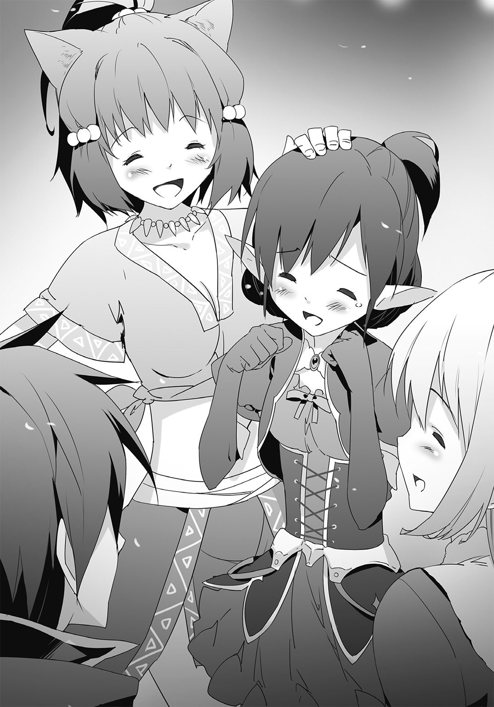
ヴェールを通しても、オレにはわかった。
目の前の相手が、こちらを真っ直ぐに見つめていることを。
「わたしは、アイリスを――」
やがて透き通るような声で、アルヴェーヌさんは言った。
オレにとって......衝撃的すぎる、台詞を。
「――娘を、この国に迎え入れます。よって、あなたの旅はここで終わりということになります」
「............え？」
自分の耳を、疑った。
「あなたには娘が随分と世話になりました。改めてお礼を申し上げます」
「ちょ、ちょっと、ちょっと待ってくださいよ」
突然すぎて、なにがなんだか。アイリスが娘？
「本当なのか、アイリス。この人がお前のお母さん？」
オレが確認を取ると、アイリスが神妙な顔で顎を引いた。
「私もはじめは信じられなかった。だが、事実だ。アルヴェーヌは......この方は、正真正銘、私の母上だ」
「ですがアイリスのお母上様は確か、あなたが幼い頃にいなくなられたとか......」
ガーネットが困惑したようにアルヴェーヌさんを見る。
「事実だ。母上はある日突然、私のもとから去った。以来、一度として会ったことがない。だが、彼女が先程、それについて私に話してくれた内容に不自然な点はない。加えてアルヴェーヌという名は父上から聞いていた」
「そうなのか。で、でも、どうしていきなりこんな真似までしてアイリスを？ あと、お前をこの国に迎え入れるってどういうことなんだ？」
まだ不明なところが多すぎる。オレが動揺していると、アルヴェーヌさんが声をかけてきた。
「混乱なさるのも無理はありません。順を追って説明致しますので、しばらくお付き合い願えますか？」
もちろん、異論はない。オレが微かに頷いてみせると、アルヴェーヌさんは顔を覆うヴェールに手をかけた。
次いで、それを――ゆっくりと上げていく。
「アルヴェーヌ様。御尊顔をこのような者達に......」
「いいのです。今のわたしは神族の女王ではなく一人の親として彼らに接しています。今まで娘を守っていただいた方々に対し、いつまでも顔を隠したままでは失礼に当たるでしょう」
止めようとしたフェイを制して、アルヴェーヌさんが微笑みを浮かべた。
一方のオレはといえば......言葉を失っている。
アルヴェーヌさんが、途方もなく、綺麗な顔をしていたからだ。
まるで美術館に飾られている女神像が命を吹き込まれたような、ある種の非現実的な趣さえあり、思わず我を忘れて見惚れてしまう。
だが目元や唇の形、少し尖った顎など、アイリスと似通った部分があるのは、なるほど、確かに彼女の母親だ。
「クロセ殿。あなたはアイリスから、わたしが彼女のもとを一方的に去ったと聞いておられるかもしれませんが、それは少し違います。わたしは、娘が物心つく前に、無理矢理引き離されてしまったのです」
「どういう、ことですか？」
オレの投げかけた疑問に対して、アルヴェーヌさんはひと呼吸置いた。そして、
「......お話ししましょう。少し、長くはなりますが」
前置きをすると、やがて静かに語り始めた。
それは、今よりずっと前のこと――。
かつてアイリスのお母さんが、まだこの国に住んでいた頃まで遡る話だった。
「当時、わたしは次代の王を担う者として厳格な父の下、この城にて暮らしていました。ファレーナは今も昔も国と呼ぶのもおこがましいほど小さなものですが、外界との接触を避け、深い山奥に位置していることから無用な争いが起こることもなく、至って平和な日々が続いていました。臣民や世話役の者達には優しい者が多く――わたしは、幸せであったのだと思います。ですが、やがて時が経つにつれ、わたしは自らの穏やかな生活に不満を抱くようになりました。城の中でのみ時を過ごし、変わらぬ毎日を繰り返すことに、段々と嫌気が差してきたのです」
......なんとなく、わかる気はする。
平和っていうのはない時には渇望するものだけど、ずっと続けば感覚が麻痺して退屈に感じてしまうものだ。
オレ達だって、何か不幸なことがあってどん底まで落ち込むと、平凡だけど幸せだった日常を取り戻したいと思うはずなのに、いざそれが手に入ってしばらくすると、当たり前になって飽きが生じ、また刺激が欲しくなってくる。同じようなものだろう。
「そこでわたしは、父や母、御目付役の者達の目を盗んでは城を抜け出し、里を見物することを覚えました。はじめのうちは、それだけでもある程度の満足を得ることはできました。ですが、次第に心の渇きをそれだけで癒やすことができなくなり、わたしは、徐々に自分の中の欲求が大きくなっていくことを知りました」
里の外に出たい。見たこともない世界を目にしてみたい。経験したこともないことを肌で感じてみたい。
アルヴェーヌさんはそんな思いを抱くようになり、やがて、大きな決意をする。
「ある日のことです。わたしは夜半、警備の網をかいくぐり、思いきって里を出ました」
初めて触れる外の世界。鳥が鳴き、葉がざわめき、風が吹く。
誰もが当然のようにして享受しているもの全てがアルヴェーヌさんにとっては新鮮で、特別で、輝かしいものに思えた。
「わたしは心地よさに包まれ、野に転がり、ひたすら開放感に浸っていました」
これが自由ということなのだ、とアルヴェーヌさんは嚙み締めていた。
ここには、自分を縛りつけるものは何もない。種族も里の掟も関係なく、ただシンプルに己と世界だけが存在しているのだと。
......でも、アルヴェーヌさんは忘れていた。
いや、知らなかったと言えるのかもしれない。
外の世界は良いものばかりがあるとは限らない。
同じくらい、悪いものがうろついているのだ。
「今でも覚えています。不意に聞こえた低い唸り声。まるで夜のしじまを裂くようにして響く咆哮が、安らいでいたわたしの心をざわめかせました」
魔獣だった。
巨大な体を持ち、獰猛な敵意を宿した化け物が、アルヴェーヌさんの前に突如として現れた。
「情けない話ですが、単なる小娘にすぎなかったわたしは腰が抜け、微動だにできませんでした。立ち向かうことなど考えもしません。ただ、ただ、恐怖に支配されるばかりだったのです」
魔獣はしばらく、涎を垂らしながらアルヴェーヌさんに狙いを定めていたが――次の瞬間、地を蹴って襲いかかってきた。
「わたしは無力さを呪い、腕で己を庇いました。悲鳴を上げ、近く迫りくる死を嘆き、怯えていたのです」
しかし、そこで奇跡が起こる。
化け物の牙がアルヴェーヌさんの肌に食いつく寸前、鋭い音と共に矢が相手の頭部を貫いたのだ。
攻撃を仕掛けたのは、ある男だった。
「野性的な顔つきではありますが、どこか品位を感じさせる立ち振る舞いをする不思議な方でした。彼はわたしを助け起こすとこう言いました。他国との交渉が終わって帰還の途にある中、あなたの声を聞き、止める皆を振り切って急ぎ駆けつけたのだと」
そのまま男性は、震え、まともに口の利けなくなっているアルヴェーヌさんが落ち着くまで、ずっと傍にい続けてくれた。
「彼が――ある小国の王子であると知ったのは、少しあとのことです」
「母上。その男性とは、もしや......」
アイリスの訊きたいことを察したように、アルヴェーヌさんは柔和な笑みを深める。
「ええ。――あなたの父上、グレディス＝ナクナ＝フェルモントです」
後に色々なことがあった、と、アルヴェーヌさんはそれだけを言った。
「詳しくは省きましょう。とかく窮屈な日々から抜け出したかったわたしはそのままグレディスについていき、様々なことを経て、彼と愛し合うようになりました。やがて結婚。わたしはグレディスと共に暮らすようになり、二度と里には帰らぬことを己へ誓いました」
理由は、アルヴェーヌさんのお腹に新しい生命――アイリスが宿ったからだった。
「たとえ故郷へ戻ったとしても、俗世との関わりを厭う神族にとって、人族と神族、両方の血を引くアイリスは異端の者でしかありません。きっと受け入れてはくれないでしょう。故にそうした決意をしたのです。里を出て数年ばかり、刺激を欲していただけのわたしは消え去り、ただあったのは、夫や赤ん坊と共に新たな地で健やかに生きていきたいという思いだけでした」
だがその、ささやかともいえる願いは、アイリスが二歳になった頃に砕け散る。
「ある日、突然――父がやってきました」
神族の前王は娘の居所をやっと摑むと、グレディスが諸事情から国を離れていた隙を狙って刺客を差し向け、半ば強引にアルヴェーヌさんを攫った。
「わたしは城の一室に閉じ込められ、昼夜問わず泣き崩れましたが、父は決して許してはくれませんでした。そうして、長い、長い時が流れます」
アルヴェーヌさんはひどいショックから立ち直り......全ては一時の幸せにすぎなかったのだと自らに言い聞かせ、諦め、放心状態となっていた。
状況が変わったのは、つい数カ月程前のことだ。
「先程もお話ししましたね。父が――前王が、死んだのです」
これにより、王位はお父さんからアルヴェーヌさんへと移譲された。
「わたしはようやく、父の支配から真の意味で解き放たれたのです。そこで部下に頼んで調べてみれば、帝国が暴走し、結果的に悲惨極まりない状況となっていたという事実。加えて、何よりも大事な娘――アイリスが、ガルフレアを復興するためにある少年と旅立ったということを知りました」
......以上が、今までの経緯だそうだ。
オレとしては、色々と壮大すぎて絵物語でも聞かされているみたいだけど、アルヴェーヌさんがわざわざでっち上げる意味もないから、全部現実に起こったことなんだろう。
「それで、アイリスをこの国に連れ戻したってこと？ でも、あんな乱暴な手を使う必要あったの？」
ライラが腑に落ちないといった表情で唇をすぼめる。
「それに関しては謝罪致します。ただこの国の場所を神族以外の者に知られるわけにはいきませんし、だからといってアイリスのみを連れてくることも、難しいように感じられたので」
まあ、そう言われればそうかもしれないけどな......。
いきなり神族が現れてアイリスだけを招待したいと言っても、彼女が警戒し、拒否することも考えられた。母親が待っていると言われたところで、素直に信用するかどうかは不明だ。あるいは、オレやガーネット達が怪しいと思って止める可能性もあった。
とはいえ、ちょっとすぎた手段だと思わなくもないし、オレ達まで連れてくる必要があったのかは謎なところだけど。
「でも、アイリスをこの国に迎え入れるって、どういうことなんですか？」
「簡単な話ですよ、クロセ殿。アイリスはわたしの娘です。ならばこのファレーナで暮らすというのが道理でしょう」
「ですがアルヴェーヌ様。先程、あなたはアイリスが神族と人族の間に生まれた子であるが故、この国では受け入れてはもらえないと仰いましたが」
ガーネットの指摘に、アルヴェーヌさんは目を細めた。
「それは昔の話です。今、このファレーナを統治しているのはこのわたし。で、あればわたしが特例を出せば認められます」
うーん。わかりやすい話って言えばそうなんだけど。
ただ重要なことがある。
「アルヴェーヌ様、アイリスは今、帝国を救うための旅の途中です。この国に住むということは、ガルフレアはどうなるんでしょう」
「訊かなくてもわかることをわざわざ問うな。我が国がガルフレアと国交を結ぶことはありえない。となれば残る三国とやりとりをしながら、立て直していくしかあるまい」
フェイが不愉快そうにオレへ言ってきた。
「フェイの言う通り。【四大聖国】全てとはいきませんでしたが、ティタニア、シュトルライデン、イルタインと三国まで協力関係を結んでいれば、復興は成し遂げられるでしょう」
「確かにそうかもしれませんけど......」
やっぱり納得いかない。なんか、中途半端だ。それに、
「アイリスがガルフレアに戻らなければ、帝国臣民が不安がります。彼女は帝国が元通りになった時、先頭に立つべき人なんですから」
「お前がいるだろう。英雄にして現ガルフレアの皇帝クロセリョウマよ」
「オレはあくまでも代理です。それにこちらの世界の人間じゃない」
そこまで重いことを任されても、責任を負いきれない。
第一、とオレはフェイの方を振り向いて続けた。
「さっきから聞いていればもう決定事項みたいですけど、アイリスの意志は確認したんですか。彼女がうんと言ったんですか？」
だとすれば外野がどうこう文句をつけることではないかもしれないけど――。
アイリスの様子を見たところ、どうにも、そういう感じではなかった。
「母上。母上と再会できたことは、もはや叶わぬことであると思っていたということもあり、私としても嬉しいことだ。だが――やはり私はこの国では暮らせない。私は父上に代わって最後まで帝国を導くと決めたのだ」
予想通り、アイリスは前に出て首を横に振る。
『だよな、お嬢。それでこそおれの見込んだお嬢だ』
マンゲツが褒め称えたが、オレだって同じ気持ちだ。
オレがアイリスに協力することにしたのだって、彼女にそういう強い覚悟があったからってのもあるわけだしな。
ガーネットやライラも、いつものアイリスらしい答えに満足したように、笑みを零していた。
だけど。
「――なぜ、あなたでなければならないのですか？」
アルヴェーヌさんが声色を変えず、尋ねてきたので、アイリスは目を瞬かせた。
「帝国を復興させ、導いていく役目を、なぜあなたが担わなくてはならないのですか？ アイリス」
「え、でも、それは、母上、私が父上の血を引く者で......」
「そうです。全てはそこにあるのです」
まるでアイリスの思いを覆い隠してしまうように、アルヴェーヌさんが彼女の言葉に自分の声を重ねた。
「つまるところあなたは、かつての皇帝グレディスの娘であるという理由から、帝国再興の任を遂行しているにすぎない。違いますか？」
「そ、それはそうだが......母上、どうしたのだ」
アイリスの動揺する気持ちがオレにもよく伝わってくる。
だって、そうだろう。
明らかにアルヴェーヌさんの態度が先程とは違っていた。
優しさが消え、威圧感が増したように思える。
「......可哀相に」
やがて、アルヴェーヌさんは哀れむように言った。
「アイリス、あなたはグレディスがいなくなった今ですらも、帝国の呪縛に囚われているのですね。だからそのようなことを口にするのでしょう」
「呪縛、だと......？」
アイリスが信じられないといった表情をする。
「ええ。皇帝の血という忌まわしき呪いに蝕まれ、自分が全てを抱え込まなければならないと思い込んでいるのです。だってそうでしょう。どうしてわざわざまだ幼いあなたが国の責を負う必要があるのです。ここで暮らせばいいではありませんか」
静かに玉座から立ち上がると、アルヴェーヌさんがこちらを見下ろしてくる。
「ここにはあなたを害する者はいない。拒絶する者はいない。罵倒し、石を投げつけ、嘲笑う者はいない。わたしの庇護下で温かく迎え入れられ、何不自由なく生きていくことができるのですよ？ なぜ受け入れないのです」
アイリスは絶句していた。どう反応すればいいのか見当もつかないんだろう。
オレだって、そうだ。薄々勘づき始めていた。
アイリスが神族達の国ファレーナで暮らすこと。
それは、アルヴェーヌさんから娘へ出した『提案』なんかじゃない。
――『強制』なんだと。
「あなたは帝国の、皇帝の呪縛に苦しめられていることを自覚していない。わたしにはそれが悲しくてたまりません。早く救ってあげたい。母の腕の中で慈しんでやりたいのです」
「ち、違う。違うぞ、母上」
ようやく我に返ったように、アイリスは激しく手を振った。
「私は自分の意志でこうしているのだ。自らが望んで帝国を率いていきたいと思っているのだ。だからこそ反対を押し切ってリョウマをこの世界に召喚した。これは断じて呪いなどではない」
「そう思っていることこそが、呪いなのですよ」
にっこりとアイリスに笑いかけるアルヴェーヌさん。
だが、どうしてだろう。その表情にさっきと同じ印象を抱けない。
まるで――見ているこちらが凍りついてしまうような笑みだった。
「安心なさい。わたしも今すぐあなたが正常な判断ができるようになるとは思っていません。まずはこの国で過ごし、食や水に慣れなさい。そうすればいずれは自然と理解できるようになるでしょう。今のあなたが、どれほど愚かしいことをしているかを」
「......失礼ながら申し上げます。アルヴェーヌ様」
そこで、ガーネットが二人の会話に割り込んだ。
「恥ずかしながらわたくしはアイリスと出会った当初、彼女のことを疑い、ひどい仕打ちを施しました。しかし彼女は決して屈しなかった。それどころか策略にはまり危機に陥ったわたくしを、リョウマ様と共に助けてくれたのです。これは呪いなどというものにかかった人間には到底できぬ所業ではありませんか」
胸に手を当て、ガーネットは堂々と主張した。
「ティタニアの姫として保証します。アルヴェーヌ様の娘アイリスは、真っ直ぐで芯が強く、己の信念のみに従い動く者。帝国のために働いているのは、紛れもない、彼女自身の考えによるものです」
「ガ、ガーネット......」
自分のために朗々と声を張り上げたガーネットに感動を覚えたのか、アイリスは涙ぐんだ。オレも胸が熱くなる。
「――そんなことは、どうでもいいことです」
だが。アルヴェーヌさんは、一言で切って捨てた。
「あなたがアイリスをどう思っているかなど、些細な問題。根本的な証明には成り得ません。そうしたことも含めて、娘が帝国を助けなければならないという思いにとり憑かれての行動であればどうするのです」
「そ、そのような......それではどのような弁明をしても無駄ではありませんか！」
ガーネットの言う通りだ。なにもかもが無茶苦茶だ。
『アイリスが帝国に操られている』というような前提が先にあって、それ以外は受けつけないみたいじゃないか。
「はじめから話し合うつもりはありませんよ。まずはアイリスをこの国に迎え入れることが重要なのですから」
......ダメだ。これじゃ、どれだけ説得してもまるで意味がない。
「了承してくれますね？ アイリス。長い間離れていたのです。これからはゆっくり、母と過ごしましょう」
「母上......」
アイリスが悲愴に満ちた顔をして、下唇を嚙んだ。
オレだって落ち込んでしまう。だって、あんまりだ。
久しぶりに再会できた母親と娘が、まったくわかり合えないなんて。
「......さあ、アイリス。こちらに来て、母の手を取って。あなたのことを、抱き締めさせてください――」
両手を広げて、アルヴェーヌさんが要求する。
アイリスは俯いたまま、ぎゅっと拳を握った。
そして――。
「......すまない、母上」
はっきりと首を横に振り、アイリスが言った。
「母上の願いには応えられない。私は帝国のために我が身を尽くすと決めたのだ。だから――この国には、いられない」
震える声は、こみ上げてくる感情を必死に耐えているが故だろう。
アイリスだって、お母さんに抱きつきたかったはずだ。
十数年間の想いをぶつけたかったはずだ。
だけど、できない。
少なくとも、今の、アルヴェーヌさんでは。
だからこそ、彼女は、必死で自分の心を抑え込んでいた。
「アイリス......どうしても、駄目なのですか。母と共に暮らせないというのですか」
「ああ。無理だ」
深々と頭を下げ、アイリスがはっきりとした声で言う。
「会えて嬉しかった。だが帝国に協力してもらえないというのであれば、私がここにいる意味もない。――失礼する」
踵を返し、アイリスは力ない足取りで歩き出した。
オレは小さな背を見つめていたが、やがてガーネット達と視線を交わし、頷き合うと、彼女を追おうとする。
「......そうですか。仕方ありませんね」
だけど。オレ達は大きな失敗を犯した。
「では、最後の手を使うとしましょう」
アルヴェーヌさんのアイリスへの想いは、既に。
――通常の枠から、大きく逸脱していたのだ。
「アイリスを、捕らえなさい」
短い命令。オレ達が異変に気づき、行動しようとした時にはもう遅かった。
フェイをはじめとした神族達が音もなくアイリスへと近づき、彼女を両側から拘束する。
「なっ、なんだ!? 放せ！」
アイリスは抵抗を示すが、まるで通じることはなく、フェイが「失礼します」と断わりを入れてからアイリスの口を手で塞いだ。【魔導言語】を唱えさせないためだろう。
「ど、どういうつもりですか、アルヴェーヌ様！」
オレが振り返って尋ねると、アルヴェーヌさんは薄い笑みを浮かべた。
「呪縛とは恐ろしいものです。そう簡単にいかぬであろうことはわたしも理解していました」
聞く者に癒やしを与えるような流麗な声で、アルヴェーヌさんがぞっとするようなことを口にする。
「だからこそクロセ殿、あなた達をここまで連れてきたのですよ」
何もかもを察した。同時に、ここへ来る前に無理にでも暴れておくべきだったと後悔する。
「アイリス。――わたしに従えないのであれば、この者達を殺します」
神族達に押さえ込まれながら、母親のところまで連れてこられたアイリスの目が、いっぱいに見開かれた。
「随分と過激な真似をするんだね。......頑張ってるアイリスに呪いがどうとかふざけたこと言い出した時点でかなり頭きてたけど、これでも結構我慢してたんだよ。お母さんだしさ」
ライラが耳を立て、歯を剝き出しにして唸る。
「やれるものならやってみなよ。でも、タダでやられると思わないでね」
「やはり戦族は野蛮ですね。――いいでしょう。フェイ」
アルヴェーヌさん......いや、こうなったらもう敬称なんてつけてられない。
彼女はアイリスのお母さんではあるけど――同時に今、こちらを害する敵になってしまったのだから。
アルヴェーヌから目配せをされたフェイが頷き、アイリスを別の神族に託すと、数人と共にオレ達を取り囲んできた。
「足搔けるものなら足搔いてみるがいい。大人しくしていた方が苦しまずに死ねるとは思うがな」
羽織っていたローブを翻したフェイの手には、長剣が握られていた。他の者達も同様、槍や鉄槌、ナイフ、弓を手にしている。
『相棒。安心しろよ、いざという時には壁を張る。お嬢を取り戻そうぜ』
「......ああ。頼りにしてる」
マンゲツに告げながらオレはそれでも不安を隠せなかった。
手持ちの武器がない。どうにかして連中のを奪わないと。
「やりなさい。少し傷でもつけてやれば、アイリスも目を覚ますでしょう」
アルヴェーヌが指示すると、アイリスが焦ったように、くぐもった声を上げた。が、言葉になっていない。口を塞がれているためだ。
「......御意」
短くフェイが返事をして間もなく――。
戦闘が、始まった。
瞬間、前へと出現した刃に、オレは目を瞠る。相当に速い。
かろうじて地面に手をつくと、左手に転がった。フェイは踏み込みと同時に、即座に方向を変えて切り込んでくる。低く跳躍しながら後方へと逃れ、一撃、一撃を避けていった。
『兄弟、防御壁を張るか!?』
マンゲツが尋ねてくる。だが、オレは無言で首を横に振った。
マンゲツの技は強力だが大量の魔力を消費するため、連続して使うことができなかった。いざという時までとっておくべきだ。
ロザリとの訓練を思い出しながら、顔のすぐ傍を掠める剣をなんとか避けていく。
だがいつまでも受け手に回っているわけにはいかなかった。オレはわずかに息を吸い込むと、タイミングを見計らい、右腕を突き出す。
ちょうど得物を振り下ろした直後だったフェイの手首に指を絡ませると、そのまま力を込めて捻った。目の前で相手の顔が驚愕に染まり、体勢が崩れる。
この隙を逃さず、手を放すと身を傾け、オレは思いきりフェイにぶつかった。
向こうがよろめき、ふらついたところで、掌を翳す。
「【紅蓮の竜となりて、この者を灼熱へと連れ行け】！」
魔導言語の詠唱。爆発的な勢いで炎が肥大化し、フェイへと襲いかかった。
威力は抑えているものの、喰らえば火傷でまともに戦ってなどいられないだろう。これで一人はなんとかなった。あとは彼女の部下を倒すだけだ。
オレはそう思っていた――が。
「【輝きよ。剣となりて邪悪を切り裂くが良い】」
奇妙な旋律の言葉が奏でられ、フェイの周囲に光が集結した。それはひと塊となってオレの生み出した炎を貫き、霧散させる。
「輝術で魔法を......!?」
「魔力を消し去るんだ。少しやり方を変えればこの程度のことはできる」
フェイが踏み込んでくると、剣を一閃させた。オレは反射的に地を蹴って離れており、ギリギリのところでかわすことに成功する。
『妙な芸当をしやがる。これじゃ本当にこっちの対抗手段が一つもないことになるぞ！』
マンゲツが焦ったように言った。
「待てよ。魔法が無効化される――」
オレは、フェイと対峙しながら、そこから導き出される事実にぞっとする。
「――ガーネットッ！」
急ぎ叫んで視線をやると、案の定、そこには神族によって追い詰められたガーネットの姿があった。
魔法が通じない以上、彼女が身を護る術はほとんどない。
「どけ、フェイ！」
横薙ぎにされた剣身に拳を当てると、オレはそのまま刃を反らした。接近してから至近距離で胸ぐらを摑み、床に向かって叩き落とす。
「ぐっ......！」
後頭部を打ったフェイが痛みに顔を顰めているうち、横をすり抜けてガーネットのもとへと向かった。
二人の神族が迫り、彼女に向かって一人が槍を突き出し、もう一人が弓を放つ。
「【疾風よ。その荒々しき身を躍らせよ】！」
オレは手を振り払い、嵐の如き衝撃波を放った。横から不意打ちで喰らわせたために、輝術を使う暇がなかったのか、二人は吹き飛ばされる。
「ガーネット、大丈夫か!?」
オレはガーネットの前に立つと背中越しに尋ねた。
「は、はい！ 申し訳ありません、魔法を封じられ、戦う術がなくなってしまい......」
「気にしないでいい。お前はオレが守る！」
宣言すると共に、声がかかった。
「リョウマ、これ使って！」
飛来する影を見定め、摑み取る。神族達が使っていた長剣だった。
声のした方を見ると、ライラが素手で神族を打ち倒し、武器を奪い取っている。
彼女もまた鉄槌を取ると、振り回し、構えを取った。
「さすがだな。ありがたく使わせてもらう！」
フェイが再びオレの方へと向かってくる。彼女が剣を振るうと同時、オレもまた真っ向から刃を斬りつけた。
鋭い金属音が響き渡る。
「これで互角の勝負ってわけだな。悪いが手加減はできないぞ」
「......面白い」
フェイが口端をわずかに歪め、一旦引き戻した得物を、息つく間もなく繰り出してきた。
突き出された切っ先に己の刃を絡め、弾き飛ばす。間合いを詰めると、オレは剣身を跳ね上げた。
だが、切り裂いたのは虚空。動きを予測していたのかフェイは既に攻撃範囲の外にいた。
振るう。振るう。振るう。
一見無造作ながら、無駄のないアクションで、フェイがオレを攻め立ててくる。
防御し、受け流し、オレは前に出た。
上段から刃を振り下ろされたが、オレが懐へと踏み込む方が先だ。剣を振るい、弧を描くように斬りつけようとした。
が、そこへ先程オレが吹き飛ばした二人が戻ってくると、槍を突き出し、矢を打ってくる。オレは舌打ちして前に倒れ込み、双方をかわした。
「背中ががら空きだぞ、英雄！」
身動きの取れないオレに向かって、フェイが剣を突き刺そうとしてくる。
「――どうかな」
オレは、不自然な体勢のままで持っていた剣を無理矢理に薙いだ。
フェイの足首から血飛沫が上がり、苦痛の声が漏れた。と同時に相手の攻撃が中断されたのを感じる。
地面に手を突いて起き上がりざま、オレは刃を横にすると、平たい部分を振り被った。
遠慮なく、それを、相手に向かって叩きつける。
「がっ......！」
短い言葉を吐くと、フェイがふらふらと頼りない動きを見せた。止めに足払いをすると、彼女はそのまま倒れ込む。
「貴様、よくもフェイ様を......！」
二人の神族のうち、一人が弓を引き絞った。しかし、それは放たれる前に強制的に止められる。
矢を持った手に、ガーネットが嚙みついたからだ。相手がこちらに気を取られている間に近づいていたのだろう。
「魔法が使えなくても、これくらいはできます！」
なんとか引き剝がそうとする神族に対して、ガーネットは文字通り、喰らいつき続けた。
『......割と野性的なところがあったんだな、ガーネット』
「オレも初めて知ったよ。だけど、悪くない！」
マンゲツに答えながら、オレは背後から肉薄していた神族の槍を避け、裏拳で殴りつける。
「ガーネット、下がってくれ！」
オレが声をかけるとガーネットは頷き、急いで相手から離れる。
その時にはもう、オレは飛び上がり、フェイと同じように刃を横にした剣で相手の頭蓋を打っていた。
よし、これで全部だ。片づいた！
「ライラは......！」
と、確認するために振り返ったが、確認するまでもなかった。
「まあ、なかなかやるけどまだまだだね。武器を使った戦いで戦族に勝とうなんて百年早いよ」
余裕綽々といった態度で、倒れ伏す神族達の中心にいるライラが、腕を組んでいたからだ。
「で、ご自慢の部下は全員のしちゃったけど、どうする？ まだやるの？」
挑発的な物言いで、ライラがアルヴェーヌに呼びかけた。
「......さすが、というべきでしょうか」
アルヴェーヌは嘆くように息をつく。
彼女は部下達を眺めていたが、しばらくすると、手を上げた。
「仕方ありませんね。ここは諦めましょう」
オレは眉を顰めた。アルヴェーヌの顔には未だに笑みが浮かんでいる。どう見ても、窮地に追い込まれた人のそれじゃなかった。
「やはり部下達だけに任せるべきではありませんでした」
淡々と述べてから、アルヴェーヌがオレ達に向かって言い放つ。
「――わたしが、直接手を下すことにしましょう」
口元が何かを紡ぎ出そうとした。オレは嫌な予感を覚え、止めるために走り出す。
だが、もう遅い。アルヴェーヌが唱えた。
「【汝は我。我は汝。その全てはこの指先に】」
まるで誘うようにこちらへと差し出された掌に、仄かな光が宿る。
球体をした輝きは、無数の針にも似たものを生み出した。
それは凄まじい速度で空を渡り、瞬時にオレの体を幾つも貫く。
途端――オレは、異変に気づいた。
「な......っ!? なんだ、これは......！」
前に進むことができない。
何かに拘束されている様子はなかった。それなのに、まったく動けない。
いや――正確に言えば動こうと思っているのに、体が言うことを聞いてくれないのだ。
まるで首から下が別物になってしまったかのようだった。
「ど、どうして......これは、魔法なのですか......!?」
ガーネットに続いて、ライラも悔しげに唸り声を上げている。多分、オレと同じ目に遭っているのだろう。
「魔法ではありません。これも輝術です」
にこやかなままで、アルヴェーヌが口を開いた。
「あなた達、部屋にいた時、外に出ようとしても出られなかったのではありませんか。鍵がかかっている様子がないのに、扉が開かなかったでしょう」
「あ、あれも輝術だっていうのか......!?」
オレの質問に対して、アルヴェーヌは穏やかに頷く。
「輝術は正確に言えば魔力を消し去るのではありません。その根源的な部分に作用し、使い手の思うように操るのです。故に極めれば、先程のフェイのように魔法を消し去ることをはじめとして、相手の体を巡る魔力を使い、意識に直接働きかけて行動を自在に操ることも可能。あなた方が扉に鍵がかかっているように思い込んでしまったり、窓から出られなくなったりしてしまったのも、そのため」
「......待てよ。じゃあ、今も輝術を使ってオレ達の体を無理矢理止めてるっていうのか？」
オレの問いかけに対し、アルヴェーヌは、笑みを浮かべたまま首肯した。
「そ、そんなの、滅茶苦茶だよ......！ なんでもありじゃない......！」
ライラが思うようにならない自分の身に苛立つように言った。
「フェイよ。起きなさい。まだ死んではいないはずです」
アルヴェーヌの呼びかけにより、しばらくしてから、フェイが体を起こす。
頭を振りながら、息をついたあとで、アルヴェーヌへと頭を下げた。
「さあ。再び剣を持ちなさい。わたしが止めているうちに、彼らを」
「――御意」
転がっていた剣を拾うと、フェイがゆっくりと近づいてくる。
『おい、なんだよ、こんな展開ありかよ！ くそ、いいぜ、上等じゃねえか。こうなったら、おれが限界まで防御壁を張って――』
「【神よ。愚かな全てを削ぎ取りたまえ】」
アルヴェーヌによって一筋の光が投げられた。
それはマンゲツが最後まで言い終わらないうちに――オレの鎧に当たって砕け散る。
沈黙が、下りた。
「......おい、マンゲツ？」
噓だろ、と思いながら声をかけるが、いつもの軽快な返事はない。
いや、それどころじゃなかった。常に鎧の表面にあった顔文字のような紋様までもが消え去っている。
「マンゲツ!? どうしたんだ、マンゲツ！」
「無駄です。彼には眠ってもらいました」
アルヴェーヌがあくまでも落ち着いた口調で告げてきた。
「聞いたところによると魔力で動く鎧のようですね。となればその生命の源を断ち切ればいい。永遠に、とはいきませんが一時的には黙らせることができるでしょう」
「そん......な......」
いつもオレの傍にいて、守ってくれた相棒が、こんなにあっさりやられるなんて。
もう、駄目なのか。終わりなのか。
「――残念だったな」
フェイの言葉と共に、オレの腹を何かが通り抜けた。同時に内側から熱が溢れ、激しい痛みが生じる。
「ぐ......がああああああああ！」
剣を突き刺されたのだと感じたのは遅れてのことだ。オレは絶叫し、身をよじろうとしたが、できたのはただ奥歯を食いしばることだけだった。
「リョウマ様！ いやぁ――ッ！」
ガーネットの悲痛な声が木魂する。
「やめて！ やるならあたしの方をやってよ！ リョウマを狙わないで！」
ライラが叫ぶも、フェイは刃を引き抜いて、鼻を鳴らした。
「ダメだな。アイリス様はクロセリョウマをお前達の中で一番頼りにしていたようだ。だとすれば痛めつけて効果があるのはこいつだろう」
続いて腕の辺りで痛みが弾けた。オレは再び苦悶の声を上げ、顔を顰める。
傷口から大量の血が溢れ、床を赤く汚した。
「や......やめろ、やめてくれ......」
視界の中で拘束から解放されたアイリスが、震える声を出す。
彼女はふらついた足取りでオレの方に向かうと、場に跪いて手を合わせた。
「頼む。リョウマを傷つけないでくれ......！」
「――やりなさい」
アルヴェーヌの無情な一言。フェイが刃を音もなく振るった。
胸から脇にかけて火傷でもしたような衝撃が起こり、脳を焼くような激痛がオレを苛んだ。
「......が......あ......ああ......ッ！」
オレはどうにかなりそうになりながらも、必死に声を抑えた。オレが無残な姿を曝せば、アイリスはきっと動揺する。脅しに負けてしまうかもしれない。
そんなことをさせてたまるか。
耐えてやる。耐えて耐えて、耐え抜いてやる。
「志は立派だが、どれほど持つかな」
オレの胸中を見抜いたかのように、フェイが冷笑を浮かべた。
そして――一閃。
オレの体にまた傷が刻まれ、目の前が真っ白になった。
しかし今度は痛みを実感する間もなく、目の前で何度も刃が舞う。
血飛沫が散乱し、オレの意識を奪い取ろうとする。
「やめてくれ！ 母上！ お願いだ！ リョウマが死んでしまう！」
アイリスは這うようにしてアルヴェーヌに縋りつくと、涙を流して懇願する。
「ではアイリス。母と共にこの国で暮らしますね？」
アルヴェーヌは笑顔のままだ。それを見て、意識が朦朧とするのを感じながら、オレは心底から恐怖を覚えていた。
この人はもう、自分が何をしているかわかっていないんだ。大事な娘に何を味わわせているかすら――理解、できていないんだ。
「あなたが、はい、と言うのなら、すぐに彼らは解放しましょう。傷の手当てをし、里の外まで送ります」
「だ、だが、私は......」
「いいえと言うのなら、今の状態を続けるだけです。クロセ殿に限界が訪れれば、次はガーネットにしましょうか。その次はライラです。あなたが了承しなければ、仲間が次々と傷ついていきますよ」
猟奇じみた言動を、何の不自然もないというように、アルヴェーヌは口にする。
「ごめんなさいね、アイリス。でも仕方がないのです。全てはあなたのため。帝国に縛られているあなたを救うためです。許してくださいね」
「......わ......私は......」
アイリスは崩れ落ち、蒼白になった顔で、自分の両手を握った。
「私は、ただ、帝国を......」
「もういいではありませんか、アイリス」
そんなアイリスへ、実の娘へ、アルヴェーヌは語りかける。
「諦めなさい。何もあなたが背負う必要はないのです。好んで逆境に抗うことなどないのです。安寧に身を委ねなさい。平穏を無上の喜びとしなさい」
殊更に優しげな眼差しを向けたままで。
「全てはわたしが整えてあげましょう。あなたにとっての――理想郷をね」
オレは、目を閉じた。荒く息をつきながら、考える。
体が冷えているのは、血を流しすぎたためだろうか。
あるいは怒りを通り越して、呆れ果ててしまったためだろうか。
いや、そんなもの、どっちだっていい。どうだっていい。
今重要なのは――他にあった。
「......ふざけるなよ」
ぽつりと漏らした。フェイが何度目かの攻撃を仕掛けようとした手を止める。
「ふざけたことばっかり言ってるんじゃないぞ」
顔を上げたオレと、アルヴェーヌの目が合った。
「アイリスが帝国に囚われてる？ あんたそれ、本気で言ってるのか」
「......ええ、勿論」
「彼女は自分の意志で全てを行ってきたんだ。どんな辛いことがあっても、誰に何を言われても。前を向いて、目を合わせて、自分の想いを伝えてきた。それを呪いのせいだと？ 馬鹿を言うのも大概にしろ」
「それも含めて呪いなのですよ。だからこそわたしはこの子を――」
「あんたに一体、なにがわかるっていうんだッ！」
部屋中にこだまするほど大声を上げた。傷に障るが知ったことじゃない。とにかくもう、むしゃくしゃしてどうしようもなかった。
「オレは見て来たぞ。アイリスと一緒に旅をして、傍でずっと、彼女の全てを。この子がどれほど帝国のことを案じていたと思う。住んでいる人のためにどれほど尽くしてきたと思う。色んな人達に怒りをぶつけられても受け入れ、頼りにした人達から難題を吹っかけられても挑んできた。傷ついて、苦しんで、それでもガルフレアのために身を粉にしてきたんだ。あんたはそれを知ってるか。直で見たのか。聞いたのか」
許せなかった。たとえ相手がアイリスの母親だったとしても。いや、だからこそ。
「勝手なことばっかり抜かすなよ。アイリスはアイリスとして生きるために今までやってきたんだ。それを呪いだなんだのと片づけるのは、オレが絶対に、認めない！」
「リョウマ......お前は......」
アイリスが口元に手を当て、涙ぐんだ。オレはそんな彼女に微笑みかける。
「屈するな、アイリス。オレに協力してほしいと言った時のことを思い出せ」
あの時の、お前の、決意に満ちた顔を。
「お前がお前であることを――絶対に、捨てるな！」
渾身の叫びが、広い室内に満ちていった。
アイリスは虚を衝かれたように、ずっと目を見開いている。
でもしばらくすると、俯き、服の裾を強く握ると、か細い声を漏らした。
「......ありがとう」
目元を拭い、アイリスは顔を上げる。もうそこに、先程までの怯えはない。
「リョウマ......お前はやはり、いつも私に力をくれるんだな」
彼女は口元を緩ませたまま、ゆっくり母親であるアルヴェーヌを見上げた。
やがて、確固とした調子で言い放つ。
「――母上、すまない。やはり私はこの国には住めぬ。やりたいことがある。やらなければならないことがある。だから......従うことはできない」
「......そうですか」
アルヴェーヌが深い息をつく。彼女はまるで無知蒙昧な輩を憐れむようにしてアイリスを見下ろすと、
「これだけやっても目が覚めないのであれば致し方ありませんね。――フェイ、心臓を貫きなさい」
「なっ......ま、待ってくれ、母上。それではリョウマが死んでしまう！」
「あなたが殺すのですよ、アイリス。あなたが大人しく従わないから」
あくまでも慈愛に満ちた表情を浮かべながら、アルヴェーヌはオレを指差してくる。
「ここで――英雄クロセリョウマは、死ぬのです」
フェイが剣を肩に担いだ。オレを真っ直ぐに見据えてくる。
「悪く思うな。これで最後だ」
まずい。なんとかしないと。でも、マンゲツもいない今、どうすればいいんだ!?
「リョウマ様！ ダメです！ やめなさい！ リョウマ様を殺めなどしたらどうなるかわかっているのですか!? ティタニアは全戦力を挙げてこの国に攻め入るでしょう！」
「シュトルライデンもだよ！ 絶対に容赦なんかしないからね!?」
ガーネットとライラが口々に止めようとするが、フェイは薄笑いを浮かべたままだ。
「安心しろ。ここで全員殺せばこのことも知られまい。いずれ全員、旅の道中で野たれ死にしたことになるはずだ」
ゆっくりと得物を構え、オレに狙いを定めるフェイ。
......駄目だ。死ねない。
こんなところでやられたら、アイリスがどれだけ自分を責めると思う。
いや、それだけじゃない。せっかく乗り越えたのに、また自分の気持ちを抑えこんで、母親の言うことを聞いてしまうかもしれなかった。
そんなことさせるものか。絶対にやらせない。
でも、このままじゃ到底――。
「......さて、行こうか」
フェイが足を踏み出す。それと共に剣を、真っ直ぐにオレの胸へと突き出してきた。
「リョウマ！ ダメだ......！」
アイリスが魔導言語を紡ごうとするも、後ろの神族にまた摑まってしまう。
「リョウマ様......！」「リョウマッ！」
ガーネットとライラの声が鼓膜を打った。
オレは肉薄する切っ先を前にして、ただ、不甲斐なさに目を閉じるしかない。
これまでなのか。これで――本当に、終わりなのか......!?
「リョウマッ！」
声が、した。聞き覚えのある声が。
だが、アイリスのものじゃなかった。
――刹那。爆撃音が、響き渡る。
フェイが小さく悲鳴を上げた。
突如として起こった異変と、いつまで経っても予想していた痛みがやってこないことを訝しみ、オレは目を開ける。
すると――見えた。
目前で仰向けにフェイが倒れ、その体から煙が噴き出ている。
剣は投げ出され、床に転がっていた。
「え......どう......なってんだ？」
思わず呟いたオレの真横を何かが過ぎる。影は真っ直ぐにアルヴェーヌへと向かい、やがて――閃光。
すぐさま爆裂し、濛々と煙を噴き上げた。
アルヴェーヌが戸惑うような声を漏らし、腕で己を庇ったまま退く。
と、同時にオレは糸が切れたように体が自由になった。恐らくは術者の集中が途切れたから効果がなくなったのだろう。
「リョウマ様！」
駆け寄ってきたガーネットがすぐさま治療魔法をかけてくれる。先程まであった痛みが噓のように消えていった。
「ありがとう。でも、さっきのは誰が......」
「やれやれ。苦労させてくれたよ」
ぼやくように言ってこちらの傍に立った人物を見上げ、オレは息を呑んだ。
藍色の長い髪。ふてくされたような顔。小柄な体。......間違いない。
「ココ......ココなのか!?」
どうしてこんなところに。いや、その前に、どうやって!?
オレの疑問を見抜いたように、ココが口端をわずかに上げる。
「キミ達が連れ去られる前に、ある道具を仕掛けておいた。ボクが開発したもので、身に着けている相手の魔力をこのゴーグルを使えば辿ることができる」
どことなく得意げに言って、頭につけた分厚いゴーグルをココが叩いた。
あ、もしかして、あれか？ オレはポケットをまさぐった。
ここで目が覚めた時に見つけた豆粒大の何かを取り出す。
「そう、それ。試作品だから上手くいくかどうかわからなかったけど、どうやら効果は上々のようだね」
手に持った【魔導砲】を振り回すと、ココは懐に入れた。
「へえ......大したもんだな。でも、それにしたってお前がどうしてここまで......一人なのか？」
「生憎とね。他の人達を募る時間がなかったもので」
「どういう風の吹き回し？ 君が誰かのために無茶をするなんて」
ライラが眉を顰める。いや、確かにそうだ。
よくよく見ればココの服はボロボロで、あちこち擦り切れていた。ここへ来るまで神族がたくさんいただろうし、辿り着くには並大抵の労力じゃなかっただろう。普段の彼女からすれば考えられない行動だった。
「......自分でも驚いたんだけどね」
鼻の頭を搔きながら、ココは少しだけオレの方を見てくる。
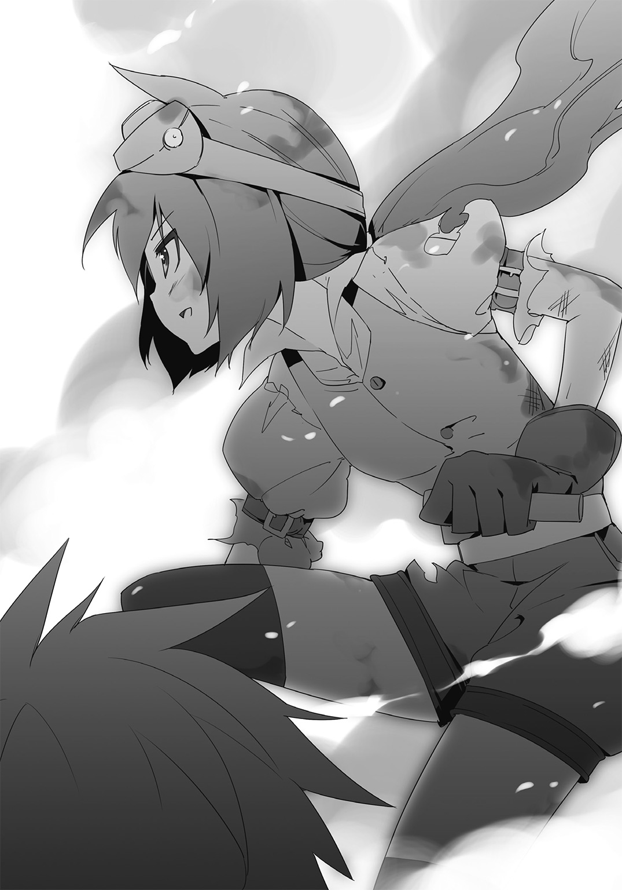
「キミ達が神族に連れ去られた時、詳細はわからないけど危ないかもしれない、と思ったら、自然とそうした選択を取っていた。その......まあ、リョウマには【百年獣】のところで助けてもらった借りがあるし、なんていうか、それを返さないままになってしまうかもしれない、なんて考えると......たまにはこういうのもいいかなと思ってね」
「......ふーん。それも合理的な考え？」
ライラがにやにや笑うと、ココは頰を赤らめ、そっぽを向いた。
「当然だろう。別に、百年獣でのリョウマの行動に感化されたわけではないよ。決してない」
「......そうか。ありがとうな、ココ」
「おかげでリョウマ様が危ういところで助かりました。心より感謝します」
オレやガーネットから礼を言われて、ココは咳払いし、頭を搔き回す。
「ココ！ すまない。お前がいなければどうなっていたことか......！」
アイリスが言って、こちらに駆け寄ってこようとした。
が――その前に、フェイが目を見開くと、素早く体勢を立て直し、彼女を抱き止める。
オレは取り戻そうと動いたが、間に合わず、再びアイリスはアルヴェーヌのところへと連れていかれた。
「......手間をかけさせてくれますね」
アルヴェーヌが顔を手で覆いながら、怒りを滲ませたような声で言う。
「ですが、誰が現れようとも無駄な足搔きです......！」
再び掌に生まれる球体。光は針を吐き出し、オレ達を操ろうと空を走った。
そして――。
『っしゃらああああああああああああああああっ！』
目の前で展開された壁に弾かれて、消える。
『っざけんな、この野郎が！ 輝術だろうがなんだろうが、初めに物理的な攻撃に委ねるならおれの出番だろうがッ！』
復活したマンゲツが、高らかに声を上げた。
「マンゲツ！ やっと起きたか！」
『おうよ、兄弟！ 心配かけたな。もう大丈夫だ！』
元気のいい答えに、オレ達は歓喜する。
「皇帝の造りし魔の鎧――おぞましい。ならばフェイ、あなたの手で葬りなさい」
アルヴェーヌの命により、フェイが頷きと共に動き始めた。オレは対抗するためにさっきまで使っていた剣を構えたが、
「リョウマ。そんなしち面倒くさいやりとりをする必要はないよ」
ココが横で言ったので、怪訝な顔を向ける。
「どういうことだ。何か作戦でもあるのか？」
「ボクがただキミ達を助けに来ただけだと思ってるのかい？」
オレの目を見て、ココは、わずかではなく――確かな笑みを零した。
「呼びなよ、新しく生まれ変わった、キミのもう一つの相棒を」
「え、あるのか。ここに!?」
「いや、重いからオレクに置いてきた」
「それ駄目だろ!?」
あいつは範囲外だと応えないはずだぞ。
「問題ないよ。生まれ変わった、と言っただろう？」
オレにそう返すと、ココは座り込み、欠伸を嚙み殺した。
「ボクは疲れた。ここで休んでるよ。あれが誰だか知らないが、早く片づけて帰ろうじゃないか」
簡単な使いでも頼むような口振りのココに対して、呆気にとられていたオレだったが、
「リョウマ様、前を！」
ガーネットの焦った声に我を取り戻し、慌てて肉薄してくるフェイの刃を防いだ。
ぎりぎりと音を立て、数度の攻防を経たあと、強引に相手を弾く。
距離が空いたところで、オレは思考を巡らせた。
でも本当なのか。ここに来るのか？
オレはココへと視線をやった。でも彼女は泰然と座ったままで事の成り行きを見守っている。
......どうする。
フェイは少しずつ、だが確実に距離を詰めてきていた。恐らくは間もなく攻撃を仕掛けてくるだろう。このままじゃどうせじり貧だ。
だったら――。
「リョウマ、あたしも協力を......」
「いや、いい」
ライラが申し出てくるのを遮り、オレは柄を握る手に力を込めると、
「――オレ一人でやれる」
剣を明後日の方向に放り投げた。
「リョウマ、何をするつもりだ!?」
アイリスが愕然となるのにも無言のまま、呼吸を整える。
「血迷ったか。まあいい。事が早く済むのは何よりだ」
フェイが冷酷な眼差しを向けてきて、身を沈めた。
――来る。
予感通り、まるで弾丸のようにしてこちらへと接近してくる。
剣が大気を裂いて掲げられ、オレに向かって振り落とされた。
だがオレは何もしない。ただ佇んで、時を待った。
「リョウマ様！ 危ないです！」「なにしてるの、リョウマ！」「リョウマ、避けろ！」
周囲から次々と声をかけられるが、一切応えない。
そして、刃が、躊躇いなど覚えるはずもなくオレの眉間へと到達する――。
間際。
「リベリオン......」
オレは、迷いなく真っ直ぐに、敵に向かって手を翳した。
「......来い......ッ！」
風がなびくような音がする。轟々と唸り、全てを薙ぎ払う強い風が。
刹那、アルヴェーヌの背後にあるステンドグラスが大きく砕け散った。
陽光を受けて煌めく欠片が舞う中を、一筋の銀光が駆け抜ける。
それは呼ぶがまま、求めるがまま、全てをかけてやってきた。
使い手である、オレの、もとへ。
耳障りな金属音。
フェイの顔色が変わった。
彼女の剣は、真っ向から受け止められている。
オレの眼前へと突き立った――一本の、美しい剣に。
「ははっ......本当に来たのかよ」
これが進化した魔法剣リベリオンってわけか。
「さあて......」
柄を握り、オレは自分の得物を引き抜いた。
馴染んだ感触に笑みを零しながら、フェイとアルヴェーヌに向かって宣言する。
「それじゃあ、ここから反撃開始といこうか！」
オレは思いきり魔法剣を振り上げると、強く呼びかけた。
「ぶちかませ――リベリオンッ！」
真下に向かって大気を一刀両断する。
直後、凄まじい熱量を持つ漆黒の輝きが床を走った。
オレの魔力を物理的な現象として変換したリベリオンの一撃が、フェイを正面から打ちのめす。
一度は得物で受け止めものの、耐え切れたのはほんのわずかにすぎなかった。
フェイの持つ剣の刃が粉々に砕け散り、彼女は轟風に巻かれたように吹き飛ばされる。
壁に強く背を打ちつけたフェイは、そのまま、気を失ったように頭を垂れた。
「さすがリベリオン！ リョウマと組めば無敵だね！」
ライラが自分の成果のように喜び、手を叩いてくれる。アイリスが、やっと笑顔を見せてくれたのが嬉しかった。
オレは息をつき、アルヴェーヌを睨みつける。
「さあ、どうする。頼りになる部下は今度こそいなくなったぞ。降参するか？」
アルヴェーヌは沈黙を保ったままでオレを見返してきた。瞳の奥にどんな感情が宿っているのかは読み取れない。
「何度も同じことを言わせないでください。アイリスはわたしが預かります。あなたには渡せません」
『しつこいぞ、てめえ。母親だかなんだか知らねえが、お嬢はお前の所有物じゃねえんだ！』
「マンゲツの言う通りだ。アイリスはアイリスの道がある。それは誰であろうと邪魔できない！」
言い切ったオレに対してアルヴェーヌが目を閉じた。しばらくしてから声を漏らす。
「わかり合えないのであれば対立するしかありません。どうしても娘を取り戻したいというのであれば、わたしを倒しなさい」
「母上！ もう無理だ。お願いだ。受け入れてくれ。私は母上と共に暮らせない！」
「――いいえ、アイリス。あなたはわたしと暮らすのです」
アイリスの必死の願いも虚しく、アルヴェーヌは決して自分の主張を譲らなかった。
「十数年ですよ。あなたにとってもっとも大事な時期にわたしは共にいることができなかった。それがどれほど悲しいことであったか。わたしはもう二度と、あなたを手放したくはないのです、アイリス」
アルヴェーヌの掌が、アイリスの頭をゆっくりと撫でる。
気持ちがわかるだけに、オレも胸が痛んだ。
なにが悪いなんて、一概には言えないだろう。
彼女はただ娘と生きたいだけなんだ。だけど、そんな当たり前のことがかなわなかったから、壊れてしまった。
求めても求めても得られなかったものがある時、人は時に過ちを犯す。
かつて、力を得ようとするあまり魔神を召喚してしまった皇帝グレディスのように。
でもそれは、許しちゃダメなことなんだ。
少なくとも――誰かを悲しませている、以上は。
「......わかった」
オレはリベリオンを正眼に構えると、言い放った。
「これ以上の説得が無駄だっていうなら――オレがあんたを止める。力ずくで、無理矢理にでも！」
できるのがオレしかいないっていうなら、やってやる。
三年前と――同じように。
「リベリオン――行くぞ！」
刃が漆黒の光を纏った。煌々とうねる輝きを浴びながらオレは、踏み込むと同時に、自分のもう一つの相棒を振るう。
衝撃が空を切り裂いていった。アルヴェーヌ目掛けて、牙を剝く。
しかし、寸前、アルヴェーヌの口が動いた。
「【光よ。我が前に全てを回帰させよ】」
白い煌めきが弾ける。瞬間、オレの放った光が弾け飛んで宙に散った。
「防がれた......リベリオンの力が!?」
驚愕すると共に、アルヴェーヌの体から純白の輝きが立ち昇る。
「わたしを誰だと思っているのです。代々、神族の長は特別に強い輝術を扱う。それはアラムヴェルトの寵愛を一身に受けた証でもあります」
次々と生み出される光が、それぞれに形を変えてオレ達を狙った。
「何度やっても無駄です。魔神から生まれた力など真なる創造主の御力の前では塵に等しい。どれほどあなた達が足搔こうとも、わたしが全て無にして差し上げましょう」
そんな......じゃあ、剣で直接切りつけるしかないのか。
でも、そうすれば恐らく、輝術の餌食になってしまう。
それに――仮にそっちがなんとかなったとしても、代わりにアルヴェーヌを深く傷つけてしまうことになってしまったら......。
たとえ暴走してしまっていても、アイリスにとって唯一残った肉親だ。
この期に及んで甘い考えかもしれないけど――やっぱり、命を奪いかねないような真似はしたくなかった。
「何を迷っているのです。わたしを止めたいのであれば殺しなさい」
凍てつくような微笑を浮かべながら、アルヴェーヌがオレを挑発する。
彼女にはわかっているのだ。オレにはそれができないと。
「早くした方がいいですよ。そこの少女が侵入してきた以上、異変に気づいた者も少なくないはず。間もなくここへ、他の大勢の神族がやってくるでしょう。そうなればいかに英雄であるクロセ殿でも潜り抜けられるかどうか」
「......くっ」
悔しいけど、アルヴェーヌの言う通りだ。もしそうなったら相当にまずい。
オレは自分の中に湧いた葛藤と必死に戦っていた。
「......いいのだ。リョウマ。もういい」
すると――アイリスが不意に、儚い笑みを浮かべる。
「私自らがやる。お前に手は出させない」
彼女は床に転がっていたナイフを拾い上げると、刃をアルヴェーヌへ向けた。
「ま、待て、アイリス！ それはダメだ！」
「お前ばかりに任せるわけにはいかない。こうなればもう母上を止めるにはこれしかないのだ」
「ですがアイリス、ようやく会えたお母様なのでしょう!?」
「自分の手でなんて、絶対ダメだよ！」
『お嬢！ 考え直せ！ きっと方法があるはずだ！』
ガーネットとライラ、マンゲツが説得するが、アイリスはただ静かに首を横に振る。
「母上、済まない。あなたの言うことを聞けぬ不出来な娘を許してくれ」
アイリスは瞑目し、ナイフの柄を握る手に力を込めた。
止めなければ、と思うけど手段が思い浮かばない。
ああ、もう、どうにかなんないのかよ!?
オレは焦りのあまり、頭をただ搔き回した。
「......あとでどうなるかわからないからあえて言わなかったんだけど、仕方ないか」
その時、ココがぼそりと呟いて、オレに声をかける。
「リョウマ。リベリオンの柄頭に触れて」
「......え？」
「早く！」
急かされて、オレは慌てて言われた通りにする。
手を触れると、以前までは何もなかったそこに、宝玉のようなものが埋め込まれていた。
途端――紅色の光が灯り、リベリオンがわずかな間だけ震える。
「ココ、これは......？」
「一種の制御装置。もしもの時用につけておいたもので、本当に奥の手として使ってほしかったんだけど......まあ、今がその時か。リョウマ、あとは普通にいつも通り使えばいい」
「え、でも、輝術があるんじゃ......」
「ボクを信じて。アイリスに過ちを犯させてもいいのかい？」
うっ......そ、そうだな。よし。
「アイリス、待て。オレがやる！」
「だが、リョウマ、お前ばかりに全てを委ねるのはやはり納得がいかない！」
「そういうことじゃなくて......ああ、もういいや。リベリオン！」
オレは呼びかけて、いつものように剣を掲げた。
「オレに、力を貸せ......ッ！」
その瞬間、オレは、全身から異常なほどに『何か』を持っていかれた気がした。
立っていられなくなり、思わず一歩踏み出したところで、跪く。
直後、リベリオンが爆発した。
いや、そう思えるほど、途方もなく――漆黒の光を放出したのだ。
「......これは!?」
アルヴェーヌの顔に初めて動揺が浮かぶ。だがそれは、使い手のオレだって同じことだった。
リベリオンの刀身から流れる輝きだけが莫大な規模を持ち、部屋中を覆い隠さんばかりに広がっていた。
「これがリベリオンの持つ本当の力さ。使い手の魔力を際限なく無尽蔵に吸い込み――全てを力へと変える」
ココが自身の成果を誇るように胸を張った。
「だけど気をつけるんだよ、リョウマ。それは間違いなく一発勝負。もし相手に通じなかったら、リベリオンが一時的に普通の剣に戻るだけじゃなく、キミもしばらくは魔法を使えなくなる」
「......なるほど。そういうことか」
確かにこれは奥の手だ。だけど構わない。
この場を切り抜けられるなら、オレの魔力なんて、丸ごと持っていけばいい！
「さあ、見せてやるといい。神の御使いを気取って偉そうなことを言う勘違い女に」
アルヴェーヌを指差し、ココが口角を上げた。
「英雄の強さっていうのを、存分にね！」
オレは体を起こすと、立ち上がり、目の前の相手を見据える。
「所詮は邪道の力......アラムヴェルトの威光に届くはずもありません」
アルヴェーヌが冷ややかな声で断言した。
「......かもな。だけど試してみるさ」
そうする価値が、この戦いにあるのなら。
「アイリスを助けられるのなら――相手が誰であろうと、斬ってみせる！」
気合いを入れるように声を張り上げ、オレは勢いのままに疾走した。
「【光よ。愚かなるこの者に神罰を】！」
アルヴェーヌがリベリオンの生み出したものと同じくらい極大な光の力を、こちらに向かって撃ち放つ。
轟々と迫るそれを前に、しかしオレは少しも恐れず、ただ前進し続けた。
失ったものを悲しんでいた人達。二度とは帰らぬ存在に憤りを覚えていた人達。
オレに力を貸してくれた人達。帝国の未来を託してくれた人達。
今まで出会ってきたあらゆる想いを刃に乗せ、得物を構えると、その切っ先に全てを委ねる。
解き放つ。オレの、全てを。
この一撃に――賭けて。
「喰らえ――」
迷いなく、躊躇いもなく、剣を真っ向から繰り出した。
そして、突き――破る。
光の嵐を潜り抜け、オレは尚も進むことを止めずに走った。
走って、走って、我武者羅に剣を構える。
目を見開き、硬直するアルヴェーヌへ向けて。
「終わり......だああああああああああああっ！」
刃を、振り下ろした。
リベリオンの力が相手の体を打ちのめす。抵抗することすらできず、アルヴェーヌの体は後方へと飛んだ。
「母上ッ！」
アイリスが彼女の後ろへと周り、受け止めた。それでも勢いは止まずに、地面を削るようにしていき――。
壁に当たる寸前で、ようやく衰えた。
「ぐっ......くっ......」
オレは膝をつき、大きく息を吐き出す。魔力を吸い込まれただけだというのに、妙な疲労感があった。
「リョウマ様、お体の具合が......!?」
ガーネットが駆け寄り、心配してくれるが、オレは笑みと共にそれを否定する。
「オレはなんともない。それより、アイリスのお母さんは......」
直接ぶつけた力そのものはできる限り加減したつもりだから、大丈夫だとは思うんだが。
「......大丈夫だ。リョウマ。息はある！」
やがて、アイリスが報告してくる。やれやれ、とオレは胸を撫で下ろした。
リベリオンを鞘へと仕舞い、ガーネット達と共に歩み寄る。
アイリスに支えられ、息も絶え絶えではあったが――確かにアルヴェーヌは目を開けていた。
「アイ......リス......」
うわ言のように呟く母親の顔を、アイリスは覗き込んだ。
「すまない、母上。このようなことになってしまい、本当にすまない......」
涙を零し、謝る娘を、アルヴェーヌはじっと見つめていた。
やりきれない想いを抱きながら、オレは拳を握る。
やがて――。
「......よい......」
アルヴェーヌは、消え入るような声を出した。
「良い仲間を、持ちましたね......アイリス」
予想もしない言葉が聞かされて、オレは目を見開く。
「彼らならば......何があろうと、帝国復興を成し遂げることが......できるでしょう......」
「ど、どういうことだ。母上。母上は私と共に暮らそうとしていたのでは......」
「最初は......確かに、そうです」
笑みを零しながら、アルヴェーヌがアイリスへと震える手を伸ばす。
「ですが......あなたの言葉を聞くうちに、それがかなわぬ願いと......理解できました......」
「だ、だったら、どうして......!?」
「情けないことですが......こうでもしないと......諦めきれなかったのです」
アイリスの頰を撫でながら、アルヴェーヌは言った。
「長い間、あなたと会える日を、共に生きることのできる日を、待ち続けたわたしにとって......。徹底的な......敗北でもなければ......また娘を失うことに、耐えられなかった......」
「そん......な......」
目を細め、口元を緩める姿に、先程までの様子はどこにもない。
ただあったのは、娘を想う、優しい母親の姿だった。
「クロセ殿......愚かなわたしを......許してほしいなどとは......言いません」
こちらへと視線を移すと、アルヴェーヌ......アルヴェーヌさんは言った。
力が入らないだろう手を、ゆっくりと持ち上げ、
「ですが......アイリスを......娘を頼みます......どうか......」
「......わかり、ました」
跪き、オレはアルヴェーヌさんの手をとった。
「母上......母上......ッ！」
体に覆い被さり、泣き叫ぶアイリスを、アルヴェーヌさんはそっと抱きしめる。
「大きく......立派になりましたね......アイリス」
か細い声を、それでも、懸命に紡ぎ出しながら。
「あなたが、もう誰かを頼るだけの幼子ではなくなっていたと気づいていたのに......受け入れて......あげられなかった......。ごめん......なさい......」
アルヴェーヌさんは一筋の涙を零しながら、そう謝ると、
「だけど......これだけは信じて......」
うっすらと目を閉じながら、最後に囁いた。
「アイリス――母は、あなたを、誰よりも愛しています」
最終章 彼は選んだ道のりを
幸いなことに、アルヴェーヌさんは助かった。
さすがにしばらくの休養は必要となるものの、命に別条はないとのことだ。
戦いのあと、部屋になだれ込んできた神族の兵士達にオレ達は拘束されたものの――目を覚ましたアルヴェーヌさんの指示により即座に解放された。
「あなた方に敗れたわたしには、もう何を言う権利もありません。好きに生きなさい、アイリス。それが苦難の道だとしても、他ならぬあなた自身が選んだのであるならば」
アルヴェーヌさんはベッドに横たわりながらアイリスにそう告げて、彼女の体をもう一度抱いた。
アイリスもまた抱きしめ返し、ようやく、母娘は心から再会を喜び合う。
更にアルヴェーヌさんはオレ達へ多大な迷惑をかけたことを改めて心から謝罪し、どのような罰でも受けると申し出てきた。
だが――オレは、全てを水に流すことにする。
確かに色々とあったけど、無理矢理に引き離されてしまった一人娘との再会を夢見てきたアルヴェーヌさんの気持ち自体は、理解できたからだ。
ただ、その代わりといってはなんだが、ガルフレアとファレーナが協力関係を結んでくれるようにお願いした。
するとアルヴェーヌさんはこちらへの深い感謝の言葉を伝えると共に、すぐにそれを了承してくれた。
時間はかかるかもしれないが、神族達に呼びかけ、必ず成立させてみせるという。
となると......ひょんなことから二国の交渉が済んだことで、オレとアイリスの当面の目的は果たされたことになった。
オレ達はアルヴェーヌさんにまたファレーナを訪れることを約束し、神族の案内によってイルタインへと戻ると、しばらく休んでから出発することにした。
だがココは「やれやれ。疲れたよ」と零し、自分の家に帰るなりベッドに倒れこむと、そのまま眠ってしまった。
しかも次の日になっても目を覚まさず、なにをどうやっても起きなかったので、仕方なくお礼の言葉を書き置きとして残し、オレ達は街を出た。
「本当に今回は、母上が大変なことをしてしまった。言葉だけでは足りぬかもしれないが、私からも謝る。すまない、リョウマ」
オレクから離れたところにある丘の上で、アイリスが頭を下げてくる。
「だから、本当にいいって。終わりよければなんとかっていうだろ。こうしてみんな、元気なんだ。それで十分だよ」
な、と呼びかけると、ガーネットやライラも笑顔で頷いた。
このことについては、二人とも話し合って解決したことだ。これ以上、なにか問題にするつもりもなかった。
「......本当にありがとう、みんな」
アイリスは再度一礼してから、ようやく、口元を緩めてくれる。
「ところでアイリス、これからどうするの？」
その時、街を眺めながら、ライラが問いかけた。
「私達が達成したのは帝国が復興するまでの助力を得ることだけだ。ならば、帝国がこれから生き残っていく術を見つけていかなければならないだろう」
穏やかな風を受けながらアイリスが答える。
「それがなんであるのかはわからないが......ひとまずは帝国へと帰還したあと、考えてみようと思う。ただ――」
と、そこで彼女はオレを見た。
「リョウマ。最初に私がお前に要請したことは全て済んだ。その......お前が望むのであれば、帝国へと戻り次第、元の世界へ帰そう。無論、その際には相応の礼をするつもりではあるが」
......相変わらず素直じゃないな、と思う。
言葉とは裏腹に、アイリスが何か別のことをこちらに求めているのが丸わかりだ。
でもオレのことを考えると、とてもではないが口にはできないし、そこまで頼ってはいけないと自制しているんだろう。
だからこそ、オレは頰を搔いて言った。
「......アイリス、オレとお前の約束は帝国が復興するまで皇帝でいるってことだったよな」
「うむ？ う、うむ。そうだが......」
「だったら、ちゃんと元に戻るかどうか見届けないとな。じゃないと、無責任だ。それまでの間、一緒にガルフレアが生き残る方法を考えよう」
アイリスの目に輝きが宿る。だが、すぐに彼女は自分を戒めるように首を振ると、
「し、しかし、それには何年かかるかわからない。リョウマにだって元の世界の都合があるだろう。いつまでもお前に縋るわけにはいかない」
「どんな苦難な道でも、それが自分の選んだ道ならば、好きに生きなさい」
オレは、記憶の中にある台詞を述べて、微笑んだ。
「アルヴェーヌさんがアイリスに言ったことだよな。このまま帰ったんじゃ、他ならぬオレ自身がすっきりしないんだよ。だから――オレはまだこの世界にいる。......ダメか？」
アイリスは茫然となったように佇んだ。しかし、やがて彼女の目が潤み始める。
「だ......ダメなことなど......ダメなことなど、あるか」
手で口元を押さえながら、震える声で言って、オレのもとへ歩み寄ってきた。
「ありがとう――リョウマ。本当に、感謝する......！」
両手を広げ、抱きついてくると、アイリスは零す。
「これからも宜しくな、アイリス」
オレは笑みと共に、彼女の頭を撫でた。
......正直、元の世界に未練がないかと言われれば、答えはノーだ。
だけどそれ以上にオレは、この世界にもっといたかった。
アイリスという少女が、かつてオレ達が追い詰めた帝国をどう変えていくのか――。
その行く末を見守りたいと思ったのだ。
「わっ。リョウマ、まだこっちにいるんだ。じゃあ、あたしも帝国についていこうかな」
ライラの言葉に、オレは苦笑した。
「おいおい。シュトルライデンの王様が帰りを待ち侘びてるんじゃないのか？」
「いいんだよ。いつまでに帰るって言ってないし。リョウマ達についていった方が面白そう！」
『遊び半分かよ......ガルフレアの未来がかかってんだぞ』
マンゲツが目を半分にして呆れたが、アイリスは涙を拭いながら微笑んだ。
「良いではないか。ライラであれば歓迎する。是非、知恵を貸してくれ」
「やった！ 任せてよ！」
ライラが力強く、胸を叩いた。
「ではわたくしも同行しましょうか」
ガーネットが言うと、アイリスは目をしばたたかせる。
「いいのか。ティタニアに戻らずとも」
「ええ。幸い、お父様の病状も回復しているようですし、しばらくはわたくしがおらずとも為政に問題はないでしょう。ティタニアの使者として、及ばずながらガルフレア復興に協力しますよ」
「......みんな、ありがとう。私は本当に幸せ者だな」
アイリスは体の前で手をぎゅっと握りしめると、嚙み締めるように呟いた。
「では、帝国へと帰還しようか。帝国のみんなに良い報告をしなければならない」
その場にいる全員を見回し、アイリスが告げるのに、オレ達は頷く。ただ、
「あ......と、その前に。ごめん、ガーネット、ちょっとだけいいかな」
オレがそう声をかけると、ガーネットは小首を傾げた。
「ええ、もちろん構いません。どうされましたか？」
「ここじゃなんだから、あっちで」
向こうの方を指差すと、ガーネットが頷き、歩いていく。
『......おい、兄弟。まさかあれか。あれな感じのあれか。そうはいかねえぞ。なんたって兄弟にはおれがいるんだからな。そう簡単に事を運べると思ったら大間違い――』
「マンゲツ。お前はここに残れ」
オレの考えを察したのかマンゲツがいつものように騒ごうとしたが、アイリスが静かに命じた。
『なんでだよ、お嬢！ ひょっとしてわかってないのか？ あのな、兄弟はこれからガーネットにとんでもねえ話をしようとしてるんだぞ！』
「いいから残れ。私の言うことが聞けないのか？」
珍しく威圧的な口調になるアイリスに、オレだけじゃなく、マンゲツまで目を文字通り点にする。
だが、しばらくしてから、
『......わかったよ。兄弟、ここに置いてってくれ』
マンゲツは渋々従った。オレは鎧を繫ぎとめている部分に手をかけ、外していく。
「悪いな、マンゲツ。それに......ありがとう、アイリス」
「気にすることはない。早く行ってあげてほしい」
オレは頷くと、マンゲツをそっと地面に置く。
「じゃあ......ちょっと、ここで待っててくれ」
言い残すと、オレは、ガーネットの待つ場所へと向かった。
※
リョウマの背が小さくなっていくのを、アイリスはじっと見つめ続けていた。
『なあ、お嬢、本当にいいのかよ。このままじゃ、ガーネットにリョウマをとられちまうんだぞ』
「リョウマは物ではない。とるとか、とられるとか、そういう問題ではないだろう」
マンゲツに応えると、彼は不満そうに口をへの字に曲げる。
『そりゃそうだけどよ。おれは、お嬢とリョウマをだな......』
「お前の気持ちは嬉しい。が――良いのだ、これで」
微笑みを浮かべながら、アイリスは言った。
「帝国のことといい、母上のことといい、リョウマには返しきれぬ恩がある。これ以上、私が何を望めようか」
だからこれでいいのだ。彼の思うままを受け入れ、ただ、傍にいるのが一番だろう。
（......そう。私はもう、リョウマに何も望んではならない）
自分に言い聞かせながら、胸に手を当て、服を握る。
浮かび始めてきた寂寞とした感情を、無理矢理抑え込むように。
「......諦めるのはまだ早いんじゃない？」
しかし、そこで黙り込んでいたライラが平然と言ってのけた。
「リョウマがどんな答えを出したところで、それは『今』なんだよ」
「......どういうことだ？」
「未来はわからない。ガルフレアの先と同じで、あたし達の努力で変えられる」
歯を見せて笑い、ライラは近づいてくると、こちらの肩を叩いた。
「あたしはリョウマを夫にするよ。『過去』と『今』がどうでも『いつか』は決まってないんだからね」
「......ライラ」
迷いのない言葉に、アイリスは心を動かされる。
視線を逸らし、彼方にいるリョウマの姿を見つめた。
「だが――私はリョウマに世話になりすぎた。更に何かを求めるというのは、いささか貪欲だろう」
「いいんだよ、わがままで」
こちらの頭をくしゃくしゃと撫でたあとで、ライラが断言する。
「誰かを好きって気持ちは、どうしようもなく真っ直ぐで、抑えきれないものだから。なにもリョウマに押しつけなくたっていい。アイリスが、アイリスのままで想いを届けるように頑張ればいいんだよ」
「私が、私のままで......」
繰り返すことで、言葉が、胸の内に浸透していった。
「で、それを踏まえた上で訊くけど」
こちらの顔を覗き込んでくると、ライラは悪戯っ子のような目つきで尋ねてくる。
「アイリス。君は――リョウマのことが、好き？」
虚を衝かれ、アイリスは息が詰まった。
顔が熱くなり、しばらく硬直したまま動けなくなる。
だがやがて、咳払いをし、深呼吸を行ったあとにようやく落ち着きを取り戻した。
そして。
「うむ。......好きだ」
素直に、言葉を紡いだ。
「私はリョウマが好きだ。英雄としてではなく――一人の、異性として」
いつからかはわからない。
だが、気づけば彼に確かな好意を持っていた。
「うん。じゃあ、とりあえずは好敵手ってことで」
ライラは拳を突き出し、片目を瞑る。
「あたし、負けないよ？ ――絶対、リョウマを振り向かせてみせるから」
「......ああ。望むところだ」
アイリスも微笑むと、ライラの拳に自分のそれを突きつけた。
帝国の復興に、想いの成就。
これからもやらなければならないことは山積みだ。
（だが、なぜだろう）
少しも辛いとは思わなかった。
寧ろ、胸が弾んできそうな気さえする。
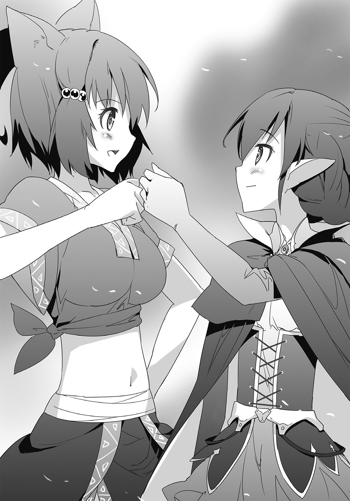
『お嬢、本当に......立派になったな』
マンゲツが嬉しそうにそう言うのを聞きながら、アイリスは顔を上げた。
目に眩いほどの蒼穹が、どこまでも広がっている。
「......いい天気だ」
清々しい気持ちで、呟いた。
※
「リョウマ様、お話とは......？」
アイリス達から離れた場所で、ガーネットが尋ねてくる。
オレは目を閉じ、何度も息を整えながら、必死で言うべきことを整理した。
とんでもない緊張感だ。多分、皇帝と戦った時よりもっと張りつめている。
「......あの、さ」
瞼を上げ、ガーネットを正面から見据えると、オレは言った。
「ガーネットへの返事、あっただろ。帝国の復興って意味ではまだまだだけど......区切りはついたことだし、あれをしようと思って」
「あ――は、はい」
ガーネットの顔に驚きが浮かび、彼女は姿勢を正す。
「その......色々考えたんだ。オレは所詮、別の世界の人間だ。いつか帰らなきゃいけない。それなのに想いを伝えていいのかって」
無言で佇むガーネットに、オレはどうにか落ち着きを保ちながら続けていった。
「ガーネットに寂しい思いをさせるんじゃないか。元の世界に戻って後悔するんじゃないか。そんなふうに思って――でも」
ふと気づいた。
じゃあ、言わなければお前は後悔しないのか？
一度目にあった心残りは、二度目になるとなくなるのか？
いつかガーネットに別れを告げる時に見せる笑顔に噓はまったくないと――心から言えるのか？
と。
「やらなければならないことをやって悔いるのと、やらなきゃいけないことをやらずに悔いるのとじゃ、オレはやっぱり、前者をとりたい」
この世界を救おうと思ったのと同じように。
自分の想いへ、素直に従うべきなんだ。
「だから、ごめん、ガーネット。オレはいつか必ず、お前に寂しい思いをさせると思う。オレだっていつか必ず、寂しい思いをするはずだ。だけど......」
だけど。
それでも、言わせてほしい。
「――好きだ、ガーネット」
オレは歩み寄ると、目を見開くガーネットの体を、深く懐に入れた。
「三年前からずっと、お前のことが、大好きだった」
「......リョウマ、様」
オレの名を呼び、ガーネットがか細い声を漏らす。
「わ、わたくしも......」
オレのことを抱き締め返してくると、彼女は震えながらも、力強く言った。
「わたくしも、あなたが大好きです...ッ！ 三年前から、ずっと！」
「......ありがとう」
オレは一旦、ガーネットのことを放すと、じっと見つめる。
そして――。
そっと、口づけをした。
「あ......」
突然のことに驚いていた様子のガーネットだったが、すぐに力を抜き、オレに身を委ねてくる。
「......オレはもう少しだけ、この世界にいる」
唇を離したあと、頰を赤らめるガーネットに向けてオレは告げた。
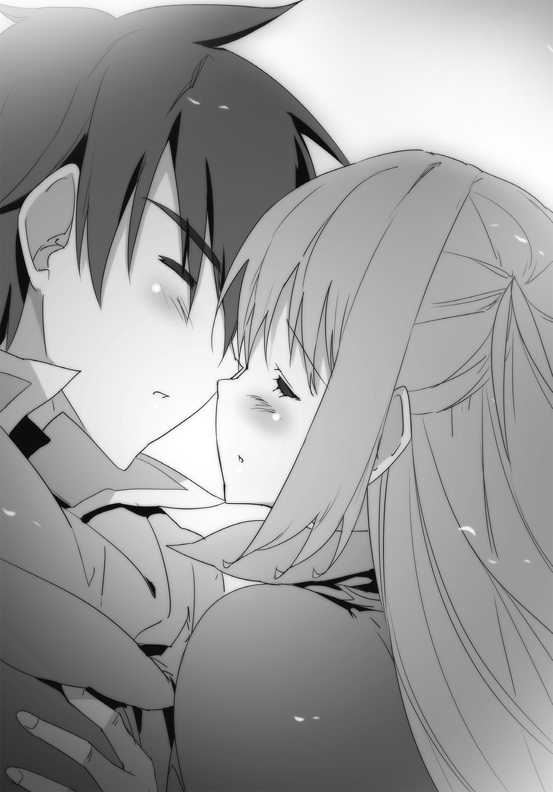
「だから、できればガーネットにも一緒にいてほしい。......いいかな？」
ガーネットは、すぐに返事をしてくれた。
出会った時と同じように。
太陽のように、輝かしい笑顔のままで。
「――はい、リョウマ様」
強い風が吹いた。まるでオレ達の背中を押すように。
同時に影が差し、その正体は、間もなく目の前を通り過ぎていった。
天空を――竜が舞う。
遙か彼方に待つだろう、未来まで誘ってくれるように。
「いこう、ガーネット。オレ達にはまだ、やらなきゃいけないことがある」
オレは声をかけ、歩き始めた。
元いた場所とは異なる世界を。
オレに守るべきものを与えてくれた、アラムヴェルトの大地を。
――なによりも大切な、人と共に。
ＦＩＮ
あ と が き
何かしら過ぎた力を持った者には、必ずその資格を試される時が来る。
そんな風に思います。
この『逆道の覇王戦記』というシリーズの主人公もまた、そうでした。
卓越したものを持つということは、持てなかった者の矢面に立つことがある、ということも同時に意味しています。
そこには、辛く、苦しい場面も多い。
けれど主人公であるリョウマは自身の覚悟を示し、その試練を乗り切ったからこそ、「英雄」と呼ばれる資格を得るに至りました。
また、リョウマだけでなく他のキャラクター達も、それぞれに「力」と「資格」の中で懸命に生きなければなりませんでした。
彼らの生き様が、読者の皆様にどんな印象を与えたかは計り知れぬことではありますが、もしこちらの思った通りに伝わっているのであれば、これ以上嬉しいことはありません。
......などと、締めの時くらいは真面目に語ってみました。
お久しぶりです。空埜一樹です。
『逆道の覇王戦記３』はいかがだったでしょうか？
小難しいことは抜きにして、気軽に楽しんで頂いたのだとしても、もちろん感謝感激雨霰の次第であります。
勇者が魔王を倒したあとの話がどうなるか、がコンセプトのこの作品でしたが、夢見たあとには現実が待っているという感じで、微妙にシビアなことも書いたりしました。
そんな中、作者であるぼくの一服の清涼剤として作用したのは、喋る鎧マンゲツの存在であったりします。
「基本的に好き放題言わせる」ということだけを決めて作ったキャラでしたが、やっているうちに本当に遠慮なく好き勝手言い始めたので、慌てて修正したりすることもありました。
とはいえ、彼を中心にすると不思議に会話が上手く回ったりもしたので、ありがたい人物（？）でもありましたが。
主人公が真面目な分、良い相棒になってくれたのではないかと思います。
もう一つ、マンゲツの他にこの作品で思い入れがあるものといえば――。
リョウマが使っていた剣、リベリオンです。
二つ続けて人間じゃないのかよ、と突っ込まれそうですが、実はリベリオンのような「呼べば来る剣」を自分の作品で出すのは念願の夢であったりしました。
というのも過去に読んだぼくが今でも大好きな作品のいくつかに、リベリオンのように呼んだら主人公のところへ来る武器、というものがありまして。
槍とか剣とかロボットとか色々ありますが、物言わずとも意思をもっているかのように主人へ付き従う姿が非常に格好よく、いつか自分で創る作品にも登場させるのだと決意を固めたものです。
実は当初、このリベリオンも喋らせようかとは思っていたのですが、実際に書いてみるとマンゲツが思いのほかお喋りだったので「あ、これは収拾がつかん」と危惧し、やめました。英断だったと思います。お喋り＆お喋りで主人公がノイローゼになる可能性も否めませんし！
とはいえ、ファンタジーといえば、でぼくが思いつく「喋る道具」「呼べば来る武器」二つを満たせたので、何か色々と感慨深いものがありました。
やりたいことはまだまだたくさんあったりするので、全て実現するために頑張っていきたい所存です。
しかしうちで飼っている犬は意思をもっているのに呼んでも来ないので、これはあれですかね、ぼくにその資格がないということですかね。伝説の勇者でなければ従わないという、そんな、何段階も上からの態度。もしや神か。
閑話休題。
この本が出る頃にはそろそろ秋の気配を感じる頃かと思いますが、ぼくは恐らく、その頃発売する新作ゲームをしていると思います。
ちなみに今もゲームをしています。
某大作ＲＰＧです。
昨日もご飯を食べてから寝るまでずっとゲームをしていました。
しかもレベル上げです。
ストーリー進んでません。
終わったあと、謎の達成感に溢れていましたが、直後に虚しさに襲われました。
でも、きっと気のせいだと思います。
なので多分これを書いたあともゲームをします。
でもレベル上げではありません。
そこまでぼくも馬鹿じゃありません。
侮ってもらっては困る。
お金を稼いで新しい武器と防具を買うのです。
いや――それだけじゃない。
ゲーム内で、カジノだってやるんですよ！
............うん。
わざわざ溜めを挟んでまで言うことではなかった、と、他ならぬぼく自身がわかっています。
何もかもを振り切ってここで謝辞へと移ります。
担当Ｔ様。企画立ち上げから色々とお世話になりました。ぼくにとって新しい舞台ということで緊張もありましたが、どうにかここまで辿り着けたことに感謝致します。
挿絵担当の植田様。物語に新たな魅力を与えて下さった素晴らしいイラストの数々、毎回頂くのが楽しみで、楽しみで、至福の時でした。
多方面から様々なメッセージを下さる方々。日々を皆様の想いで生かされております。
そして何より、この作品を読んで下さった全ての方々へ。
最大限の、感謝を。
またどこかでお会いしましょう。
九月 空 埜 一 樹
ＨＰ 『空ノページ』http://www.eonet.ne.jp/~tabibito5/
著者紹介
空埜一樹 そらの かずき
ＨＪ文庫でデビュー。以後、色々書いて今に至る。
二度目の異世界を旅する少年の物語もいよいよ佳境。
話も盛り上がって参りますので、楽しんで頂けると幸いです。
ポロリもあるよ！（多分）
illustration
植田 亮 うえだ りょう
こんにちは。イラストを担当しました植田です。
ラノベとかゲームとかいろいろ描いたり塗ったりしてます。
最近またちょっと通いで仕事する時があったりで、満員電車で押しつぶされそうになったりしてます。
なまった体にちょうどいい運動になっております。
ダッシュエックス文庫DIGITAL
逆道の覇王戦記３
著者 空埜一樹
© KAZUKI SORANO 2015
２０１５年10月31日発行
この電子書籍は、ダッシュエックス文庫「逆道の覇王戦記３」
２０１５年９月30日発行の第１刷を底本としています。
発行者 鈴木晴彦
発行所 株式会社 集英社
〒１０１－８０５０
東京都千代田区一ツ橋２丁目５番10号
０３－３２３０－６０８０（読者係）
制作所 株式会社ＩＣＥ
本作品の全部また一部を無断で複製、転載、改竄、インターネット上に掲載すること、および有償無償に関わらず、本データを第三者に譲渡することを禁じます。なお個人利用の目的であっても、コピーガードを解除しての複製は、法律で禁じられています。